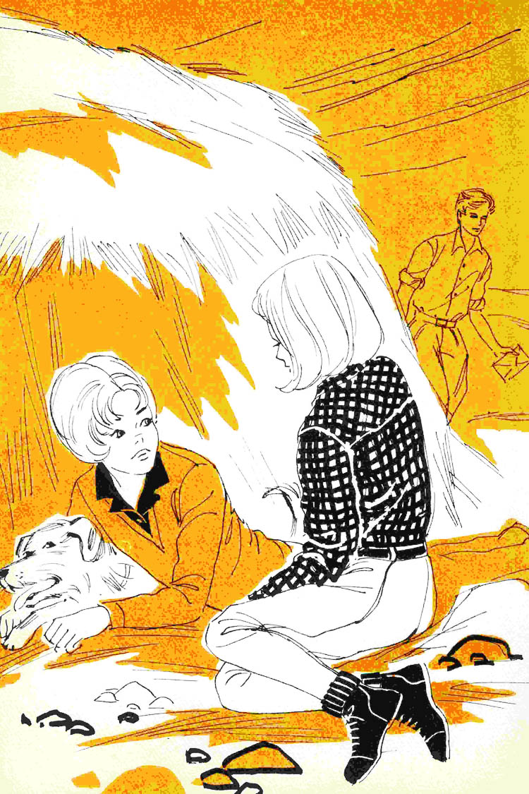
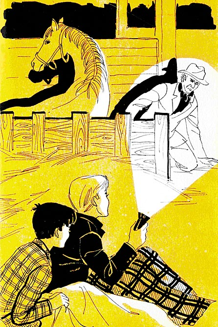
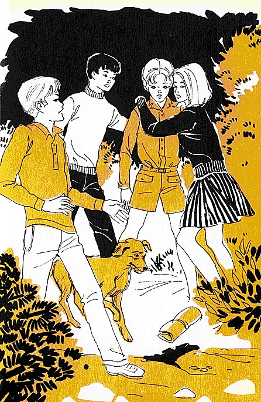
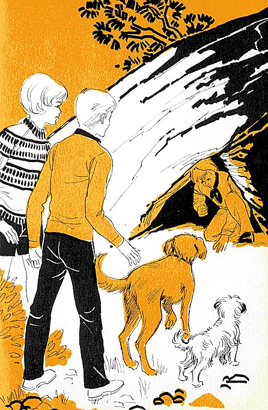

Tras pasar unos días en campamentos separados, Los Cinco se reúnen en la escuela de equitación donde Jorge, Ana y Tim disfrutan del verano junto con otras chicas. De nuevo juntos, Los Cinco planean una excursión al Páramo Misterioso, un extraño lugar cercado por una espesa bruma y marcado por una terrible leyenda, al que también se dirigen, sin razón aparente, un grupo de gitanos. Tras inspeccionar atentamente la zona, los chicos acampan cerca de una antigua mina, sin saber que en ese lugar corren un gran peligro… Al abrigo de la noche y en la soledad de la montaña alguien espera una señal para llevar a cabo sus planes.
Enid Blyton
Los Cinco en el Páramo MisteriosoePUB v0.1
Mulacen 10.04.13
Título original: Five go to Mystery Moor
Enid Blyton, 1953.
Traducción: María de Quadras
Ilustraciones: José Correas
Diseño/retoque portada: José Correas
Editor original: Mulacen (v0.1)
ePub base v2.1
—Hace una semana que estamos aquí, y lo único que hemos hecho ha sido aburrirnos —dijo Jorge.
—Eso no es verdad —replicó Ana—. Nos hemos divertido montando a caballo y rondando por las cuadras.
—¡Te repito que para mí todo ha sido aburrimiento! —vociferó Jorge—. ¡Si lo sabré yo!… Lo que más me molesta es esa insoportable Enriqueta… ¿Qué pinta esa chica aquí?
—¡Ah, Enrique! —exclamó Ana riendo—. Creí que te avendrías con ella, ya que es como tú. Ella también preferiría ser chico y todo lo hace como si lo fuera.
Las dos niñas estaban sentadas en un almiar, despachando cada una un bocadillo. En el campo que las rodeaba había varios caballos. A algunos los habían montado las niñas; a los otros los deseaban montar. Algo más allá había un viejo picadero sobre cuya puerta campeaba un gran rótulo:
«Escuela de equitación del capitán Johnson»

Hacía una semana que Ana y Jorge estaban allí. Julián y Dick se habían ido a un campamento con otros alumnos de su colegio.
La idea de ir al picadero había sido de Ana. Era muy aficionada a los caballos, y había oído hablar tanto a sus compañeras de estudio de lo divertido que era pasar días enteros en unas caballerizas, que había decidido conocer esta diversión.
Jorge no participaba de la satisfacción de Ana. Estaba de mal humor porque Julián y Dick, para variar, se habían marchado sin ella y sin Ana. ¡Se habían ido a un campamento! A Jorge le habría gustado ir con ellos; pero, naturalmente, estaba prohibido que las chicas acamparan con los chicos. El campamento del colegio de Julián era exclusivamente para muchachos.
—Es una tontería que estés tan disgustada por no haber podido ir al campamento —dijo Ana—. A los chicos no les gusta que estemos siempre con ellos. No podemos hacer las mismas cosas.
Jorge no era de la misma opinión.
—Yo puedo hacer todo lo que hagan Dick y Julián —afirmó—. Puedo trepar y escalar las cumbres más altas, y hacer excursiones tan largas como ellos, y nadar. En todo esto ganaría a muchos chicos.
—¡Lo mismo dice Enrique! —exclamó Ana echándose a reír—. Mírala, ahí viene…, dando zancadas como siempre, con las manos en los bolsillos y silbando como un mozo de cuadra.
Jorge frunció el entrecejo. Esta rivalidad entre Enrique y Jorge, a pesar de que las dos tenían las mismas ideas, era para Ana un espectáculo divertido. El verdadero nombre de Jorge era Jorgina, pero ella sólo respondía cuando se la llamaba Jorge. El verdadero nombre de Enrique era Enriqueta, pero ella contestaba únicamente cuando la llamaban Enrique.
Su edad era aproximadamente la de Jorge y también llevaba el pelo corto. Pero no lo tenía rizado.
—Es una lástima que tengas el pelo tan rizado —decía compasivamente a Jorge—. ¡Es tan propio de las niñas!
—¡Qué tontería! —respondía secamente Jorge—. Hay muchos chicos de pelo rizado.
Lo más desesperante para Jorgina era que Enriqueta montaba maravillosamente a caballo, tanto que había ganado muchas copas. Jorge no se había divertido aquella semana en la escuela de equitación porque, por primera vez en su vida, otra muchacha la había superado. Se desesperaba cuando veía a Enriqueta ir silbando de un lado a otro. Y hacerlo todo tan rápidamente y bien.
Ana se reía en su fuero interno, especialmente cuando las dos rivales se empeñaban en no llamarse una a otra Enrique y Jorge, sino por sus nombres verdaderos: Enriqueta y Jorgina. La consecuencia era que ninguna de ellas respondía a las llamadas de la otra. El capitán Johnson, el alto y fornido propietario de la escuela de equitación, estaba harto de ellas.
—¿Por qué hacéis esas tonterías? —les preguntó una mañana, al ver las agrias miradas que se dirigían durante el almuerzo—. ¡Parecéis dos parvulitas memas!
A Ana le hizo gracia la expresión. Las dos rivales debieron de odiar en aquel momento al capitán Johnson. A Ana le daba un poco de miedo. Tenía mal genio, hablaba a gritos y no podía soportar la tontería más insignificante. Pero era un maestro en cuestión de caballos y sabía reírse como el primero. Él y su esposa tenían chicos y chicas a pensión durante las vacaciones. Los hacían trabajar de firme, pero esto no era obstáculo para que los pensionistas lo pasaran allí estupendamente.
—Si no hubiera sido por Enrique, lo habríamos pasado la mar de bien esta semana —dijo Ana a Jorge, recostándose en el almiar—. La temperatura de este mes de abril ha sido magnífica, estos caballos son estupendos y tanto el capitán como su esposa me han encantado.
—Me gustaría que los chicos estuvieran aquí —dijo Jorge—. En seguida habrían puesto freno a las estupideces de Enriqueta. Si lo llego a saber, me quedo en casa.
—Pudiste haberlo hecho —dijo Ana, algo molesta—. Nada te impedía quedarte en Villa Kirrin con tu padre y tu madre. Pero preferiste venir aquí conmigo hasta que los chicos volvieran del campamento. No debes gruñir tanto si las cosas no salen exactamente como tú deseas. Con tu mal humor le amargas a una la vida.
—Lo siento —dijo Jorge—. Ya sé que estoy insoportable. Pero echo de menos a los chicos. Siempre hemos pasado juntos las vacaciones y no sé estar sin ellos. Sólo hay una cosa que me gusta, y te la voy a decir, porque sé que te alegrarás.
—No te molestes en decírmela, porque sé qué cosa es —exclamó Ana riendo—. Lo que te gusta es que Tim no tenga ninguna simpatía a Enrique.
—A Enriqueta —corrigió Jorge, haciendo una mueca—. Sí, el viejo Tim tiene sentido común y no la puede soportar. Ven aquí, Tim. Deja de husmear esas madrigueras de conejos y ven a descansar un rato. Esta mañana has corrido mucho cuando sacamos a los caballos y has olfateado centenares de madrigueras. Ahora ven a echarte aquí.
Tim se apartó de mala gana de la madriguera y se echó junto a las niñas. Lamió a Jorge y ésta le acarició.
—Precisamente estábamos diciendo, Tim, que has demostrado ser muy inteligente al no querer ser amigo de esa antipática Enriqueta —dijo Jorge.
Un repentino codazo de Ana la hizo enmudecer. Al mismo tiempo, una sombra se proyectó sobre ellas: alguien se acercaba por detrás del almiar.
Era Enriqueta. La expresión de su rostro demostraba que había oído el comentario de Jorge. Enriqueta entregó a ésta un sobre y le dijo secamente:
—Un telegrama para ti, Jorgina. Te lo he traído por si se trata de algo importante.
—¡Oh, gracias, Enriqueta! —dijo Jorge, tomando el telegrama.
Lo abrió y, después de leerlo, lanzó una exclamación de contrariedad.
—¡Fíjate! —dijo a Ana, entregándole el telegrama—. Es de mi madre.
Ana tomó el papel y lo leyó.
«Quédate una semana más. Tu padre está un poco fastidiado. Te abraza, Mamá.»
—¡Qué mala pata! —dijo Jorge, frunciendo el ceño como de costumbre—. Cuando ya habíamos planeado volver a casa dentro de un par de días para esperar en Kirrin la llegada de los chicos, nos vemos obligadas a quedarnos aquí una semana más. ¿Qué le habrá pasado a papá? A lo mejor, sólo tiene dolor de cabeza o algo parecido, y no quiere que vayamos a molestarle alborotando y yendo y viniendo por la casa.
—Podemos ir a mi casa —dijo Ana—. Pero no sé si estarás allí a gusto. Estamos haciendo obras y toda la casa está patas arriba.
—No, Ana. Sé que prefieres quedarte aquí con los caballos. Además, tus padres están fuera y nosotras no haríamos más que estorbar. Tendremos que pasar otra semana sin los chicos. Ellos, seguramente, la pasarán en el campamento.
El capitán Johnson dijo a las niñas que podían quedarse, pero que tal vez tuvieran que acampar fuera de la escuela si llegaba alguna niña más. Añadió que confiaba en que esto no les importase.
—Al contrario —dijo Jorge—. Ana y yo tenemos ganas de estar solas. Además, tenemos a Tim. Con tal que podamos venir a comer y a trajinar por aquí con ustedes, nos encantará vivir aparte.
Ana contuvo una sonrisa. Lo que Jorge deseaba era ver a Enriqueta lo menos posible. Sin embargo, sería ciertamente divertido acampar fuera si hacía buen tiempo. El capitán Johnson les podría proporcionar una tienda de campaña.
—Mala suerte, Jorgina —dijo Enrique—. Créeme que lo siento. Sé que aquí te aburres horriblemente. Es una lástima que los caballos no te gusten. También es triste que tú…
—¡Cállate ya! —exclamó Jorge, saliendo de la habitación.
El capitán Johnson fijó su mirada en Enriqueta, que estaba ante la ventana, con las manos en los bolsillos y silbando.
—¡Sois insoportables! —protestó el capitán—. ¡Tenéis que aprender a dominaros! ¡Siempre con esa manía de imitar a los chicos! ¡Prefiero mil veces a Ana! ¡Necesitáis un buen tirón de orejas! ¿Has sacado del establo la bala de paja?
—Sí —respondió Enriqueta sin volver la cabeza.
—Se dice «sí, señor». Has de ser más respetuosa con las personas mayores. Si no quieres molestarte en recordar que tengo un nombre, por lo menos, cuando te dirijas a mí, habrás de llamarme «señor» a secas.
—Señor, fuera hay un niño gitano que quiere verle. Trae un caballo bayo, sucio y tiñoso. El gitanillo dice que el caballo tiene una pata enferma y que usted le puede ayudar.
—¡Otra vez los gitanos! —exclamó el capitán Johnson—. Bien, ya voy.
El capitán salió seguido por Ana, que no deseaba quedarse sola con la encolerizada Enriqueta. Fuera estaba Jorge con un gitanillo sucio y un sufrido caballito bayo con la piel acribillada de picaduras de pulga.
—¿Qué le ocurre esta vez a vuestro caballo? —preguntó el capitán Johnson, mientras observaba la pata del animal—. Tendréis que dejarlo aquí para que yo pueda examinarlo como es debido.
—No puedo dejarlo, señor —dijo el gitanillo—. Nos vamos otra vez al Páramo Misterioso.
—Pues lo tienes que dejar —insistió el capitán Johnson—. Tu carromato tendrá que quedarse porque el caballo no puede andar. Denunciaré a tu padre a la policía si obligáis a trabajar a este pobre animal antes de que esté curado.
—¡No, no lo denuncie! —suplicó el chiquillo—. Mi padre dice que es preciso que salgamos mañana.
—¿Por qué tanta prisa? —preguntó el capitán Johnson—. ¿No puede esperar un día o dos vuestra caravana? El Páramo Misterioso estará en el mismo sitio dentro de dos días… Por otra parte, no comprendo qué interés tenéis en ir a ese lugar tan desolado… No hay ni un solo cortijo ni vivienda de ninguna especie en varios kilómetros a la redonda.
—Dejaré el caballo —dijo el chiquillo, acariciando el hocico del animal, con lo que demostró lo mucho que lo quería—. Mi padre se enfadará, pero la caravana podrá salir sin nosotros. Ya la alcanzaremos.
Hizo una especie de saludo al capitán y su figurita menuda y curtida por el sol desapareció. El caballo permanecía inmóvil.
—Llevadlo al establo pequeño —dijo el capitán Johnson a Jorge y a Ana—. En seguida iré a verlo.
Las niñas se llevaron al caballito.
—El Páramo Misterioso… —dijo Jorge—. ¡Qué nombre tan extraño! Los chicos se habrían emocionado al oírlo. En seguida habrían decidido ir a explorarlo. ¿No te parece?
—Desde luego —repuso Ana—. Ojalá estuvieran aquí. Pero yo creo que les gustará quedarse unos días más en el campamento… Ven, caballito, ven. Aquí está el establo.
Después de dejar al animal en el establo y de cerrar la puerta, las niñas emprendieron el camino de vuelta. Guillermo, el muchacho que había anunciado la llegada del gitanillo, las llamó.
—¡Jorge, Ana! ¡Ha llegado otro telegrama para vosotras.
Las dos niñas corrieron hacia la casa.
—¡Qué suerte si mamá me dijera que papá está mejor y que podemos reunimos con los chicos en Villa Kirrin! —dijo Jorge.
Rompió el sobre y lanzó un grito que sobresaltó a Ana.
—¡Mira, mira lo que dice! ¡Los chicos vendrán aquí!
Ana le arrancó el telegrama de las manos y lo leyó:
«Nos reuniremos con vosotras mañana. Si no hay sitio, acamparemos fuera del picadero. Esperamos que nos tendréis preparada una buena y emocionante aventura. Julián y Dick.»
—¡Vienen aquí! ¡Vienen aquí! —exclamó Ana, tan nerviosa como Jorge—. ¡Ahora sí que nos vamos a divertir!
—¡Cuánto siento que no les podamos ofrecer la aventura que nos piden —dijo Jorge—. Aunque, a lo mejor…
Jorgina parecía otra desde que sabía que sus primos iban a llegar al día siguiente. ¡Incluso estaba amable con Enriqueta!
El capitán Johnson movió la cabeza al enterarse de que iba a tener dos chicos más.
—No podrán estar en la casa más que a las horas de las comidas —dijo—. Todas las habitaciones están ocupadas. Habrán de dormir en las caballerizas o en una tienda de campaña. Lo mismo me da una cosa que otra.
—Entonces ya serán diez —dijo su esposa—. Julián, Dick, Ana, Jorge, Enrique…, y Juan, Susana, Alicia, Rita y Guillermo. Enrique tendrá también que acampar fuera.
—¡Pero no con nosotros! —dijo Jorge inmediatamente.
—¡Qué poco amable eres con Enrique! —dijo la señora Johnson—. ¡Y eso que tenéis gustos parecidos! Las dos preferiríais ser chicos.
—¡No me parezco ni pizca a Enriqueta! —protestó Jorgina, indignada—. Ya verá cuando lleguen mis primos, señora Johnson. A ellos no se les ocurrirá decir que Enriqueta es como yo. No creo que hagan buenas migas con ella.
—De todos modos, tendréis que estar unidos si os queréis quedar aquí —dijo la señora Johnson—. Bueno, voy a sacar algunas mantas. Los chicos las necesitarán, tanto si duermen en las caballerizas como si pasan la noche en una tienda de campaña. Ayúdame, Ana.
Ana, Jorge y Enrique eran bastante mayores que los otros cinco chicos que habitaban en la escuela de equitación; pero todos, tanto los mayores como los pequeños, estaban excitados por la noticia de la llegada de Julián y Dick. Jorge y Ana habían hablado tanto de sus aventuras en compañía de ellos, que todos los consideraban como unos héroes.
Aquel día Enriqueta desapareció después de la merienda, como si la tierra se la hubiera tragado.
—¿Dónde has estado? —le preguntó la señora Johnson cuando, al fin, la volvió a ver.
—Arriba, en mi habitación —repuso Enriqueta—. Estaba limpiándome los zapatos y los pantalones de montar. Además, me he cosido la chaqueta. Usted no cesaba de repetirme que hiciera todo esto, y lo he hecho.
—Comprendo. Te has preparado para la llegada de los héroes —dijo el capitán Johnson.
Enrique frunció inmediatamente el entrecejo, como solía hacerlo Jorge.
—¡Nada de eso! —replicó—. Hace mucho tiempo que quería hacer lo que he hecho. Si los primos de Jorgina son como ella, no simpatizaremos, se lo aseguro.
—Pero tal vez simpatices con mis hermanos —dijo Ana, alegremente—. De lo contrario, habrá que pensar que eres una chica poco sociable.
—¡Qué tontería! —dijo Enriqueta—. Los primos de Jorgina y tus hermanos son las mismas personas.
—¡Has hecho un gran descubrimiento! —exclamó Jorgina, burlona. Pero se sentía demasiado feliz para continuar aquella estúpida polémica y se marchó con Tim, silbando alegremente.
—Julián y Dick vienen mañana, Tim —dijo al perro—.
Saldremos juntos los cinco como de costumbre. Te alegra la noticia, ¿verdad, Tim?
—¡Guau! —aprobó Tim, moviendo la cola. Había comprendido perfectamente lo que la niña le decía.
A la mañana siguiente, Jorge y Ana consultaron en la guía los trenes que llegaban a aquella estación, situada a más de tres kilómetros del picadero.
—Vendrán en éste —dijo Jorge señalándolo con el dedo—. Es el único que hay esta mañana y llega a las doce y media. Iremos a recibirlos.
—Bien —dijo Ana—. Saldremos a las doce menos diez, y nos sobrará tiempo. Los ayudaremos a transportar sus cosas, aunque no creo que traigan muchas.
—Llevad los ponis al Campo de Espinos, ¿queréis? —les gritó el capitán Johnson—. ¿Podéis con los cuatro?
—Sí, sí —respondió Ana, complacida. Le gustaba mucho ir al Campo de Espinos por el estrecho camino que discurría entre celidonias, violetas, primaveras y el fresco verdor de los floridos matorrales—. Vamos, Jorge. Llevemos a los ponis ahora. Hace una mañana estupenda.
Salieron con los cuatro caballitos y con Tim pisándoles los talones. El fiel Tim era una buena ayuda para el manejo de los caballos, especialmente en las caballerizas, cuando había que sujetar a alguno de ellos.
Apenas se marcharon las niñas, se oyó el timbre del teléfono. Llamaban a Ana.
—Lo siento, pero en este momento no está aquí —dijo la señora Johnson, que fue quien atendió la llamada—. ¿Con quién hablo? ¡Ah!, ¿eres su hermano Julián! ¿Quieres que le diga algo?
—Sí, por favor —repuso Julián—. Dígale que llegaremos a la parada del autobús de Milling Green a las once y media… ¡Si pudieran venir ella y Jorgina con un cochecito…! Llevamos nuestra tienda de campaña y varias cosas más…
—Sí, contad con el coche. Precisamente tenemos uno para eso, para enviarlo a la estación o a la parada del autobús —dijo la señora Johnson—. Jorge y Ana pueden conducirlo perfectamente. Nos alegramos de que vengáis. Aquí hace muy buen tiempo y os divertiréis.
—¡Claro que nos divertiremos! —exclamó Julián—. Muchas gracias por admitirnos en su escuela. No les causaremos ninguna molestia; por el contrario, los ayudaremos en todo lo que podamos.
La señora Johnson se despidió y colgó el auricular. Desde la ventana vio pasar a Enriqueta, mucho más compuesta y aseada que de costumbre. La llamó y le preguntó:
—¡Enrique! ¿Dónde están Jorge y Ana? Julián y Dick llegarán a la parada del autobús de Milling Green a las once y media y les he dicho que Ana y Jorgina irán a recibirlos. ¿Quieres avisarlas? Que lleven el cochecito. Pueden enganchar a Winkie.
—Descuide —dijo Enrique.
Pero luego recordó que Jorge y Ana se habían ido al Campo de Espinos con los cuatro caballos.
—¡Oiga! —gritó—. ¡No llegarán a tiempo! ¿Quiere que vaya a recibirlos yo con el coche?
—Sí, Enrique; te lo agradeceré —aceptó la señora Johnson, y añadió—: Habrás de darte prisa. El tiempo pasa volando. ¿Dónde está Winkie? ¿Está en el campo grande?
—Sí —respondió Enriqueta.
Y salió corriendo hacia el campo grande.
Pronto estuvo el caballo tirando del cochecito y Enriqueta en el asiento del cochero. La niña conducía hábilmente, y se regocijaba al pensar en la cara de tontas que pondrían Jorge y Ana cuando supieran que los chicos habían llegado sin que ellas se enterasen.
Julián y Dick estaban ya en la parada del autobús cuando llegó Enriqueta. Al ver el cochecito, los dos lo miraron con la esperanza de que una de las niñas fuera a recogerlos.
—No es ninguna de las dos —dijo Dick—. Debe de ser una chica que se dirige al pueblo. ¿Habrán recibido nuestro recado? Confiaba en que nos esperarían en la parada del autobús. En fin, esperaremos unos minutos más.
Acababan de volver a sentarse en el banco de la parada del autobús, cuando el cochecito se detuvo ante ellos. Enriqueta los saludó expresivamente.
—¿Sois los hermanos de Ana? —preguntó—. Ana no ha recibido vuestro recado, y yo he venido a buscaros en su lugar. ¡Subid!
—¡Oh! Muy agradecidos —dijo Julián, empezando a transportar su equipaje al cochecito—. Yo soy Julián y éste Dick. ¿Cómo te llamas tú?
—Enrique —respondió Enriqueta, mientras ayudaba a llevar al coche sus paquetes. Los cargó resueltamente y ordenó al caballo, con un simple grito, que no se moviera—. Me alegro de que hayáis venido —continuó—. Hay demasiados críos en las caballerizas. Estando vosotros, será otra cosa. Supongo que os alegraréis de ver a Tim.
—Tim es un buenazo —dijo Dick, mientras transportaba sus cosas, ayudado también por Enriqueta, que era delgada pero fuerte.
—¡Ya está todo! —dijo, haciendo una amable mueca a los muchachos—. Ya nos podemos ir… ¿O preferís tomar un helado o cualquier cosa antes de marcharnos? No comemos hasta la una.
—No. Prefiero que nos vayamos —dijo Julián.
Enrique se instaló en el pescante y tomó las riendas, mientras los muchachos ocupaban los asientos posteriores. A una orden de Enriqueta, Winkie se puso en marcha a buen paso.
—¡Qué chico tan simpático! —dijo Dick a Julián a media voz—. Ha sido una verdadera amabilidad que haya venido a buscarnos.
Julián asintió con un movimiento de cabeza. Le había defraudado que Ana y Jorge no hubieran ido a recibirlos con Tim. Era un consuelo que alguien lo hubiera hecho por ellas. No habría sido nada agradable recorrer a pie un largo trecho de carretera, llevando a cuestas el equipaje.
Cuando llegaron a la caballerizas, Enrique los ayudó también a descargar los fardos. La señora Johnson les oyó llegar y salió a saludarlos.
—Pasad, muchachos. Os he preparado un ligero almuerzo, porque estoy segura de que os habréis desayunado muy temprano. Deja las cosas aquí, Enrique. Si estos chicos han de dormir en las caballerizas no hace falta que entremos los paquetes a la casa. ¡Cuánto siento que Jorge y Ana no hayan regresado todavía!
Enrique desapareció con el cochecito, mientras los dos chicos entraban en la acogedora mansión y se sentaban a tomar una limonada y a saborear unos bizcochos de confección casera. Apenas habían empezado a comer, Ana irrumpió en la habitación.
—¡Enrique me ha dicho que habíais llegado! ¡Siento no haber estado en la parada del autobús! Creíamos que llegaríais en el tren.
Tim llegó también a toda velocidad, moviendo frenéticamente la cola, y lamió a los dos muchachos, que estaban abrazando a Ana. Finalmente, llegó Jorge, radiante de alegría.
—¡Julián! ¡Dick! ¡Cuánto me alegro de que hayáis venido! Sin vosotros, esto es un aburrimiento. ¿Os ha ido a recibir alguien?
—Sí —respondió Dick—, un chico simpatiquísimo. Nos ayudó a llevar los paquetes al coche. Estuvo muy amable. Nunca nos hablasteis de él.
—¡Oh! Debe de ser Guillermo —dijo Ana—. Es demasiado niño todavía. No nos pareció interesante hablaros de los críos que hay aquí.
—No, no es pequeño —dijo Dick—. Es un niño mayor…, y muy fuerte. ¿Por qué ni siquiera lo mencionasteis en vuestras cartas?
—En cambio —dijo Jorge—, sí que os hemos hablado de Enriqueta, una chica odiosa. Se cree que parece un chico y siempre va silbando. A nosotras nos da risa. También os reiréis de ella vosotros.
Una repentina sospecha asaltó a Ana.
—Ese chico que os ha ido a recibir, ¿os dijo su nombre?
—Sí. Me parece que ha dicho que se llamaba Enrique —respondió Dick—. Es un chico estupendo. Creo que seremos buenos amigos.
Jorge abrió desmesuradamente los ojos. No podía creer lo que estaba oyendo.
—¡Enrique! ¿De modo que ésa es la que os ha ido a recibir?
—Ésa no: ése. Es un chico de sonrisa encantadora.
—¡Pero si es Enriqueta! —gritó Jorge con el rostro rojo de irá—, esa chica odiosa de la que os he hablado, que quiere parecer un chico y se pasea silbando de un lado para otro. Se hace llamar Enrique en vez de Enriqueta, lleva el pelo corto y…
—Entonces se parece a ti, Jorge —dijo Dick—. ¡Caramba! Nunca habría creído que fuera una chica. Nos ha hecho una demostración de fuerza y energía. Desde luego, ese chico me ha encantado…, bueno, esa chica.
—¡Oh! —exclamó Jorge, cada vez más furiosa—. ¡Es una estúpida! Os fue a recibir sin decirnos ni una palabra a nosotras y encima os hace creer que es un chico. ¡Todo lo echa a perder!
—No te comprendo, Jorge —dijo Julián—. Muchas veces nos ha hecho gracia a nosotros ver que te tomaban por un chico, aunque, en verdad, no sé por qué. Creía que ahora ya no dabas a eso tanta importancia. No debes enfadarte con nosotros porque hayamos creído que Enrique era un chico y nos haya parecido simpático…, bueno, simpática.
Jorge salió corriendo de la habitación. Julián movió la cabeza y miró a Dick.
—Hemos metido la pata —dijo—. ¡Qué tonta es esa chica! Lo natural es que hubiera simpatizado con Enrique, ya que tiene exactamente las mismas ideas que ella. Bueno… supongo que ya se le pasará.
—La situación será un poco embarazosa —dijo sencillamente Ana.
Y tenía razón. Iba a ser embarazosa, y no sólo un poco.
Apenas hubo salido Jorge de la habitación con el ceño fruncido, entró Enriqueta con las manos en los bolsillos del pantalón de montar.
—¡Hola, Enriqueta! —dijo Dick.
Enrique hizo una mueca que dejó al descubierto sus dientes.
—¿Ya os lo han dicho? Me sentí feliz cuando vi que me tomabais por un chico.
—Incluso llevas los botones a la derecha —dijo Ana, notando este detalle por primera vez—. ¡Eres un caso, Enrique! Y Jorge no tiene nada que envidiarte.
—Pero yo parezco más un chico de verdad que Jorge —afirmó Enriqueta.
—Sólo por el pelo —dijo Dick—. Tú lo tienes liso.
—No digas eso delante de Jorge —le advirtió Ana—. Sería capaz de cortárselo al rape, e incluso de afeitárselo.
—Bueno, el caso es que estamos muy agradecidos a Enrique por haber tenido la amabilidad de salir a recibirnos y habernos ayudado a cargar nuestras cosas —dijo Julián—. ¿Nadie quiere más bizcochos?
—No, gracias —respondieron Ana y Enriqueta.
—¿Debemos dejar algunos para demostrar nuestra buena educación? —preguntó Dick—. Están hechos en casa y son de rechupete. De buena gana me zamparía todos los que quedan.
—Aquí no nos mostramos bien educados —dijo Enrique—. Ni tampoco exageradamente limpios. Si nos cambiamos los pantalones de montar para la cena, es porque se nos obliga… ¡Ah! Pero el capitán Johnson no se cambia los suyos.
—¿Hay alguna noticia? —preguntó Julián, dando fin a su limonada—. ¿Ha sucedido algo interesante?
—No, nada —repuso Ana—. Lo único interesante aquí son los caballos. Este lugar es muy solitario… Pero también me ha interesado otra cosa: el nombre del gran páramo que se extiende desde aquí hasta la costa. Se le llama el «Páramo Misterioso».
—¿Por qué? —preguntó Dick—. Sin duda, debe este nombre a algún antiguo misterio.
—¡Quién sabe! —dijo Ana—. Creo que ahora sólo van allí los gitanos. Ayer vino aquí un gitanillo con un caballo cojo, y dijo que su tribu se marchaba al Páramo Misterioso. No se comprende que quieran habitar en. ese desierto… No hay ningún cortijo, ni siquiera una mala choza.
—A veces, los gitanos tienen ideas raras —dijo Enrique—. Pero me gusta su costumbre de dejar mensajes para los gitanos que les siguen… Un patrin, como dicen ellos.
—Sí, ya he oído hablar de eso —dijo Dick—. Colocan palos y hojas de un modo especial, ¿no?
—Sí —repuso Enrique—. El jardinero de mi casa me enseñó unos palos colocados junto a la verja, en la parte trasera del jardín, y me dijo que era un mensaje para los gitanos que pasaran por allí después que ellos. Además, me lo tradujo.
—¿Qué significaba? —preguntó Julián.
—Pues significaba: «No pidáis nada aquí. Gente avara. Malas personas» —explicó Enrique riendo—. Por lo menos, esto es lo que dijo el jardinero.
—Podríamos interrogar sobre eso al gitanillo que vino con el caballo cojo —dijo Ana—. A lo mejor, nos enseña a formar estos mensajes. Me gustaría aprender por lo menos algunos. Esto podría sernos útil alguna vez.
—Sí, y también preguntaremos a ese muchachito por qué van los gitanos al Páramo Misterioso —dijo Julián, poniéndose en pie y sacudiéndose las migas de la americana—. No cabe duda de que van por algún motivo.
—¿Dónde se habrá metido Jorge? —preguntó Dick—. Sería una tontería que siguiera enfadada.
Jorge estaba en una de las cuadras, cepillando un caballo con tanta energía, que el animal daba muestras de inquietud. ¡Zis-zas, zis-zas! ¡Qué modo de manejar el cepillo! Jorge trataba de desahogarse, de calmar su indignación. No quería aguar la fiesta a los chicos ni a Ana, pero no podía disimular su furor contra aquella odiosa Enriqueta que había ido a recibir a Dick y a Julián, fingiendo ser un chico. Además, los había ayudado a cargar los paquetes, bromeando con ellos. ¡Y ellos se habían dejado engañar! ¡Qué tontos habían sido!
—¡Hola, Jorge! —dijo Dick desde la puerta del establo—. Permíteme que te ayude. ¿Sabes que estás muy morena? ¡Y tan pecosa como siempre!
Jorge le dirigió una forzada sonrisa y le alargó el cepillo.
—Toma; sigue cepillando. ¿Tenéis ganas de montar, Ju y tú? Aquí hay muchos caballos y podéis escoger.
Dick se alegró al ver que Jorge ya no parecía estar enojada.
—Desde luego, sería divertido hacer una excursión a caballo de todo un día. Podríamos hacerla mañana y aprovecharíamos la ocasión para echar un vistazo al Páramo Misterioso. ¿Qué te parece?
—Muy bien —repuso Jorge, levantando un haz de paja—. Pero no iré si va esa chica —advirtió desde detrás del haz que llevaba en brazos.
—¿Qué chica? —preguntó Dick—. ¡Ah, ya sé! Te refieres a Enrique. Es que sigo pensando en ella como si fuera un chico, ¿sabes?… No, no vendrá con nosotros. Seremos los cinco como hemos sido siempre.
—¡Entonces, estupendo! —exclamó Jorge alegremente—. Mira, aquí está Julián. Ayúdanos, Ju.
A Jorgina le parecía magnífico tener de nuevo a los dos chicos a su lado y bromear y reír con ellos. Aquella tarde salieron a pasear por el campo los cinco, y los muchachos contaron cosas del campamento. Se sentían como en sus mejores tiempos y Tim estaba tan encantado como los demás. Iba de uno a otro, lamiéndoles las manos y agitando violentamente la cola.
—Es la tercera vez que me has abofeteado con tu cola, Tim —dijo Dick esquivándola—. ¡Podrías mirar hacia atrás antes de dar los coletazos!
—¡Guau! —ladró alegremente Tim, dando media vuelta para lamer a Dick, de modo que esta vez azotó con la cola el rostro de Julián.
Crujieron las ramas del seto que había a sus espaldas. Jorge se estremeció, segura de que se acercaba Enriqueta. Tim ladró furiosamente.
Pero no era Enriqueta, sino el gitanillo. En su sucia carita se veía una serie de surcos de tono más claro, trazados por lágrimas recientes que se habían deslizado sobre la suciedad.
—Vengo a buscar al caballo —dijo—. ¿Sabéis dónde está?
—Todavía no puede andar —le advirtió Jorge—. El capitán Johnson ya te dijo que había que esperar… Pero ¿qué te pasa? ¡Has llorado!
—Es que mi padre me ha molido a golpes.
—¿Por qué? —preguntó Ana.
—Porque dejé aquí el caballo. Mi padre dice que sólo necesitaba una untura y una venda. Ya sabéis, tenía que salir hoy con la caravana.
—No puedes llevarte a ese pobre animal —dijo Ana—. Todavía no está en condiciones de arrastrar un pesado carromato. No querrás que el capitán Johnson os denuncie a la policía por hacer trabajar a un caballo enfermo. Ya te lo dijo, y cuando él dice una cosa, la hace.
—Lo sé, pero tengo que llevarme el caballo —insistió el gitanillo—. Si volviera sin él, mi padre me mataría.
—Ya veo que no se atreve a venir él. Por eso te manda a ti —dijo Dick.
En vez de contestar, el chiquillo se pasó la sucia manga de su chaqueta por la cara y sorbió aire por la nariz.
—¿Es que no llevas pañuelo? ¿Te has lavado alguna vez la cara? —le preguntó Dick.
—No, nunca —respondió el niño, visiblemente extrañado—. Dejad que me lleve el caballo. Os repito que si vuelvo sin él, mi padre me matará de una paliza.
Se echó a llorar y los niños se compadecieron de él. Daba pena verlo tan flaco y andrajoso. Pero lo más chocante era su manía de sorber el aire por la nariz, como si husmeara.
—¿Cómo te llamas? —le preguntó Ana.
—El Husmeador —dijo el gitanillo—. Así me llama mi padre.
Desde luego, el nombre le cuadraba. Pero demostraba también que su padre era un hombre sin corazón.
—Eso es un apodo —dijo Ana—. Has de tener un nombre verdadero.
—Sí, pero lo he olvidado —dijo el Husmeador—. Dejad que me lleve el caballo. Mi padre me está esperando.
Julián se puso en pie.
—Iré a hablar con tu padre. Intentaré hacerlo razonar. ¿Dónde está?
—Allí —respondió el Husmeador, olfateando con más fuerza que nunca y señalando por encima de la valla.
—Yo también voy —dijo Dick.
Al fin, todos salieron por la puerta de la valla. En las cercanías vieron a un hombre de rostro moreno y aspecto rudo. Su cabello espeso y rizado estaba empapado de aceite. De sus orejas pendían dos enormes aros de oro. Al oír los pasos del pequeño grupo levantó la cabeza.
—Su caballo no puede andar todavía —dijo Julián—. Tendrá que esperar uno o dos días. Así lo ha dicho el capitán Johnson.
—Lo quiero ahora —replicó el gitano ásperamente—. Esta noche o mañana hemos de ponernos en camino hacia el Páramo. No puedo esperar.
—Pero ¿por qué tiene tanta prisa? —preguntó Julián—. El Páramo le esperará a usted, porque está siempre en el mismo sitio.
El gitano arrugó las cejas y balanceó su cuerpo, apoyándose primero en un pie y después en otro.
—Espere un par de días —dijo Dick—, y entonces podrá usted ir a reunirse con sus compañeros.
—¡Escucha, padre! —dijo impetuosamente el Husmeador—. Sal con la caravana. Vete con el carromato de Mose y deja el nuestro aquí. Yo engancharé el caballo mañana o pasado e iré a reunirme con vosotros.
—¿Cómo sabrás el camino que han seguido? —preguntó Jorge.
El Husmeador hizo un ademán despectivo.
—Eso es muy fácil. Ya me dejarán un patrin.
—Es verdad —dijo Dick. Luego se volvió hacia el silencioso gitano—. Bueno, ¿qué le parece? Creo que el Husmeador ha tenido una buena idea. Desde luego, hoy no se puede usted llevar al caballo.
El gitano se encaró con el pobre Husmeador y le habló a gritos y con acento amenazador. El chiquillo echó a correr. Huía de las palabras como si éstas fueran golpes. Los cuatro amigos no entendieron lo que el gitano decía, pues hablaba en un lenguaje desconocido para ellos. Luego el gitano dio media vuelta, y, sin dirigirles ni siquiera una mirada, se alejó, entre un leve tintineo de sus pendientes.
—¿Qué ha dicho? —preguntó Julián.
El Husmeador, que había vuelto a reunirse con los niños, sorbió aire por la nariz como de costumbre, y repuso:
—Estaba muy enfadado. Ha dicho que se iría con los demás y que ya saldría yo cuando Clip pudiera tirar del carromato. ¡Qué bien vamos a pasar aquí la noche Liz y yo!
—¿Quién es Liz? —preguntó Ana, creyendo que se trataría de alguna persona amiga del pobre muchacho.
—Mi perra —respondió el Husmeador, sonriendo por primera vez—. No la he traído porque, a veces, le da por cazar gallinas, y esto no le gusta al capitán Johnson.
—Comprendo que no le guste —dijo Julián—. En fin, ya está todo arreglado. Ven mañana a ver a Clip, o Clop, o como se llame tu caballo. A lo mejor, ya podrá ponerse en camino.
—Me alegro de haberlo podido dejar —dijo el Husmeador, frotándose la nariz—. No quiero que Clip se quede cojo. Temía no poder convencer a mi padre. ¡Tiene tan mal genio!
—Ya lo hemos notado —dijo Julián, mirando el rostro magullado del chiquillo—. Ven mañana. Quisiéramos que nos enseñaras cómo se componen los mensajes que utilizáis los de vuestra raza. Nos gustaría saber descifrarlos.
—Vendré mañana —prometió el Husmeador, acompañando sus palabras de un enérgico movimiento de cabeza—. ¿Queréis venir a ver mi carro? Estaré solo con Liz.
—Por mí, no hay inconveniente —dijo Dick—. Sí, iremos. Confío en que no huela demasiado.
—¿Que no huela? —dijo el Husmeador, sorprendido—. No sé si huele o no. Os enseñaré a componer mensajes como los nuestros, y veréis las cosas que Liz sabe hacer. Trabajó en un circo.
—Tendremos que llevar a Tim para que conozca a esa perra tan lista —dijo Ana, acariciando a Tim, que acababa de regresar de su cacería de conejos. Y preguntó al cazador—: oye, ¿te gustaría ir a visitar a una perra muy lista que se llama Liz?
—¡Guau! —repuso Tim moviendo la cola, feliz y galante.
—Muy bien, Tim —dijo Dick—. Me alegro de que aceptes nuestra proposición. Procuraremos ir a tu carromato mañana, Husmeador, una vez sepas cómo está Clip. A mí me parece que no te lo podrás llevar, pero ya veremos.
Aquella noche los chicos durmieron en una de las cuadras. El capitán Johnson les dijo que podían utilizar colchones o simplemente dormir en mantas extendidas sobre la paja.
—Preferimos lo último —decidió Julián—. Es una cama la mar de cómoda.
—¡Ah, si Ana y yo pudiéramos dormir también en las caballerizas! —exclamó Jorge—. No lo hemos hecho nunca. ¿Nos lo permite, capitán Johnson?
—No. Vosotras tenéis las camas que habéis pagado —repuso el capitán—. Además, las chicas no pueden dormir en las cuadras, ni siquiera las chicas que quieren parecer chicos.
—Yo he dormido más de una vez en una cuadra —dijo Enriqueta—. En mi casa, cuando tenemos demasiados invitados, siempre duermo en la paja.
—¡Qué desgracia para los caballos! —comentó Jorge.
—¿Por qué? —preguntó Enrique.
—Porque no los debes de dejar dormir con tus ronquidos.
Enriqueta se fue, lanzando un gruñido. Era verdad que roncaba, y le sabía mal, pero no podía remediarlo.
—¡No te preocupes! —le gritó Jorge—. Tus ronquidos son preciosos, Enriqueta, muy varoniles.
—¡Calla! —dijo Dick, molesto por las impertinencias de Jorgina.
—No me digas a mí que me calle —protestó Jorge—. Díselo a Enriqueta.
—¡No seas estúpida! —le dijo Julián, lo que hirió profundamente a Jorge, que salió de la habitación con un gruñido muy semejante al lanzado hacía un momento por Enriqueta.
—¡Oh! —exclamó Ana—. Siempre están así. Primero Enrique y luego Jorge; después Jorge y en seguida Enrique. ¡Qué par de tontas!
Fue a ver dónde tenían que dormir los chicos. Era un pequeño establo ocupado únicamente por el caballito de los gitanos, que en aquel momento dormía plácidamente, con la pata vendada extendida en el suelo. Ana lo acarició. Era muy feo, pero tenía unos bellos y dulces ojos castaños.
Los chicos llevaron al establo montones de paja, y mantas y alfombras viejas. Ana calificó todo aquello de estupendo.
—Podréis lavaros y arreglaros en la casa —dijo a los muchachos—. Aquí sólo vendréis a dormir. ¿Verdad que huele bien? No hay más que paja, heno y el caballo. Me parece que este caballito no os molestará. Tal vez esté algo inquieto si le duele la pata.
—¡Esta noche nada nos molestará! —dijo Julián—. Después de la vida de campamento, al aire libre, azotados por el viento en las montañas y otras molestias parecidas, estoy seguro de que dormiremos como lirones. Creo que voy a pasarlo muy bien aquí, Ana. Es un lugar apacible y delicioso.
Jorge asomó la cabeza por la puerta.
—Si queréis, os traeré a Tim —dijo, deseosa de hacer olvidar su arranque de ira.
—No, Jorge, gracias. No me seduce tener al viejo Tim paseándose sobre mí toda la noche, con el propósito de encontrar la parte más blanda de mi cuerpo para echarse a dormir en ella —dijo Julián—. Míralo. Está enseñándome a hacer una buena madriguera para dormir. ¡Hala, Tim! ¡Fuera de mi paja!
Tim se había subido al lecho de paja y daba vueltas sobre sí mismo, a fin de abrirse un hueco para dormir. Se detuvo y miró a los chicos con la boca abierta y la lengua colgando por un lado.
—Se está riendo —dijo Ana.
Y parecía reírse de ellos. Ana le abrazó y Tim, después de lamerla una y otra vez, continuó su trabajo.
En este momento llegó alguien, silbando fuertemente, y asomó la cabeza por la puerta.
—Os traigo dos almohadas viejas. La señora Johnson dice que dormiréis mejor si tenéis algo para apoyar la cabeza.
—Muchas gracias, Enrique —dijo Julián, tomando las almohadas.
—Eres muy amable, Enriqueta —dijo Jorge.
—Lo he hecho con mucho gusto, Jorgina —respondió Enrique.
Los dos chicos se echaron a reír. Afortunadamente, la campana sonó en aquel momento, anunciando la cena, y todos se dirigieron al punto a la casa. En el picadero se tenía siempre buen apetito.
Por la noche las chicas cambiaban mucho de aspecto, pues tenían que quitarse los sucios pantalones de montar y ponerse vestidos limpios. Ana, Enrique y Jorge corrieron a cambiarse la ropa antes de que la señora Johnson tocara la campana por segunda vez. Siempre esperaba diez minutos, en atención a que algún chico podía no haber terminado aún su trabajo en el picadero, pero cuando sonaba por segunda vez la campana, todo el mundo tenía que estar en la mesa.
Jorge estaba bonita. Su cabello rizado armonizaba a la perfección con una falda y una blusa, pero a Enrique no la favorecía su vestido de volantes.
—¡Parece un chico disfrazado! —le dijo Ana, lo cual halagó a Enrique, pero molestó a Jorge.
Durante la cena la conversación versó principalmente sobre las prodigiosas hazañas que Enrique había realizado en su vida. Tenía tres hermanos, y hacía todo cuanto hacían ellos, e incluso mucho mejor, según afirmaba Enriqueta.
Habían conducido su barco hasta Noruega y habían ido a caballo de Londres a York.
—¿No iba con vosotros Dick Turpin —preguntó Jorge con sorna— montando su caballo Black Bess? Supongo que lo dejaríais muy atrás.
Enrique fingió no haberla oído y siguió contando las proezas de su familia. Había atravesado a nado profundos ríos, había subido a las nevadas cimas de las más altas montañas… ¡Cielo santo, no había ni una sola cosa que ella no hubiera hecho!
—¡Lástima que no hayas sido chico, Enrique! —dijo la señora Johnson, que era exactamente lo que Enrique deseaba que dijeran.
—Cuando nos hayas contado cómo subiste, antes que nadie, al Everest, tal vez hayas dado fin a tu primer plato —le dijo el capitán Johnson, harto de tanta charlatanería.
Jorge se desternillaba de risa, no porque la frase le hubiera parecido graciosa, sino porque no desaprovechaba ninguna ocasión de reírse de Enriqueta. Ésta se acabó a toda prisa lo que le quedaba en el plato. Le encantaba dejar a todo el mundo estupefacto con sus extraordinarias narraciones. Jorge no creyó ni una sola palabra de lo que dijo, pero Dick y Julián juzgaron que aquella chica alta y fuerte era muy capaz de hacer las cosas tan bien como sus hermanos.
Después de cenar aún había que realizar algunas pequeñas tareas. Enrique tuvo buen cuidado en mantenerse lejos de Jorge para evitar sus pullas. Claro que esto no le importaba, sabiendo que todos los demás la consideraban como un ser extraordinario. Aunque pronto había de irse a la cama, se quitó el vestido de volantes y volvió a ponerse los pantalones de montar.
Jorge y Ana acompañaron a los chicos al establo. Julián y Dick llevaban puestos los pijamas y encima las batas, e iban bostezando.
—¿Lleváis vuestras lámparas de bolsillo? —les preguntó Jorge—. Ya sabéis que no se pueden usar velas en las caballerizas, donde abunda la paja… Buenas noches. Que descanséis. Supongo que esa engreída de Enriqueta no vendrá a despertaros antes de salir el sol, silbando como un vendedor de periódicos.
—Esta noche no podrá despertarme nada, absolutamente nada —dijo Julián, bostezando ruidosamente.
Se dejó caer sobre la paja y se tapó con una vieja manta.
—¡Qué cama tan estupenda! —añadió—. Para dormir no hay nada como la paja de un establo.
Las niñas se echaron a reír. En verdad, los chicos parecían estar muy cómodos.
—¡Que durmáis mucho! —dijo Ana, saliendo del establo en compañía de Jorge.
Pronto se apagaron todas las luces. Enrique estaba ya durmiendo, y roncando como de costumbre. Tenía que dormir sola en una habitación, pues nadie podía pasar la noche a su lado; pero, así y todo, Ana y Jorge oían sus ronquidos… ¡Jorrr… jorrr… jorrrr…!
—¡Esa Enriqueta es insoportable! —dijo Jorge, soñolienta—. ¡Qué ronquidos! Escucha. No quiero que venga con nosotros mañana si hacemos una excursión a caballo. ¿Me oyes, Ana?
—No del todo —murmuró Ana, intentando en vano abrir los ojos—. Buenas noches, Jorge.
Tim dormía, como de costumbre, enroscado a los pies de Jorge. Parecía tener los oídos tan cerrados como los ojos. Estaba tan cansado como sus dueños. Se pasaba el día corriendo por las montañas, escarbando en las madrigueras y persiguiendo a los veloces conejos, y por la noche dormía como un lirón.
Los dos chicos instalados en el establo dormían profundamente bajo las viejas mantas. Cerca de ellos el caballito bayo y blanco no cesaba de moverse, pero los muchachos no lo oían. Un mochuelo penetró en el establo en busca de caza, y lanzó un grito agudo, con la esperanza de que alguna rata huyera presa de pánico. Entonces se arrojaría sobre ella y la atraparía con sus garras.
Pero ni siquiera este graznido despertó a los muchachos, tan rendidos estaban y tan profundo era su sueño.
La puerta del establo estaba cerrada. De pronto, Clip se estremeció y miró hacia la puerta. ¡El pestillo se movía! Alguien lo levantaba desde fuera. Con las orejas enhiestas, Clip percibió el rumor de algo que se deslizaba a rastras.
Miró hacia la puerta. ¿Quién podría ser? Su instinto le decía que podía ser el Husmeador, aquel chiquillo a quien tanto quería. El Husmeador era siempre bueno con él. No le gustaba estar lejos del gitanillo. Escuchó por si oía los resoplidos que acompañaban siempre al Husmeador. No los oyó.
La puerta se abrió lentamente, muy lentamente y sin ruido. Clip vio el cielo de la noche tachonado de estrellas, y una figura que se destacaba en la oscuridad…, una sombra negra.
Alguien entró en el establo y dijo en un susurro: «¡Clip!»
El caballo lanzó un leve relincho. No era la voz del Husmeador; era la de su padre. A Clip no le era simpático aquel hombre, amante de prodigar puñetazos y toda clase de golpes, sin excluir los latigazos. Por eso permaneció inmóvil, preguntándose a qué se debería aquella visita del gitano.
Éste ignoraba que Julián y Dick dormían en el establo. Había entrado sin hacer ruido porque suponía que en la cuadra habría otros caballos y no los quería asustar. No llevaba ninguna luz, pero su penetrante vista de gitano descubrió en seguida a Clip echado en la paja.
Se dirigió a él de puntillas… y tropezó con los pies de Julián que sobresalían del lecho de paja. El ruido sordo de su caída despertó a Julián, que se incorporó inmediatamente.
—¿Quién ha entrado aquí? ¿Qué quiere el que sea?
El gitano se escondió detrás de Clip y guardó silencio. Julián se preguntó si habría soñado. Pero notó que los pies le dolían. Alguien se los había pisado o había caído sobre ellos. Despertó a Dick.
—¿Dónde está la linterna eléctrica? ¡Mira! ¡La puerta del establo está abierta! ¡Pronto, Dick! ¡La linterna!
Al fin la encontraron y Julián la encendió. Al principio no vieron nada. El gitano estaba en la casilla de Clip y tendido en el suelo detrás del caballo. Pero la lámpara acabó por enfocarlo.

—¡Mira! —dijo Julián—. Es el padre del Husmeador… ¡Levántese en seguida! ¿Qué hace aquí a estas horas?
El gitano se puso al punto en pie. Sus pendientes brillaron a la luz de la lamparilla eléctrica.
—He venido a llevarme a Clip —dijo—. El caballo es mío, ¿no?
—Ya le dijeron —le recordó Julián— que no viniera a buscarlo porque no estaría en condiciones de andar. Supongo que no querrá que se quede cojo para toda la vida. Usted tiene que entender de caballos lo bastante para saber si están o no en condiciones de trabajar.
—He de cumplir las órdenes que se me han dado —dijo el gitano—. Tengo que salir con la caravana.
—¿Quién le ha dado esa orden? —preguntó Dick.
—Barney Boswell, nuestro jefe. Mañana ha de partir toda la tribu.
—¿Por qué? —preguntó Julián—. ¿A qué vienen esas prisas? ¿Algún plan secreto?
—No hay ningún secreto —respondió el gitano con repentina desconfianza—. Nos marchamos al Páramo: eso es todo.
—¿Qué van a hacer allí? —preguntó Dick, curioso—. No es un sitio adecuado para acampar. Allí no hay nada. Por lo menos, eso he oído decir.
El gitano no respondió: se limitó a encogerse de hombros. Luego se volvió hacia Clip para obligarlo a levantarse. Pero Julián lo detuvo.
—¡No, no se lo puede llevar! Si a usted no le importa inutilizar a un caballo, a mí sí. Espere un día o dos, y se lo llevará completamente curado. Pero ahora no lo sacará de aquí. Dick, ve a despertar al capitán Johnson. Él dirá lo que hay que hacer.
—No —dijo el gitano, frunciendo el ceño—. No vayas a despertar al capitán. Ya me voy. Pero habéis de prometerme que se entregará el caballo al Husmeador tan pronto como sea posible. De lo contrario, ya averiguaré por qué no lo habéis hecho. ¿Entendido?
Y miraba a Julián con aire amenazador.
—No ponga esa cara de enojo —dijo Julián—. Me alegro de que al fin haya razonado. Y ahora márchese. Váyase mañana con sus compañeros. Le aseguro que procuraré que el Husmeador se lleve su caballo lo antes posible.
El gitano se dirigió a la puerta y salió por ella como una sombra. Julián lo vigiló desde el umbral mientras atravesaba el patio. Temía que el gitano intentara robar alguna gallina o algún pato de los que dormían junto al estanque.
Pero no se oyó ningún cacareo ni graznido. El gitano se marchó tan silenciosamente como había llegado.
—Esto es muy extraño —dijo Julián, volviendo a cerrar la puerta y atando el pestillo con un grueso cordel para que no se pudiera mover desde el exterior—. ¡Ya está! Si al gitano se le ocurre volver, ya no podrá entrar. ¡Qué hombre tan grosero! ¡Presentarse aquí a media noche!
Se echó de nuevo en la paja y buscó la postura más cómoda.
—Debe de haberse caído encima de mis pies. Lo he notado al despertar sobresaltado. Ha sido una suerte para Clip que estuviéramos aquí. De lo contrario, mañana estaría tirando de un carromato, con lo que la pata se le pondría peor. Ese tipo no me gusta nada.
Julián y Dick volvieron a dormirse en seguida.
Clip se durmió también. Se le había aliviado el dolor de la pata, y se sentía feliz al no tener que tirar del pesado carromato.
Al día siguiente los chicos notificaron al capitán Johnson la visita nocturna del gitano.
—Debí preveniros de que podía venir. No suelen tratar bien a sus caballos. Hicisteis bien en echarlo. No creo que Clip pueda andar hasta pasado mañana. Bien se merece ese pobre animal unos días de descanso. Luego el Husmeador (¡vaya nombrecito!) se lo podrá llevar para reunirse los dos con la caravana.
Aquel día se iban a divertir. Una vez cumplidas sus agradables obligaciones ecuestres, los cuatro y Tim, cabalgarían durante toda la jornada. El capitán Johnson prestó a Julián su robusta jaca, y Dick eligió un hermoso caballo de color castaño con patas blancas. Las niñas montaban los caballos de siempre.
Enrique iba y venía con semblante sombrío. Su aspecto intranquilizó a los dos muchachos.
—Deberíamos invitarla a venir con nosotros —dijo Dick a Julián—. Seríamos unos groseros si la dejáramos con esos pequeñuelos.
—Lo mismo opino yo —dijo Julián—. Oye, Ana. Convence a Jorge de que invitemos a Enrique a venir con nosotros. Se nota que lo está deseando.
—Sí, ya lo veo —dijo Ana—. Es triste, pero Jorge se pondrá como una furia si decimos a Enrique que venga. No se pueden tragar una a otra. Francamente, no me atrevo a decirle a Jorge que deje venir a Enrique.
—¡Qué par de tontas! —exclamó Julián—. No sé por qué no hemos de atrevernos a pedirle a Jorge que deje venir a otra chica con nosotros. Tiene que aprender a ser comprensiva. A mí me es simpática Enriqueta. Es una fanfarrona y no me creo ni la mitad de las aventuras que cuenta, pero es alegre y buena compañera. ¡Oye, Enrique!
—¡Voy! —gritó Enrique. Y se acercó corriendo, con semblante esperanzado.
—¿Te gustaría venir con nosotros? —le preguntó Julián—. Nos vamos a pasar el día fuera. ¿Tienes algo que hacer, o puedes venir?
—¿Si puedo ir? ¡Claro que puedo! —exclamó Enrique alegremente—. Pero… ¿lo sabe Jorge?
—Ahora se lo diré —repuso Julián.
Y fue en su busca. Jorge estaba ayudando a la señora Johnson a preparar la comida que debían llevarse.
—Jorge —dijo Julián valientemente—. Enrique también viene. ¿Habrá suficiente comida?
—¡Oh! Habéis hecho bien en invitarla —dijo la señora Johnson, satisfecha—. Se moría de ganas de ir con vosotros. Además, esta semana, que éramos pocos para hacer todo el trabajo, se ha portado muy bien y merece un premio. Ha sido una buena idea invitarla, ¿verdad, Jorge?
La niña murmuró unas palabras ininteligibles y salió de la habitación con el rostro como la grana.
Julián la siguió con la vista, arqueando las cejas con gesto cómico.
—Me parece que a Jorge no le ha gustado nuestra idea —dijo—. Me temo que vamos a pasar un día un poco agitado.
—No le hagáis demasiado caso a Jorge cuando se pone tonta —dijo con cierta indiferencia la señora Johnson, mientras empaquetaba apetitosos bocadillos—. Ni a Enrique si se pone estúpida. ¡Me parece que no os podréis comer todo esto!
En este instante apareció Guillermo, que era uno de los pequeños.
—¡Uy! ¡Cuánta comida se llevan! ¿Quedará bastante para nosotros?
—¡Claro que quedará! —respondió la señora Johnson—. Eres un tragón, Guillermo. Dile a Jorge que ya tiene la comida empaquetada.
Guillermo desapareció. Pronto volvió con este recado:
—Jorge dice que le duele la cabeza y que no puede ir a la excursión.
Julián no disimuló su contrariedad ni su extrañeza.
—Oye, Julián —dijo la señora Johnson—: lo mejor es que la dejéis con su imaginario dolor de cabeza y no vayáis a rogarle que os acompañe, diciéndole que Enrique se quedará. Hacedle creer que no dudáis de que le duele la cabeza y marchaos sin ella. Es el mejor modo de hacerla entrar en razón.
—Estoy de acuerdo con usted, señora —convino Julián, frunciendo las cejas—. Parece mentira que Jorge se enfade como una niña pequeña después de las aventuras que hemos corrido juntos, sólo porque Enriqueta le es antipática. Es una actitud absurda. ¿Dónde está Jorge? —añadió, dirigiéndose a Guillermo.
—En su habitación —repuso el niño, que estaba muy ocupado en recoger y comerse todas las migas que encontraba.
Julián salió al patio. Sabía cuál era la ventana del dormitorio de Jorge y Ana y llamó gritando:
—¡Oye, Jorge! —dijo a voz en grito—. Siento mucho que tengas dolor de cabeza. ¿De veras no puedes venir?
—¡No, no puedo ir! —respondió la voz de la niña. Y la ventana se cerró de golpe.
—¡Bien! —gritó Julián—. Te repito que lo siento. ¡Que te mejores, y hasta luego!
Ya no llegó ninguna respuesta desde la ventana. Pero cuando Julián atravesó el patio y se dirigió a las caballerizas, un rostro lo observaba desde detrás de los visillos con una expresión de sorpresa. Jorge estaba atónita al advertir que la habían creído y se marchaban sin ella; atónita e indignada contra Enrique y contra todos por haberla puesto en aquella situación que no sabía cómo resolver.
Julián anunció a sus compañeros que Jorge tenía jaqueca y no iría con ellos. Ana, alarmada, dijo que iba a verla y que se quedaría a hacerle compañía; pero Julián se lo prohibió.
—No vayas a verla, Ana. Le conviene estar sola. Es una orden, ¿oyes?
—Bien —dijo Ana, con cierto alivio.
Estaba segura de que el dolor de cabeza de Jorge no era más que un arranque de mal humor, y no sentía ningún deseo de sostener una larga discusión con ella. Enrique había enrojecido de sorpresa al oír decir a Julián que Jorge no los acompañaría. Y en seguida comprendió que, en realidad, a Jorgina no le dolía la cabeza. Era ella el dolor de cabeza de Jorge. Estaba completamente segura.
—Oye —dijo a Julián—. Comprendo que Jorge no quiera venir con nosotros yendo yo. Y como no quiero amargaros el día, me quedaré. Ya podéis ir a decírselo.
Julián la miró con un gesto de simpatía.
—Eres muy amable —dijo—. Pero Jorge ha dicho que no viene y nosotros hemos aceptado su palabra. Además te invitamos sinceramente, no por cumplido. Deseábamos que vinieras.
—Gracias —dijo Enrique—. En fin, vámonos antes de que ocurran más cosas desagradables. Los caballos están preparados. Voy a colocar los paquetes en las sillas de montar.
Un momento después, los cuatro, montados en sus caballos, atravesaban el patio en dirección a la verja. Jorge oyó el tip-tap de los cascos y miró nuevamente por la ventana. ¡Se marchaban! Nunca hubiera creído que se irían sin ella. Su contrariedad rayaba en la angustia.
«¿Por qué me habré portado así? —pensó la niña—. Ahora Enriqueta pasará todo el día con ellos y se mostrará la mar de simpática sólo para dejarme a mí en mal lugar. ¡Qué tonta he sido! ¿Verdad, Tim, que he sido una tonta, una idiota, una estúpida?»
Pero Tim no era de la misma opinión. Se había quedado atónito al ver que los otros se iban sin él y sin Jorge y había corrido a la puerta, aullando lastimeramente. Luego volvió al lado de su ama y apoyó la cabeza sobre sus rodillas. Sabía que Jorge se sentía desgraciada.
—A ti te es indiferente que me porte bien o mal, ¿verdad, Tim? —dijo Jorge, acariciando la suave y peluda cabeza—. Ventajas de ser perro. Tú, tenga razón o no, me quieres del mismo modo, ¿verdad? Pero hoy no deberías quererme, Tim. ¡He sido una idiota!
Llamaron a la puerta. Era Guillermo.
—¡Jorge! Dice la señora Johnson que si te duele más la cabeza te desnudes y te metas en la cama. Pero que si estás mejor bajes para ayudar a curar al caballo del gitano.
—Bajaré —repuso Jorge desechando al punto su mal humor—. Dile a la señora Johnson que voy en seguida.
—Bien —dijo Guillermo, que se alejó trotando como un poni.
Jorge bajó con Tim y salió al patio. Se preguntó si sus compañeros estarían ya muy lejos. Sentía no poderlos ver. ¿Pasarían un día agradable con aquella antipática de Enriqueta? Sí, sin duda se divertirían… ¡Un día entero en el Páramo Misterioso!
—¡El Páramo Misterioso!… ¡Qué nombre tan bonito! —exclamó Dick cuando los cuatro emprendieron la marcha—. Es inmenso y en él abundan las doradas aulagas…
—Eso no es nada misterioso —dijo Enrique.
—Es que hay en él una calma y una quietud impresionantes —dijo Ana—. Hace pensar en que ha sucedido en él algo importante hace mucho tiempo, y está esperando que algo ocurra otra vez.
—¿Calma y quietud? Entonces se parece a las gallinas de la granja cuando están incubando —dijo Enrique, echándose a reír—. De noche debe de ser algo terrorífico y misterioso. Pero de día no es más que una extensión de tierra como cualquier otra. Será muy agradable ir por esa llanura a caballo, pero no sé por qué se la llama el Páramo Misterioso.
—Tendremos que mirarlo en algún libro que hable de esta región —dijo Dick—. Supongo que se llamará así porque debió de ocurrir algo inexplicable hace centenares de años, cuando la gente creía en brujas y otras cosas parecidas.
Cabalgaban al azar, sin seguir ningún camino. Había grandes extensiones de hierba dura y tupida, matas de brezo aquí y allá, y la aulaga, que todo lo invadía con su oro resplandeciente a la luz de aquel maravilloso día de abril.
Ana olfateaba con fuerza cada vez que pasaban junto a un matorral de aulaga. Dick lo observó.
—Pareces el Husmeador —le dijo—. ¿Estás resfriada?
Ana se echó a reír.
—No, es que me gusta el olor de la aulaga. ¿A qué huele? ¿A vainilla? ¿A coco? Es un olor delicioso.
—Mirad. ¿Qué es aquello que se mueve allí? —preguntó Julián, deteniendo repentinamente su caballo.
Todos miraron, forzando la vista, hacia el punto que señalaba Julián, el cual exclamó en seguida.
—¡Es la caravana de los gitanos! No es extraño, pues dijeron que salían hoy, ¿verdad? Este viaje debe de ser muy duro para ellos. No veo un solo camino por ninguna parte.
—¿Adónde irán? —preguntó Ana—. ¿Qué hay en esa dirección?
—Si no cambian de rumbo, llegarán a la costa —dijo Julián—. ¿Queréis que vayamos hacia allí para verlos de cerca?
—Sí. Es una buena idea —dijo Dick.
Y los cuatro dirigieron sus caballos hacia la derecha y cabalgaron en dirección a la caravana.
Se componía ésta de cuatro carromatos: dos rojos, uno azul y otro amarillo. Iban muy despacio, y de cada vehículo tiraba un caballejo pequeño y flaco.
—Todos esos caballos son del mismo color: bayos y blancos —dijo Dick—. Es curioso que la mayoría de los gitanos los prefieran así. ¿Por qué será?
Al acercarse a la caravana, oyeron voces y vieron a un hombre que señalaba hacia ellos mientras hablaba con otro. Aquel hombre era el padre del Husmeador.
—Mira. Es el gitano que nos despertó anoche en el establo —dijo Julián a Dick—. ¡El padre del Husmeador! Tiene un aspecto repulsivo. ¿Por qué no se cortará el pelo?
—¡Buenos días! —gritó Dick cuando llegaron con sus caballos cerca de la caravana—. ¡Hace un tiempo magnífico!
Nadie le contestó. Los gitanos que conducían sus carromatos y los que caminaban junto a ellos miraron con hostilidad a los cuatro jinetes.
—¿Adonde van? —preguntó Enrique—. ¿Hacia la costa?
—Eso no os importa —respondió uno de los gitanos, un hombre ya entrado en años, de cabello rizado y gris.
—¡Qué gente tan huraña!, ¿verdad? —dijo Dick a Julián—. Sin duda creen que los estamos espiando. ¿Cómo se las compondrán para comer en este páramo? No hay tiendas ni nada parecido. Deben de llevarlo todo en los carros.
—Lo voy a preguntar —dijo Enrique, y dirigió su caballo hacia el padre del Husmeador, sin acobardarse ante sus miradas hostiles.
—¿Cómo se las componen para comer y beber? —preguntó.
—Llevamos provisiones —dijo el gitano, señalando con la cabeza uno de los carromatos—. En cuanto al agua, sabemos dónde hay fuentes.
—¿Estarán mucho tiempo en el páramo? —siguió preguntando Enrique, mientras se decía que la vida del gitano debía de ser estupenda… durante una temporada. Sería magnífico pasar unas semanas en aquel pintoresco páramo, entre el brillo dorado de la aulaga que crecía por todas partes alternando con centenares de primaveras.
—¡Eso no os importa! —gritó el hombre de cabello rizado y gris—. ¡Marchaos y dejadnos en paz!
—Ven, Enrique —la llamó Julián, dando media vuelta para marcharse—. No les gusta que les hagamos preguntas. Creen que lo hacemos por indagar y no porque nos interesa su modo de vivir. Seguramente tienen muchas cosas que ocultar y temen que las descubramos: un par de gallinas robadas en alguna granja, un pato atrapado en algún estanque… Esta gente vive de lo ajeno.
Algunos chiquillos de ojos negros atisbaban desde los carromatos a los jinetes que se alejaban. Un par de ellos, que iban a pie, correteando, huyeron como conejos asustados cuando Enrique intentó acercarse a ellos.
—Decididamente, no conocen la amabilidad —se dijo mientras iba a reunirse con sus compañeros—. ¡Qué vida tan extraña llevan en sus casas de ruedas! Nunca se detienen para algún tiempo en ninguna parte; se pasan la vida yendo de un lado a otro. ¡Por aquí, Sultán! Sigue a nuestros compañeros.
El caballo obedeció y fue a reunirse con los otros tres, procurando no introducir la pata en ninguna madriguera. ¡Qué agradable era cabalgar a la luz del sol, meciéndose sobre el caballo sin preocupación alguna! Enrique se sentía completamente feliz.
Sus tres compañeros, aun considerando igualmente deliciosa la excursión, no eran felices. Pensaban en Jorge; la echaban de menos. Y lo mismo les ocurría con Tim. También él habría disfrutado de aquel día trotando junto a ellos.
No tardaron en perder de vista a la caravana. Julián seguía las huellas que habían dejado al dirigirse al convoy, pues temía extraviarse. Llevaba una brújula y observaba en ella continuamente la dirección que seguían.
—No me gustaría pasar la noche en estos parajes —declaró—. Nadie podría encontrarnos.
A las doce y media saborearon un suculento almuerzo. Realmente, la señora Johnson se había lucido. Bocadillos de huevos y sardinas, de tomate y lechuga, de jamón. Y tan abundantes, que no parecía posible darles fin. A esto había que añadir buenos trozos de pastel de cereza y una pera grande y jugosa para cada uno.
—Me gusta esta clase de pastel de cereza —dijo Dick, contemplando el gran trozo que tenía en la mano—. Todas las cerezas se van al fondo, y el último bocado es estupendo.
—¿Hay algo para beber? —preguntó Enrique.
Sus compañeros le alargaron una botella de cerveza de jengibre que la niña se bebió sin respirar.
—¿Por qué será tan buena la cerveza de jengibre cuando se bebe en el campo? —dijo—. Es mucho mejor que cuando se bebe en un bar, por mucho hielo que se le eche.
—Cerca de aquí hay una fuente —dijo Julián—. Se oye caer el agua.
Todos prestaron atención. Sí, se oía el rumor de un chorro de agua. Ana salió en busca del supuesto manantial, y pronto lo encontró. Al punto llamó a sus compañeros. Era un charco redondo, fresco y azul, al que caía el agua cristalina de un rumoroso riachuelo.
—He aquí uno de los depósitos de agua que utilizan los gitanos cuando viajan por este páramo desierto —dijo Julián.
Entre tanto formó un cuenco con sus manos, lo colocó debajo del chorro y se lo llevó a la boca, bebiendo con fruición.
—¡Deliciosa! —exclamó—. Fría como el hielo. Pruébala, Ana.
Prosiguieron su camino. El páramo no cambiaba de aspecto: brezos, hierba, aulaga; alguna clara fuente cayendo en una charca, o un pequeño arroyo que fluía aquí o allá; y también algunos árboles, fresnos plateados en su mayoría. Las alondras cantaban sin cesar, volando a tan gran altura, que apenas se las podía distinguir.
—Sus cantos caen como gotas de lluvia —dijo Ana, extendiendo las manos como para recogerlas.
Enrique se echó a reír. Le gustaba aquel grupo y estaba muy contenta de que la hubieran invitado a ir con ellos de excursión. Jorge había sido una tonta al quedarse en la escuela de equitación.
—Me parece que ya es hora de regresar —dijo Julián, consultando su reloj—. Nos hemos alejado más de lo debido. A ver… Hemos de dirigirnos hacia poniente. ¡Hala, vamos!
Y emprendió la marcha. Su caballo se abría camino entre los brezos. Los demás siguieron a Julián. Al cabo de un rato, Dick se detuvo.
—¿Estás seguro de que es ésta la dirección? A mí me parece que no. El terreno es aquí distinto. Hay más arena y no tanta aulaga.
Julián detuvo su caballo y miró en todas direcciones.
—En efecto, parece un poco diferente —convino—. Sin embargo, yo creo que llevamos la dirección que debemos llevar. Vayamos un poco más hacia el oeste. ¡Si hubiera algo en el horizonte que pudiera servirnos de guía! Pero aquí no hay nada que se destaque.
Prosiguieron la marcha. De pronto, Enrique lanzó una exclamación.
—¡Mirad! ¿Qué es esto? ¡Venid!
Los dos muchachos y Ana se acercaron a Enrique, que había bajado del caballo y examinaba el suelo, manteniendo apartados los brezos.
—Parecen rieles o algo semejante —dijo Enriqueta—. Rieles viejos y enmohecidos. Pero no pueden serlo, ¿verdad?
Todos se arrodillaron, apartaron los brezos y escarbaron en la arena. Julián se sentó en el suelo y observó atentamente el sitio excavado.
—Sí, son rieles, y muy viejos, como has dicho. Pero ¿para qué pondrían rieles aquí?
—¡Vaya usted a saber! —exclamó Enrique—. No sé cómo los pude ver, estando, como están, medio enterrados. Al principio no podía creer en lo que veía.
—Deben de conducir a alguna parte —dijo Dick—. Tal vez había por aquí algún arenal y traían vagonetas para llevarse la arena y venderla en la ciudad.
—Seguramente —admitió Julián—. Ya he notado que este paraje era muy arenoso, y la arena, buena y fina. Yo también creo que debe de haber un arenal en esta yerma extensión… En fin, si seguimos esa dirección, iremos hacia el interior del páramo. Por lo tanto, la dirección contraria nos conducirá a alguna población, probablemente a Milling Green.
—Tienes razón —dijo Dick—. O sea, que si seguimos estos rieles, más tarde o más temprano llegaremos a alguna aglomeración urbana.
—Habéis tenido una estupenda idea. Ya estábamos casi perdidos —dijo Enrique, volviendo a montar en su caballo y obligándolo a avanzar entre los raíles.
—¡Son muy fáciles de seguir! —gritó.
Los raíles estaban sujetos al terreno, y a trechos, medio enterrados. Transcurrida una media hora, Enrique lanzó un grito, señalando hacia el horizonte.
—¡Allí hay casas! Ya sabía yo que pronto llegaríamos a algún pueblo.
—Es Milling Green —anunció Julián, al llegar al término de los raíles, de donde pasaron a una estrecha carretera.
—¡Bueno, ya nos falta poco! —exclamó Enrique, respirando—. Escuchad: ¿no os parece que sería divertido seguir estas vías a través del páramo para ver dónde terminan?
—Sí, algún día lo haremos —dijo Julián—. ¡Caramba, qué tarde es ya! —y añadió—: me pregunto qué habrá hecho Jorge estando sola todo el día.
Todos aceleraron la marcha, deseosos de llegar cuanto antes al picadero. Pensaban en Jorge. ¿Se habría acostado? ¿Estaría enfadada todavía, o, lo que era peor, agraviada? ¡Cualquiera sabía!
Jorge había pasado un gran día. Primero había ayudado al capitán Johnson a curar la pata de Clip y a vendársela de nuevo. El caballo soportó la cura pacientemente y Jorge sintió una repentina simpatía por aquel infortunado y feo animal.
—Gracias, Jorge —le dijo el capitán, que, para satisfacción de la niña, no había hecho el menor comentario sobre el hecho de que no se hubiera marchado con los demás—. Ahora te agradeceré que vengas a ayudarme a poner las vallas de saltos para los pequeños. Están ansiosos de saltar.
A Jorge le pareció muy divertido enseñar a saltar a los niños pequeños, que se sentían muy orgullosos cuando lograban salvar una valla, aunque sólo fuera un palmo, montando a un poni.
Luego llegó el Husmeador en compañía de Liz, perra sin raza definida. Era una mezcla de perro de aguas y de lanas, e incluso parecía tener reminiscencias de algo más. Su aspecto era el de una alfombrita de piel rizada y negra.
En el primer momento, Tim se asustó al ver aquella masa enmarañada, y estuvo observándola y husmeándola un buen rato antes de llegar a la conclusión de que era realmente un perro. Entonces lanzó un repentino y agudo ladrido sólo para ver lo que hacía aquella grotesca criatura cuando lo oyese.
Liz no le hizo ningún caso. Había desenterrado un hueso cuyo color la sedujo, y Tim, que consideraba que todos los huesos que estuvieran en el radio de un kilómetro le pertenecían, se abalanzó sobre Liz, mientras emitía un gruñido de advertencia.
Liz dejó caer el hueso en el acto y humildemente se sentó sobre sus patas traseras, adoptando una actitud de súplica. Tim la miró atónito. La perrita empezó entonces a andar sobre sus patas traseras y dio varias vueltas con gran elegancia alrededor de Tim.
Tim estaba desconcertado. Nunca había visto ningún perro que hiciera aquellas cosas. Tal vez la explicación estuviera en que aquello tan raro no era un perro.
Liz advirtió que había impresionado a Tim, y realizó otro ejercicio aprendido en la época en que trabajaba en un circo. Bajó la cabeza y empezó a dar volteretas sin dejar de ladrar. Tim retrocedió y se refugió entre unas matas. ¡Aquello era ya demasiado! ¿Qué hacía aquel bicho? ¿Acabaría andando cabeza abajo?
Liz siguió dando volteretas a toda velocidad y terminó su ejercicio casi entre las patas delanteras de Tim, que se internó más aún en las matas.
Liz estuvo un momento inmóvil, con las patas delanteras levantadas y jadeando. Luego lanzó un leve y lastimero gemido.
Tim bajó la cabeza y le olfateó las patas. Después movió ligeramente la cola. Sin duda, se trataba de una broma. Husmeó de nuevo a Liz, y la perrita, de pronto, empezó a saltar alrededor de Tim y a ladrarle como diciéndole: «¡Vamos a jugar! ¡Anda, vamos! »
Entonces, repentinamente, Tim se abalanzó sobre aquel extraño animalito. Liz emitió una serie de alegres ladridos y empezó a rodar por el suelo. Estuvieron un buen rato jugando y divirtiéndose. Al fin se cansaron. Entonces Tim, jadeando, fue a echarse en un soleado rincón, y Liz se acurrucó entre sus patas delanteras como si lo conociera de toda la vida.
Cuando llegó del establo con el Husmeador y vio este cuadro, Jorgina se quedó boquiabierta.
—¿Qué es eso que tiene Tim entre las patas? —preguntó—. ¡Supongo que no será un perro!
—Es Liz —dijo el Husmeador—. Apenas ve a un perro, se hace amiga de él, señorito Jorge. Oye, Liz, tú eres un mono, ¿verdad? A ver, anda con dos patas.
Liz dejó a Tim y corrió hacia el Husmeador, andando elegantemente sobre sus patas traseras. Jorge se echó a reír.
—¡Qué animal tan gracioso! Parece una alfombrita de piel.
—Es muy lista —dijo el Husmeador, acariciando a Liz—. Bueno, señorito Jorge, ¿puedo llevarme a Clip? Mi padre ha salido con la caravana y me ha dejado con nuestro carromato. Así es que no importa salir hoy o salir mañana…, o pasado mañana.
—Desde luego, hoy no te puedes llevar a Clip —dijo Jorge, complacida de que el Husmeador le llamara señorito y no señorita—. Tal vez mañana. ¿No tienes pañuelo, Husmeador? Nunca he visto a nadie sorber el aire por la nariz tan a menudo como tú.
El Husmeador se pasó la manga por la nariz.
—Nunca he tenido pañuelo —dijo—. Pero tengo la manga.
—Eso no está bien —dijo Jorge—. Te daré uno de mis pañuelos, pero tienes que usarlo. Eso te evitará estar aspirando el aire por la nariz a cada momento.
—No me había fijado en que hacía eso —dijo el Husmeador, un tanto enojado—. Además, no tiene importancia.
Jorge había entrado ya en la casa y subía las escaleras.
Entre sus pañuelos escogió uno de anchas rayas rojas y blancas, pensando que le gustaría al Husmeador. Se lo bajó. El gitanillo se quedó mirándolo, extrañado.
—¡Es un pañuelo para el cuello! —exclamó.
—No; es para la nariz —dijo Jorge—. ¿No tienes ningún bolsillo para guardártelo? ¿Sí? ¡Bien! Ahora haz el favor de usarlo, en vez de hacer ese ruido que haces con la nariz.
—¿Dónde están los demás? —preguntó el Husmeador, guardándose el pañuelo en el bolsillo con tanto cuidado como si fuera de cristal.
—Se han ido a hacer una excursión a caballo —repuso brevemente Jorge, que ya no se acordaba de sus compañeros.
—Dijeron que vendrían a ver mi carromato —dijo el Husmeador.
—Pues no sé si podrán ir hoy —le advirtió Jorge—. Sin duda, llegarán demasiado tarde. Pero iré yo. No hay nadie allí, ¿verdad?
A Jorge no le habría gustado encontrarse con el padre del Husmeador ni con ninguno de sus parientes. El gitanillo negó con la cabeza.
—No, no hay nadie. Ya le he dicho que mi padre se ha marchado… Y mi tía y mi abuela también.
—¿Y qué harás tú en el páramo? —preguntó Jorge, que había seguido al Husmeador a través del campo y estaba subiendo a la colina donde habían tenido su campamento los gitanos, de los que ya no quedaba más que uno: el Husmeador.
—¿Qué haré en el páramo? Pues jugar.
Al decir esto, el Husmeador aspiró ruidosamente el aire por la nariz. Jorge le dio un empujón.
—¿Para qué te he dado el pañuelo? ¡No hagas eso! No lo puedo sufrir.
El chiquillo recurrió inmediatamente a su manga; pero, afortunadamente, Jorge no lo advirtió. Habían llegado al sitio donde había estado el campamento gitano. La niña lo contemplaba, recordando la respuesta que le había dado el Husmeador momentos antes.
—Has dicho que vas al páramo a jugar. Pero ¿qué hacen tu padre, tu tío, tu abuelo y todos los demás? No sé qué trabajo se puede hacer allí. No hay granjas ni tiendas donde se pueda comprar leche, huevos, ni ninguna clase de alimentos.
El Husmeador no contestó: se cerró como una almeja. Estuvo a punto de aspirar el aire por la nariz, pero no llegó a hacerlo. Se quedó mirando fijamente a Jorge con la boca firmemente cerrada.
Jorge le miró, nerviosa.
—El capitán Johnson me ha dicho que vuestra caravana va allí cada tres meses. ¿A qué va? Debe de haber alguna razón.
—Ya sabe —dijo el Husmeador desviando la mirada— que hacemos estaquillas…, y cestos…, y…
—Sí, ya lo sé. Todos los gitanos hacen cosas para venderlas —dijo Jorge—. Pero para eso no hay necesidad de ir a un lugar desierto. También se puede hacer ese trabajo en un pueblo, o sentados en el campo, cerca de una granja. Insisto en que no tienen explicación vuestras visitas al páramo.
El Husmeador no dijo palabra. Se había inclinado y observaba unos palitos colocados de un modo especial en el camino, ante su carromato. Jorge los vio y se inclinó también. Olvidándose de su anterior pregunta, hizo otra.
—Esto es un mensaje gitano, ¿verdad? ¿Qué significa?
Había dos palos, uno largo y otro corto, colocados en forma de cruz. Cerca se veían varios palitos rectos, todos ellos en la misma dirección.
—Sí —dijo el Husmeador, muy satisfecho de poder cambiar de tema—. Es nuestro modo de dar partes a los que nos siguen. Este patrin, el de los palos en forma de cruz, dice que hemos pasado por este camino y que vamos en la dirección que indica el palo más largo.
—Comprendido —dijo Jorge—. Es muy fácil. Y estos cuatro palitos rectos que indican la misma dirección, ¿qué significan?
—Que los viajeros van en carromatos. Cuatro palos, cuatro carromatos, y la dirección de estos carros es la que indican los palos.
—Comprendido —repitió Jorge, mientras pensaba que también ella compondría mensajes que utilizaría en el colegio cuando fuera de excursión—. ¿Hay muchos patrins, Husmeador?
—Sí, muchos —dijo el gitanillo—. Cuando me vaya de aquí, dejaré éste.
Cogió una gran hoja de un árbol cercano, luego otra más pequeña, las colocó en el suelo, ésta junto a aquélla, y puso sobre ellas unas piedrecitas para que el viento no se las llevara.
—¿Y qué quiere decir esto?
—Pues quiere decir que mi perrita y yo hemos salido con el carromato —explicó el Husmeador, recogiendo las hojas—. Si mi padre volviera atrás para buscarme, vería estas hojas y sabría que me había ido con el perro. Está muy claro. La hoja grande soy yo; la hoja pequeña, el perro.
—Desde luego, esto de los mensajes me gusta —dijo Jorge—. Ahora enséñame el carromato.
Era viejo, no muy grande y de ruedas muy altas. Lo primero que vio la niña fue la puerta y la escalera. Las varas descansaban en el suelo, esperando la vuelta de Clip. En el toldo, de fondo negro, destacaban algunos dibujos rojos.
Jorge subió la escalerilla.
—He entrado en algunos carromatos —dijo—, pero no había visto ninguno igual que éste.
Examinó con curiosidad el interior. Desde luego, no estaba muy limpio, pero tampoco tan sucio como suponía.
—No huele mal, ¿verdad? —preguntó ansiosamente el Husmeador—. Lo he limpiado todo, porque suponía que vendría usted a verlo. Aquello que ve en el fondo es la cama. Todos dormimos en ella.
Jorge observó con un gesto de sorpresa la gran cama que se extendía en el fondo del carro, cubierta con una colcha de vivos colores. Desde luego, allí debían de estar abrigados en invierno.
—¿No tenéis calor en verano, durmiendo tantos en tan poco espacio? —preguntó Jorge.
—No; durante el verano sólo duerme aquí mi abuela —dijo el Husmeador, aspirando rápidamente aire por la nariz, antes de que Jorge pudiera oírlo—. Los demás dormimos debajo del carro. Así, aunque llueva no nos mojamos.
—Bueno, muchas gracias por haberme enseñado tantas cosas —dijo Jorge, mirando desde la puerta los pequeños armarios cerrados y el gran armario de cajones—. Parece mentira que quepáis todos aquí.
Jorge no pasó de la puerta. A pesar de que el Husmeador lo había limpiado todo, se percibía un olorcillo desagradable.
—Ven a vernos mañana, Husmeador —dijo, bajando la escalerilla—. Tal vez esté ya bien Clip. Y escucha…
¡No te olvides de que ahora tienes pañuelo!
—No lo olvidaré —respondió con énfasis el niño—. Lo conservaré lo más limpio posible.
Al caer la tarde, Jorge empezó a sentirse sola. ¿Qué habrían hecho sus compañeros sin ella? ¿La habrían echado de menos? ¡Tal vez ni siquiera se habrían acordado de que existía!
—Por lo menos no te han tenido a ti, Tim —dijo la niña—. Tú no te irás nunca sin mí, ¿verdad?
Tim se apretó contra ella, satisfecho al ver que su amita parecía ya más feliz. Se preguntaba dónde estarían los demás y dónde habrían pasado el día.
De pronto, se oyó un repiqueteo de cascos en el patio y Jorge corrió hacia la puerta. ¡Sí, eran ellos! ¿Qué actitud debía adoptar? Se sentía estúpida y feliz, humilde y satisfecha, todo al mismo tiempo, y permaneció inmóvil sin saber si salir con el ceño fruncido o sonriendo.
Los recién llegados lo decidieron por ella.
—¡Hola, Jorge! —gritó Dick—. Te hemos echado mucho de menos.
—¿Cómo va ese dolor de cabeza? —le preguntó Ana—. ¡Ojalá se te haya pasado!
—¡Hola! —exclamó Enrique—. ¡Lástima que no hayas venido! ¡Ha sido un día cañón!
—Ven a ayudarnos —dijo Julián—. Y explícanos qué has hecho hoy.
Tim había corrido hacia ellos, ladrando alegremente, y Jorge, sin apenas darse cuenta de lo que hacía, corrió también hacia el grupo con una sonrisa de bienvenida en los labios.
—¡Hola! —exclamó—. Voy a ayudaros. ¿De veras me habéis echado de menos? Yo también a vosotros.
Los chicos tuvieron una verdadera alegría al ver que Jorge volvía a ser la de siempre, y ya no volvieron a nombrarle el dolor de cabeza.
La niña los ayudó a desensillar los caballos y escuchó el relato de lo que habían hecho durante el día. Luego les habló del Husmeador y sus mensajes, y les explicó que le había regalado un pañuelo.
—Pero estoy segura de que lo conservará completamente limpio —dijo—. Mientras estuvo conmigo no lo usó ni una sola vez. Está sonando la campana de la cena. Habéis llegado a tiempo. ¿Tenéis apetito?
—Yo sí —respondió Dick—, a pesar de que los bocadillos de la señora Johnson me hicieron pensar que no cenaría. ¿Cómo está Clip?
—Dejemos ese asunto ahora. Ya os lo explicaré todo después de cenar. ¿Quieres que te ayude, Enrique?
Para Enriqueta fue una gran sorpresa que Jorge la llamara Enrique.
—No, gracias…, Jorge —repuso—. Puedo hacerlo sola.
La cena resultó muy agradable. Los pequeños ocupaban otra mesa, lo que permitió a los mayores charlar a gusto.
El capitán Johnson se mostró muy interesado cuando le contaron lo de los raíles.
—No sabía que hubiese vías férreas en el páramo —dijo—. Claro que sólo hace quince años que estamos aquí. De modo que no sabemos gran cosa de la historia local. ¿Por qué no vais a ver al viejo Ben, el herrero? Él os puede informar porque ha pasado aquí toda su vida, una larga vida, pues tiene más de ochenta años.
—Tengo una idea —dijo Enrique con vehemencia—. Podríamos llevar a herrar algún caballo mañana y aprovechar la visita para hacer preguntas al viejo herrero. A lo mejor, incluso participó en la colocación de las vías.
—Oye, Jorge; vimos a la caravana de los gitanos cuando nos habíamos internado bastante en el páramo —dijo Julián—. Sabe Dios adonde iban. Creo que se dirigían a la costa. ¿Cómo es la costa en que termina el páramo, capitán Johnson?
—Inaccesible —dijo el capitán—. Precipicios infranqueables, escollos, rocas bravias… Allí sólo habitan los pájaros. No hay barcas ni playas para bañarse.
—¿Qué atractivo tendrán para los gitanos esos parajes desiertos? —dijo Dick—. Es un misterio. Van cada tres meses, ¿verdad?
—Poco más o menos —repuso el capitán Johnson—. Yo tampoco comprendo cómo puede gustarle a los gitanos vivir en esas tierras inhospitalarias. Es algo que siempre me ha llamado la atención. Habitualmente, no van a sitios en los que no hay alquerías o aldeas donde puedan vender lo que hacen.
—Me gustaría ir a ver dónde han acampado y lo que están haciendo —declaró Julián, mientras se comía su tercer huevo duro.
—Pues iremos —dijo Jorge.
—¿Cómo? ¿Acaso sabemos dónde están? —preguntó Enrique.
—El Husmeador irá a reunirse con ellos mañana, o tan pronto como Clip esté curado —dijo Jorge—. Se guiará por los mensajes que le hayan dejado en el camino. Según dice, busca en los sitios donde hay señales de haberse encendido fuego, y cerca encuentra los patrins que le indican la dirección que debe seguir.
—Pero, después de interpretarlos, los destruirá —dijo Dick—, y nosotros no tendremos ninguna guía.
—Le diremos que nos deje mensajes compuestos por él —dijo Jorge—. Estoy segura de que lo hará. Es un buen chico, no me cabe duda. Yo me encargo de convencerlo de que nos deje muchos mensajes. Así no nos será difícil seguir el buen camino.
—Buena idea. Para nosotros será una diversión tratar de seguir un camino guiándonos por patrins, como los gitanos —dijo Julián—. Podríamos hacer otra excursión a caballo de todo un día.
Enrique lanzó un ruidoso bostezo, que se contagió a Ana, aunque ésta bostezó más discretamente.
—¡Enrique! —la reprendió la señora Johnson.
—Lo siento, señora Johnson —se disculpó la chica—. Me vino como un estornudo. No sé por qué, pero estoy medio dormida.
—Entonces vete a la cama —dijo la señora Johnson—. Habéis tenido un día entero de sol y aire libre. Todos estáis muy morenos. El sol de abril ha sido hoy casi tan fuerte como el de julio.
Los cinco y Tim fueron a echar una última mirada a los caballos y a realizar algunas pequeñas tareas. Enrique bostezó de nuevo y esta vez el bostezo se contagió a todos, incluso a Jorge.
—¡Qué bien se duerme en la paja! —exclamó Julián alegremente—. ¡Este lecho caliente y cómodo es algo demasiado hermoso para describirlo con palabras! Las camas son para vosotras, para las chicas.
—Espero que el padre del Husmeador no volverá a venir esta noche —dijo Dick.
—Echaré el cerrojo —dijo Julián—. Pero antes vamos a dar las buenas noches a la señora Johnson.
Poco después, las tres muchachas estaban en sus camas y los dos chicos tendidos en la paja del establo. Clip continuaba allí, pero ya no daba muestras de inquietud. Ni una sola vez movió la pata enferma. Estaba mucho mejor. Era casi seguro que al día siguiente estaría en condiciones de ponerse en camino.
Julián y Dick se durmieron en seguida. Aquella noche nadie penetró en el establo y nada les molestó. Pero a la mañana siguiente, un gallo se introdujo en la cuadra por una ventana, se instaló en una viga que estaba exactamente sobre ellos y lanzó un quiquiriquí tan estruendoso, que los dos muchachos despertaron sobresaltados.
—¿Qué ha sido eso? ¿Quién ha gritado en mis oídos? ¿Has sido tú, Julián?
El gallo volvió a cantar y los chicos se echaron a reír.
—¡Maldito gallo! —exclamó Julián, acurrucándose de nuevo sobre la paja—. De buena gana hubiera dormido un par de horas más.
Aquella mañana el Husmeador se acercó tímidamente a la puerta del picadero. Nunca entraba con resolución, sino que se deslizaba a través del seto, o trepaba por la reja, o aparecía por una esquina. Al ver a Jorge, se acercó a ella.
—Señorito Jorge —dijo, provocando la hilaridad de Julián—. ¿Está mejor Clip?
—Sí —le respondió Jorge—. Hoy te lo podrás llevar. Pero espera un poco, Husmeador. Quiero preguntarte una cosa antes de que te vayas.
El Husmeador se sintió feliz. Le gustaba aquella niña que le había regalado un pañuelo tan magnífico. Con el deseo de complacerla, lo sacó del bolsillo y exclamó:
—¡Mire qué limpio está! Lo cuido mucho.
Y al decir esto aspiró ruidosamente el aire por la nariz.
—¡Eres un tonto de remate! —le dijo Jorge, indignada—. Te lo regalé para que lo uses, no para que lo lleves limpio en el bolsillo. Te lo quitaré si no lo usas.
El Husmeador, alarmado, sacó con gran cuidado el pañuelo, lo desdobló y se lo pasó ligeramente por la nariz. Luego lo volvió a doblar, dejándolo exactamente como estaba, y se lo guardó de nuevo en el bolsillo.
—Y ahora, ¡pobre de ti como vuelvas a hacer ruido con la nariz! —le dijo Jorge, haciendo esfuerzos para contener la risa, y añadió—: Oye, Husmeador, ¿te acuerdas de los patrins que me enseñaste ayer?
—Sí, señorito Jorge —respondió el Husmeador.
—Los gitanos que se han marchado ¿te han dejado mensajes para indicarte el camino?
El Husmeador asintió.
—Sí, pero no muchos. Ya he estado allí dos veces y sólo los pondrán en los sitios en que es fácil equivocarse.
—Es natural —dijo Jorge—. Escucha, Husmeador: queremos jugar a los mensajes, ver si sabemos seguirlos, y nos gustaría que nos dejaras patrins en el camino cuando te vayas para reunirte con tu familia. ¿Lo querrás hacer?
—¡Claro que sí! —repuso el Husmeador, satisfecho de que alguien le pidiera un favor—. Dejaré los que le enseñé: la cruz, los palitos, la hoja grande y la hoja pequeña.
—Bien. Eso querrá decir que tú has pasado en una dirección determinada, y que sois un chico y un perro, ¿verdad?
—Sí —asintió el Husmeador—. Ya veo que se acuerda.
—Así —dijo Jorge—, nosotros podremos imaginarnos que somos unos gitanos que seguimos un camino por el que han pasado otros.
—¡Pero que no los vean los gitanos cuando lleguen al campamento! —dijo el Husmeador, repentinamente alarmado—. Me reñirían por dejarles mensajes.
—Descuida. Evitaremos que nos vean —dijo Jorge—. Ahora vamos en busca de Clip.
El resignado caballito los siguió alegremente. Ya no cojeaba; el descanso le había probado. Se alejó a buen paso con el Husmeador, y lo último que oyó Jorge de ellos fue la característica aspiración nasal del gitanillo.
—¡Husmeador! —le gritó la niña en son de reproche.
El chiquillo se llevó la mano al bolsillo, sacó el pañuelo y lo agitó en el aire, con el rostro iluminado por la alegría.
Jorge volvió al lado de sus compañeros.
—El Husmeador se ha llevado a Clip —dijo—. Ahora podríamos llevar nosotros al herrero los caballos que se tengan que herrar. ¿No os parece?
—Sí —aprobó Julián—. Y le haremos preguntas sobre el Páramo Misterioso y esa extraña vía férrea. Vamos.
Eran seis los caballos que había que llevar a la herrería. Así que cada uno de los cinco montó en uno, y Julián condujo, además, otro de las riendas. Tim corría alegremente entre ellos. Le gustaban los caballos y éstos lo consideraban como un buen amigo. Cuando lo veían, bajaban hacia él sus hocicos para olfatearlo.
Descendieron lentamente por el largo camino que conducía a la herrería.
—¡Aquí es! —gritó Jorge—. Como veis, es una herrería antigua llena de carácter y con una magnífica fragua. Mirad, allí está el herrero.
Ben era un hombre de aspecto fuerte y robusto a pesar de sus ochenta años largos. Herraba pocos caballos y pasaba la mayor parte del día sentado al sol, vigilando a su empleado. Tenía una abundante cabellera blanca y sus ojos eran tan negros como el carbón que tantas veces había puesto al rojo.
—Buenos días, amiguita y amiguitos— dijo a los muchachos.
Julián hizo una mueca al oír esto, diciéndose que Jorge y Enrique estarían satisfechas.
—Queremos hacerle unas preguntas —dijo Jorge, bajando del caballo.
—Preguntad lo que queráis —respondió el anciano—. Si se trata de algo de este lugar, seguro que os podré responder, pues no hay nada que no sepa el viejo Ben. Llevad los caballos a Jim, y vengan vuestras preguntas.
—Pues verá —dijo Julián, tomando la palabra—. Ayer fuimos a caballo al Páramo Misterioso, y una de las cosas que deseamos saber es por qué se le llama así. ¿Ha habido en él algún misterio?
—¡Oh, allí ha habido muchos misterios! —repuso el viejo Ben—. Gente que se ha perdido y no ha regresado nunca…, ruidos inexplicables…
—¿Qué clase de ruidos? —preguntó Ana, curiosa.
—Cuando yo era un chiquillo pasé muchas noches en el páramo —dijo gravemente el viejo Ben— y oí los ruidos más extraños: gritos penetrantes, aullidos, quejas, rumores como de grandes alas…
—Bien, pero todos esos sonidos los pueden producir los mochuelos, las zorras y otros animales —dijo Dick—. Una vez, en un granero, una lechuza lanzó cerca de mi cabeza un grito que me puso los pelos de punta. Si no hubiera visto que era una lechuza, habría huido, presa de pánico.
Ben se echó a reír, y su rostro quedó convertido en un muestrario de pliegues y arrugas.
—Total, que no sabemos por qué se llama Páramo Misterioso —dijo Julián—. ¿Es muy antiguo ese nombre?
—Cuando mi abuelo era un muchacho, esa tierra árida se llamaba Páramo Brumoso —recordó el viejo herrero—. Fijaos bien: Brumoso, no Misterioso. El nombre se debía a la niebla que se formaba en el mar, subía por la costa y quedaba estacionada en el páramo. Tan densa era que no se veía a un palmo de distancia. Yo mismo me perdí una vez en una de estas nieblas. ¡Qué miedo pasé! Se arremolinaba a mi alrededor como si tuviera vida, se ceñía a mí y yo notaba en todo mi cuerpo el contacto de sus manos húmedas y frías.
—¡Qué horror! —exclamó Ana, estremeciéndose—. ¿Y qué hizo usted entonces?
—Lo primero, echar a correr —repuso Ben, sacando su pipa vacía y examinándola—. Corrí entre los brezos y las aulagas, me caí más de una docena de veces, y la niebla no cesaba de perseguirme ni de tocarme con sus dedos húmedos. Quería atraparme. Lo sé porque todos los viejos que conocen el páramo dicen que el mayor afán de aquella niebla era aprisionar a las personas.
—Pero, al fin y al cabo, no era más que niebla —dijo Jorge, juzgando que el herrero exageraba—. ¿Sigue habiendo niebla en el páramo?
—Sí —repuso Ben llenando lentamente su pipa—. En otoño es cuando más hay, pero también puede llegar de improviso en cualquier época del año. Yo la he visto aparecer en las últimas horas de un hermoso día de verano. Se arrastra como una serpiente, y si no la ves a tiempo, te atrapa.
—¿Te atrapa? ¿Qué quiere usted decir? —preguntó Jorge.
—La niebla puede durar muchos días —explicó Ben—. Y si hay en el páramo alguien que se ha desorientado, se pierde definitivamente y ya no vuelve jamás. No te rías, jovencito. Hablo por experiencia.
El herrero contempló su pipa y empezó a desenterrar viejos recuerdos.
—Ahora —dijo— me viene a la memoria la señora Banks, una vieja que. se internó con su cesta en el páramo para coger arándanos. La sorprendió la niebla, y no volvió a saberse de ella. También recuerdo el caso de Víctor, un muchacho que un día, en vez de ir al colegio, se internó en el páramo, y la niebla lo asió con sus garras.
—Tendremos que estar muy alerta cuando viajemos a caballo por el páramo —dijo Dick—. Es la primera vez que oigo hablar de ese peligro.
—Sí. Id con los ojos muy abiertos —dijo Ben—. Mirad hacia el lado de la costa, pues es de allí de donde viene. Peco ahora, no sé por qué, no hay tanta. No ha aparecido ninguna masa de niebla verdaderamente temible desde hace lo menos tres años.
—Lo que nos gustaría saber —dijo Enriqueta— es por qué ha cambiado de nombre y ahora se llama Páramo Misterioso. Se comprende que se llamara Páramo Brumoso, pero ¿qué explicación tiene que ahora se le llame Páramo Misterioso?
—Pues veréis. El cambio ocurrió hace unos setenta años, cuando yo era un niño —dijo Ben, encendiendo su pipa y aspirando el humo con toda su fuerza.
Estaba rebosante de satisfacción. Pocas veces había tenido un auditorio que demostrara tanto interés como aquellos cinco muchachos. Incluso el perro permanecía inmóvil, escuchando.
—Eso ocurrió cuando la familia Bartle construyó el pequeño ferrocarril… —empezó a decir. Pero hubo de detenerse ante las exclamaciones de sus cinco oyentes.
—¡Eso es lo que queríamos saber!
—¿Usted sabe lo del ferrocarril?
—¡Siga, siga!
En este momento el herrero debió de notar algo anormal en el funcionamiento de su pipa, pues se enfrascó en su reparación, y ocupado en ello estuvo un rato tan cansadamente largo para su auditorio, que Jorge deseó ser caballo para poder desahogar su impaciencia pateando.
—La familia Bartle era numerosa —dijo al fin Ben—. Muchos chicos y una sola niña de constitución enfermiza. Los chicos eran muy fuertes. Lo recuerdo muy bien, porque daban unos puñetazos terribles. Uno de ellos, Dan, encontró un buen arenal en el páramo…
—¡Ah, sí! Ya supusimos que había allí algún arenal —dijo Ana.
Ben frunció las cejas ante la interrupción y continuó:
—Y como eran nueve o diez hermanos, y todos fuertes y valientes, decidieron explotar el arenal. Compraron vagones, y con ellos iban a buscar la arena, que luego vendían en todos los pueblos de la comarca. Era una arena fina, de excelente calidad.
—Ya lo observamos —dijo Enrique—. Pero aquellos rieles…
—¡No lo interrumpáis! —exclamó Dick, contrariado.
—Ganaron mucho dinero —siguió recordando Ben—. Tendieron vías que les permitían llevar los vagones hasta el mismo arenal, lo que facilitaba el acarreo. ¡Aquello era magnífico! Los niños seguíamos a la pequeña máquina que soplaba y jadeaba. Nos hubiera gustado conducirla, pero no pudimos hacerlo nunca. Los Bartle llevaban siempre largas varas con las que pegaban a los chiquillos que se acercaban demasiado. Eran rudos y agresivos.
—¿Por qué abandonaron las vías? —preguntó Julián—. Están cubiertas de arena y hierbas. Casi no se ven.
—Hemos llegado a ese misterio que tanto os interesa —dijo Ben, haciendo humear su pipa—. Los Bartle tuvieron una batalla con los gitanos.
—¿Ya había gitanos en el páramo? —exclamó Dick.
—Si la memoria no me engaña, siempre ha habido gitanos en el páramo —repuso el herrero—. Bueno, como os he dicho, los gitanos se lanzaron a la lucha contra los Bartle, lo que no sorprendió a nadie, pues estas refriegas eran cosa corriente entonces. Y los gitanos arrancaron rieles aquí y allá, y la pequeña locomotora descarriló, y volcó el convoy y su carga.
Los niños veían con la imaginación la pequeña locomotora resoplando, jadeando y descarrilando al llegar a los rieles arrancados. ¡Qué alboroto debió de producirse entonces en el páramo!
—Los Bartle no podían permanecer impasibles ante una cosa así —continuó Ben—. Se reunieron y se pusieron en marcha, decididos a arrojar a los gitanos del páramo. Juraron que, aunque hubiera un solo carromato, le prenderían fuego, llevarían a los gitanos hacia la costa y los arrojarían al mar.
—Debía de ser una familia muy salvaje —comentó Ana.
—Sí —dijo Ben—. Los nueve o diez hermanos eran hombres altos y fuertes; tenían unas cejas tan espesas y enmarañadas que casi les tapaban los ojos, y unos vozarrones que ensordecían. Nadie se atrevía a ponerse en contra de ellos; el que lo intentaba, pronto veía a toda la familia armada con palos en la puerta de su casa. Imponían aquí su voluntad, y todo el mundo los odiaba. Nosotros, los niños, echábamos a correr apenas veíamos aparecer a alguno de ellos por una esquina.
—¿Cómo terminó lo de los gitanos? ¿Pudieron arrojarlos del páramo los Bartle? —preguntó Jorge.
—Déjame ir a mi paso, muchacho —dijo Ben señalando a Jorge con su pipa—. Merecerías que un Bartle corriera detrás de ti.
Naturalmente, el herrero creía que Jorge era un chico. De nuevo los hizo esperar, hurgando en su pipa. Julián guiñó el ojo a sus compañeros. Aquel viejo que tan buena memoria tenía, le había caído en gracia.
—Pero los gitanos siempre acaban por ganar —dijo al fin el herrero—. Así se dice y es verdad. Un día desaparecieron todos los Bartle. Ni uno solo volvió a su casa. La única que quedó de la familia fue Inés, la hermana, que estaba cojita.
Todos lanzaron exclamaciones de sorpresa. El viejo Ben dirigió una mirada de satisfacción a su auditorio. Nadie sabía contar las cosas tan bien como él.
—Pero ¿qué sucedió? —preguntó Enrique.
—Eso no lo sabe nadie —respondió Ben—. La desaparición ocurrió una semana en que la niebla llegó al páramo arrastrándose como un reptil y lo cubrió todo. Nadie fue aquellos días al páramo; sólo los Bartle, para los que no existía ningún peligro, ya que podían volver siguiendo los raíles. Continuaron, pues, yendo al arenal todos los días, a pesar de la niebla, y trabajando como de costumbre. Nada podía impedir a los Bartle que trabajaran.
El viejo se detuvo y miró a sus oyentes. Luego, bajando la voz y estremeciendo a los cinco niños, continuó:
—Una noche, un vecino del pueblo vio pasar por las afueras, furtivamente, una caravana de gitanos formada por más de veinte carromatos. Se dirigían al páramo, a través de la densa niebla. Tal vez se guiaron por los raíles, pero esto nadie lo sabe a ciencia cierta. A la mañana siguiente, los Bartle fueron al arenal, como de costumbre. Y desaparecieron para siempre.
El viejo herrero hizo una nueva pausa.
—Sí, para siempre —repitió—. Ninguno de ellos volvió del páramo. Nunca se supo nada más de los hermanos Bartle.
—Pero ¿qué pasó? —insistió Jorge.
—Cuando se disipó la niebla salieron varios grupos a buscar a los desaparecidos —dijo Ben—. Pero no encontraron ni un solo Bartle, ni vivo ni muerto. Tampoco vieron ni rastro de los gitanos. Habían regresado aquella misma noche, procurando que no los viesen, atravesando el pueblo como sombras. Yo creo que los gitanos se lanzaron aquel día contra los Bartle, protegidos por la niebla, lucharon con ellos, los derrotaron y después se los llevaron a la costa y los tiraron al mar.
—¡Es horrible! —exclamó Ana, impresionada.
—No te preocupes, muchacha —dijo el herrero—. Lo que os he contado sucedió hace mucho tiempo. Además, nadie lloró a los Bartle. La única superviviente fue la hermanita enferma, Inés, que vivió hasta los noventa y seis años y murió hace muy pocos. En cambio, sus hercúleos e impetuosos hermanos desaparecieron todos a la vez, en un abrir y cerrar de ojos.
—Lo que nos ha contado es muy interesante, Ben —dijo Julián—. Supongo que fue entonces cuando el páramo empezó a llamarse Misterioso, ya que nadie supo lo que había sucedido. Además, el misterio no se ha aclarado todavía. Dígame: ¿nadie ha vuelto desde entonces a utilizar el ferrocarril ni ha ido a buscar arena?
—Nadie —repuso el viejo—. Todos estábamos asustados, como comprenderéis, e Inés dijo que no le importaba que se estropearan la locomotora y los vagones, que no quería saber nada de ellos. Desde entonces nunca me atreví a ir al páramo y durante mucho tiempo sólo los gitanos osaron pisar aquel desierto. Hoy se ha olvidado ya la historia de los Bartle, pero estoy seguro de que los gitanos la recuerdan todavía, pues tienen muy buena memoria.
—¿Sabe usted por qué van al Páramo Misterioso con tanta frecuencia? —preguntó Dick.
—No. Ya sabéis que siempre están yendo de un lado a otro. Ignoro lo que hacen en el páramo y no me interesa averiguarlo. No quiero que me ocurra lo que les ocurrió a los Bartle.
En este momento llegó a ellos la voz de Jim, el nieto del herrero, que herraba los caballos en el interior de la herrería.
—¡Abuelo! No hable más y deje que esos chicos vengan a charlar conmigo. Ya he herrado a casi todos los caballos.
Ben se echó a reír.
—Entrad —dijo a los niños—. Os gustará ver saltar las chispas y cómo se ponen las herraduras a los caballos. Perdonadme por haberos hecho perder el tiempo contándoos cosas ya pasadas. Entrad, entrad en la herrería.
—Lo hemos escuchado con gusto —dijo Julián, poniendo en la mano del herrero una moneda de dos chelines—. Tenga, para tabaco.
—Gracias; eres muy amable —dijo el viejo, sinceramente agradecido. Y añadió—: Recordad sobre todo dos cosas si vais al páramo: huid de la niebla y no os acerquéis a los gitanos.
Los niños se divirtieron en la herrería haciendo funcionar los fuelles, viendo llamear el fuego y observando cómo tomaban forma las herraduras al rojo vivo. Jim era listo y rápido. Daba gusto verlo trabajar.
—Ya sé que habéis estado escuchando las viejas historias de mi abuelo —dijo—. Es todo lo que hace ahora: recordar. Pero si quiere, puede hacer una herradura tan bien como yo… Voy a herrar el último… ¡Quieto, Sultán!… ¡Ya está!
Los cinco niños emprendieron el regreso. La mañana era espléndida. El camino estaba bordeado de celidonias que emitían destellos dorados.
—Todas brillan como el oro —dijo Ana, poniéndose dos o tres en el ojal. Y, en verdad, se diría que las habían bruñido pétalo por pétalo, pues relucían como el esmalte.
—¡Qué historia tan impresionante nos ha contado Ben! —dijo Julián—. ¡Y qué bien la ha relatado!
—Tan bien, que ya no me atrevo a volver al páramo —dijo Ana.
—No seas miedosa —le reprochó Jorge—. Eso ocurrió hace muchos años. Me gustaría saber si los gitanos de ahora conocen esta historia. A lo mejor fueron sus abuelos los que pelearon con los Bartle bajo la niebla.
—Desde luego, el padre del Husmeador tiene aspecto de ser capaz de llevar a cabo un plan semejante —dijo Enrique—. ¿Por qué no seguimos el camino que ellos tomaron? Así podremos ver si sabemos descifrar los mensajes que el Husmeador dijo a Jorge que dejaría.
—Buena idea —aprobó Julián—. Iremos esta tarde. Me parece que ya ha pasado la hora de la comida.
Todos consultaron su reloj.
—Sí, llegaremos tarde —dijo Jorge—. Pero esto les pasa a todos cuando van a la herrería. No os preocupéis. Estoy segura de que la señora Johnson nos habrá preparado alguna comida especial.
En efecto, así era. Había un gran plato de estofado para cada uno, diversas y apetitosas hortalizas, y un budín de dátiles para postre. ¡Qué buena era la señora Johnson!
—Las tres chicas tendréis que lavar los platos —dijo la señora—. Hoy tengo mucho trabajo.
—¿Por qué no nos ayudan los chicos? —preguntó Jorge en el acto.
—Lo haré yo sola —dijo Ana, haciendo una mueca—. Los cuatro chicos os podéis ir a las caballerizas.
Dick le dio un empujón amistoso.
—Bien sabes que te ayudaremos por mal que lo hagamos. Yo prefiero secar. Sólo de ver esos residuos de comida que flotan en el agua, me dan náuseas.
—¿Podremos ir al páramo esta tarde? —preguntó Jorge.
—Sí, desde luego —le contestó la señora Johnson—. Pero si queréis llevaros merienda, os la tendréis que empaquetar vosotros mismos. He de llevar a los pequeños a montar, y todavía hay uno al que hay que llevarle el caballo de la brida.
A las tres todos estaban preparados para partir, con la merienda empaquetada. Montaron en los caballos que se paseaban por el campo y emprendieron la marcha alegremente.
—Ahora veremos si somos tan listos como creemos para descifrar los mensajes de los gitanos —dijo Jorge—. Tim, si continúas persiguiendo a todos los conejos que ves, te dejaremos atrás.
Se internaron en el páramo, después de pasar por lo que había sido el campamento de los gitanos. Sabían la dirección que llevaban los carromatos por las señales que habían dejado las ruedas. Era sumamente fácil seguir a la caravana: cinco pesados carros dejan claras huellas en el camino.
—Aquí hicieron su primer alto —dijo Julián, dirigiéndose a un lugar donde la tierra ennegrecida demostraba que se había encendido fuego—. Cerca de aquí debe haber algún mensaje.
Lo buscaron. Jorge lo encontró.
—¡Aquí está —gritó—, detrás de este árbol, bien resguardado del viento!
Todos echaron pie a tierra y acudieron al lado de la niña. En el suelo había un patrin en forma de cruz, con su palo largo señalando la dirección seguida por el Husmeador. Cerca se veían los palitos indicadores de que había pasado un carromato, y ante los palitos, la hoja grande y la hoja pequeña, con piedras encima para que no se las llevara el viento.
—¿Qué significan esas hojas? —preguntó Dick—. ¡Ah, sí! El Husmeador y su perro. Los palitos nos demuestran que vamos por buen camino. Aunque eso ya lo sabíamos por el fuego.
Los niños montaron de nuevo en sus caballos y continuaron la marcha.
Les fue sumamente fácil encontrar e interpretar los mensajes. Sólo una vez se detuvieron, perplejos. Esto ocurrió al llegar a un punto donde había dos árboles y no se veía entre los brezos ningún indicio de que la caravana hubiera acampado allí.
—Estos brezos son tan tupidos, que sus ramas han vuelto a unirse después de pasar los carromatos, y no ha quedado ningún rastro de la caravana —dijo Julián, bajando de su caballo y examinando atentamente los brezos que lo rodeaban, sin encontrar ninguna huella.
—Continuemos —dijo—. A lo mejor encontramos cerca de aquí alguna señal de que han acampado.
Pero, al recorrer un buen trecho sin encontrarla, se detuvieron desconcertados.
—Hemos perdido el rastro —dijo Dick—. Por lo visto, no tenemos nada de gitanos.
—Volvamos atrás, hasta aquellos dos árboles —propuso Jorge—. Desde aquí los vemos. Si allí es tan fácil perder el camino, debe de haber algún mensaje aunque no haya quedado ninguna huella de campamento. Bien mirado, el mensaje se deja precisamente para indicar el camino donde se sospecha que los que vienen detrás pueden seguir una dirección equivocada.
Hicieron dar media vuelta a los caballos y se dirigieron a los dos árboles, donde esperaban encontrar el mensaje del Husmeador. En efecto, allí estaba, cuidadosamente dispuesto entre los dos árboles, de modo que nada pudiera ocultarlo. Lo descubrió Enrique.
—Aquí están la cruz, los palitos y las hojas —dijo—. Pero mirad: el palo largo de la cruz apunta hacia el Este, y nosotros nos dirigíamos hacia el Norte. No es extraño que no encontráramos ningún rastro de la caravana.
Se encaminaron hacia el Este, a través de los frondosos brezos primaverales, y pronto hallaron huellas del paso de la caravana: ramitas desprendidas de los brezos y roderas en un espacio de tierra blanda.
—Esto va bien —dijo Julián, complacido—. Empezaba a creer que la cosa era demasiado fácil, pero veo que no es así.
Siguieron cabalgando durante dos horas. Entonces decidieron detenerse a merendar. Se sentaron en un claro del bosque, rodeado de fresnos silvestres y ante un exuberante grupo de primaveras.
Tim vacilaba: no sabía si dedicarse a cazar conejos o a esperar los bocados que le arrojaran los niños de su merienda.
Finalmente, optó por las dos cosas: correr detrás de un conejo imaginario y regresar para recibir los obsequios de los muchachos.
—Nos conviene mucho más que la señora Johnson nos prepare bocadillos de tomate, lechuga y cosas así —dijo Enrique—, pues son sólo para nosotros. Pero cuando nos los hace de sardinas o de huevo, Tim nos deja a media ración.
—Hablas por hablar, Enriqueta —dijo Jorge—. Nadie te obliga a darle nada a Tim.
—Ahora te llamará Jorgina —murmuró Dick al oído de Jorge.
—Lo cierto es, Jorgina —dijo Enrique haciendo una mueca—, que me es imposible negarme a dar a Tim un bocadillo o dos cuando se pone delante de mí y me mira con una expresión de súplica.
—¡Guau! —ladró Tim, sentándose frente a Enrique con la lengua fuera y los ojos fijos en ella.
—Me produce el efecto de que me hipnotiza —se quejó Enrique—. Llámalo, Jorge. Soy incapaz de comerme un solo bocadillo o un trozo de pastel. Por favor, Tim; deja ya de mirarme a mí y mira a otro.
Julián consultó su reloj.
—Mi opinión es que no nos entretengamos demasiado merendando —dijo—. Desde luego, tenemos una temperatura de verano y las tardes son hermosas, despejadas… Pero todavía no hemos llegado al campamento de los gitanos, y pensad que después tenemos que regresar. Reanudemos la marcha, ¿no os parece?
—Sí —dijeron todos, volviendo a montar en sus caballos y poniéndose en camino.
De pronto, cuando menos lo esperaban, vieron que les era sumamente fácil seguir a la caravana, pues pasaron a un suelo arenoso, donde había muchos trechos despejados, en los que se distinguían claramente las huellas de las ruedas.
—Si seguimos dirigiéndonos hacia el Este, pronto llegaremos a la costa —dijo Dick.
—No, el mar está todavía muy lejos —replicó Julián—.
¡Mirad! Allá lejos se ve un cerro o algo parecido. Es la primera vez que vemos en esta llanura algo que no es llano.
Las huellas de los carros se dirigían al cerro, que, cuando se acercaron, les pareció mucho más alto.
—Estoy segura de que los gitanos están allí —dijo Jorge—. Ese cerro les debe de proteger del viento del mar. Me parece que ya distingo algún carromato.
En efecto, allí estaban los carros. Los brillantes colores de sus toldos se veían claramente en la ladera de la colina.
—Han tendido su ropa lavada, como de costumbre —dijo Ana—. La veo flamear al impulso del viento.
—Podemos ir a preguntarle si Clip está completamente bien —propuso Julián—. Será una excelente excusa para acercarnos a ellos.
Avanzaron directamente hacia el grupo de carromatos. Apenas oyeron el golpeteo de los cascos de los caballos, aparecieron ante los chicos cuatro o cinco hombres. Su actitud no era nada acogedora. Los miraban en silencio. El Husmeador salió también y gritó:
—¡Clip está ya curado!
Su padre le dio un empujón, mientras murmuraba algo en son de amenaza, y el chiquillo desapareció debajo del carromato más próximo.
Julián se acercó al padre del Husmeador.
—Su hijo ha dicho que Clip está ya curado. ¿Dónde lo tienen?
—Allí —respondió el gitano, a la vez que señalaba el lugar con un movimiento de cabeza—. Pero no es necesario que lo veáis. Está completamente bien.
—Tranquilícese —dijo Julián—. Sólo queríamos saber cómo estaba.
Y añadió:
—Este lugar es muy pintoresco y está bien resguardado. ¿Piensan pasar mucho tiempo aquí?
—Eso no os importa —dijo un gitano viejo con acento hostil.
—Perdone —respondió Julián, sorprendido—. Era simplemente una pregunta de cortesía.
—¿Adonde van a buscar el agua? —preguntó Jorge—. ¿Hay alguna fuente cerca de aquí?
Nadie le contestó. Otros gitanos se unieron a los cuatro o cinco que estaban ya allí. También se acercaron tres perros sarnosos. Tim empezó a retroceder.
—Marchaos antes de que nuestros perros se arrojen sobre vosotros —dijo rudamente el padre del Husmeador.
—¿Dónde está Liz? —preguntó Jorge, acordándose de pronto de la perrita del niño gitano.
Pero antes de que le contestaran, los tres perros se lanzaron contra Tim. A éste no le fue fácil librarse de ellos, pues aunque eran mucho más pequeños que él, tenían un genio endiablado.
—¡Llame a esos perros! —gritó Julián, viendo que Jorge iba a apearse del caballo para correr en ayuda de Tim, y temiendo que la mordieran—. ¿Me oye? ¡Llame a esos perros!
El padre del Husmeador lanzó un silbido y los tres perros se apartaron de Tim de mala gana, con el rabo entre piernas. Jorge sujetó a Tim por el collar para impedirle que persiguiera a sus contrincantes.
—Monta a caballo, di a Tim que nos siga y vámonos —gritó Julián, temiendo algún ataque de los silenciosos y hostiles gitanos.
Jorge obedeció. Tim corrió tras ella y todos se alejaron de aquella desagradable gente.
Los gitanos los siguieron con la vista, en silencio.
—¿Qué les pasa? —preguntó Dick—. ¡Cualquiera diría que están urdiendo otro plan como el de su lucha con los Bartle!
—No te metas con ellos —dijo Ana—. Estoy segura de que algo planean. Por eso han venido a este lugar apartado y solitario. Nunca me volveré a acercar a ellos.
—Han creído que veníamos como espías, para averiguar algo —dijo Dick—. Ni más ni menos. ¡Pobre Husmeador! ¡Qué vida que lleva!
—Ni siquiera hemos podido decirle que hemos entendido perfectamente sus mensajes —dijo Jorge—. En fin, yo creo que aquí no ocurre nada interesante, que esto no llegará a ser nunca una aventura.
¿Tenía razón? ¿Se equivocaba? Julián miró a Dick, y Dick le devolvió la mirada, arqueando las cejas. Ignoraban si sería o no una aventura. ¡El tiempo lo diría!
Cuando se sentaron a cenar, los cinco contaron al capitán Johnson y a su esposa lo ocurrido aquella tarde.
—¿Así que el Husmeador os explicó lo de los mensajes? —preguntó la señora Johnson—. Francamente, creo que ha sido una imprudencia vuestra visita al campamento gitano. Esa gente es mala y tiene muy mal genio.
—¿Conocen la historia de la familia Bartle? —preguntó Enrique, dispuesta a contarla…, añadiendo algunos detalles de su invención.
—No, pero podemos esperar a conocerla —repuso la esposa del capitán, sabiendo que Enrique dejaba su plato intacto cada vez que explicaba en la mesa alguna de sus imaginarias aventuras—. Ya nos lo contarás después de la cena.
—Esta vez no es una aventura de Enrique —dijo Jorge, molesta ante la posibilidad de que su rival volviera a asumir el papel de heroína y, además, se apropiara la narración del herrero—. Es una historia que nos contó el viejo Ben. Ju, cuéntala tú.
—Ahora nadie debe contar nada —dijo el capitán—. Habéis llegado tarde a la cena, hemos tenido que esperaros.
Lo menos que podéis hacer es no perder más tiempo.
Los cinco niños pequeños que ocupaban la mesa vecina sufrieron una decepción. Esperaban escuchar uno de los maravillosos relatos de Enrique, pero esto no fue posible, porque el capitán Johnson estaba cansado y tenía el estómago vacío.
Apenas había dado unos bocados, Enrique volvió a su empeño.
—Ben es ya muy viejo y…
—¡Ni una palabra más, Enrique! —le ordenó secamente el capitán.
La muchacha enrojeció y Jorge hizo una mueca, mientras lanzaba su pie hacia Dick por debajo de la mesa. Desgraciadamente, el pie tropezó con la pierna de Enrique, que se quedó mirando a Jorge fijamente, sin decir palabra. Fue una mirada larga, penetrante…
«¡Dios mío! —pensó Ana—. ¡Precisamente hoy que hemos pasado un día tan agradable! Sin duda, todos estamos cansados y de mal humor!»
—¿Se puede saber por qué me has dado un puntapié? —pregunto Enrique a Jorge con acento amenazador, apenas se levantaron de la mesa.
—¡Silencio! —les ordenó Julián—. Seguramente, el puntapié iba destinado a Dick o a mí.
Enrique enmudeció en el acto. No le gustaba que Julián la llamara al orden. Jorge, rebelándose también, se marchó al punto con Tim.
Dick bostezó.
—¿Tenemos que hacer algún trabajo? ¡Con tal que no sea lavar los platos! Creo que rompería más de uno.
La señora Johnson lo oyó y se echó a reír.
—No, no hay que lavar los platos. Esta noche se encargará de eso la interina. Echad una mirada a los caballos y procurad que Jenny, la yegua, no esté al lado de Flash. Ya sabéis que le tiene ojeriza, sin motivo, y sería capaz de echarla del establo a coces. Han de estar siempre separadas.
—No se preocupe, señora Johnson —dijo Guillermo, apareciendo de pronto tan impasible y competente como siempre—. Ya me he encargado de eso. Y de todo. Creo que no queda nada por revisar.
—Eres el mejor mozo de cuadra que existe, Guillermo —dijo con una sonrisa la señora Johnson—. ¡Me gustaría que te quedaras aquí para siempre!
—Estaba deseando que me lo dijera —respondió Guillermo, entusiasmado—. ¡Era lo que más deseaba en el mundo!
Y se alejó, radiante de alegría.
—En fin —dijo la señora Johnson—, lo mejor que podéis hacer es iros a la cama, ya que Guillermo ha hecho todo el trabajo. ¿Tenéis pensado algún plan para mañana?
—Todavía no —respondió Julián, reprimiendo un bostezo—. Si no desea nada más, permítanos que nos vayamos a dormir.
—Bueno, ya veremos qué novedades nos trae mañana —dijo la señora Johnson—. Buenas noches.
Los muchachos se despidieron de las tres niñas y se dirigieron a los establos.
—¡Ay! Nos hemos olvidado de desnudarnos, lavarnos, etcétera, etcétera —dijo Julián, medio dormido—. No sé qué nos pasa aquí. A las ocho y media ya sé me cierran los ojos.
El día siguiente trajo bastantes cosas. En primer lugar, una carta para Enrique, que contrarió a la niña profundamente. Luego llegaron dos cartas para la señora Johnson que la inquietaron y la preocuparon, y un telegrama para el capitán Johnson que le produjo también gran impresión.
La carta recibida por Enriqueta era de dos tías suyas, que le anunciaban que pasarían aquel día y el siguiente en las cercanías del picadero y que irían a buscarla para que los pasara con ellas.
—¡Qué inoportunas! —exclamó Enrique, demostrando su ingratitud—. Mis tías Ana y Lucía podían haber escogido cualquier otra semana para venir a buscarme, y no precisamente ésta en que están aquí Julián y Dick y nos divertimos tanto. ¿Y si les dijera por teléfono que tengo mucho trabajo?
—¡Eso de ningún modo! —dijo la señora Johnson, escandalizada—. Sería una falta de educación imperdonable, y tú lo sabes tan bien como yo. Estás pasando aquí las vacaciones de Pascua. Bien puedes sacrificar dos días. Además, me vendrá muy bien que estés fuera de aquí un par de días.
—¿Por qué? —preguntó Enriqueta, sorprendida—. No sabía que estorbaba.
—No es que estorbes. Es que esta mañana he recibido dos cartas anunciándome la llegada de cuatro niños a los que no esperaba. No tenían que llegar hasta que se marcharan a fines de semana tres de los que tenemos aquí. No es la primera vez que esto nos ocurre, pero es que no sé dónde instalarlos.
—Señora Johnson —dijo Ana—, si quiere, Julián y Dick se irán a casa. Usted no los esperaba, y ellos se presentaron aquí.
—Ya lo sé —dijo la señora Johnson—. Pero estamos acostumbrados a estos conflictos. Además, me gusta tener aquí chicos mayores, porque nos ayudan. Dejadme pensar. Tal vez encuentre una solución.
En este momento entró precipitadamente el capitán Johnson.
—Me voy a la estación. Acabo de recibir un telegrama que me anuncia la llegada de aquellos dos caballos que esperaba hace dos días. Ahora no sabremos dónde meterlos.
—¡Dios mío, qué día! —exclamó la señora de Johnson—. ¿Cuántos seremos en la casa? ¿Y cuántos caballos habrá en los establos? No me es posible hacer cálculos. La cabeza me da vueltas.
Para Ana era una contrariedad no poder marcharse a casa con Jorge y los dos chicos. La señora Johnson confiaba en que ellas dos se irían tres o cuatro días antes, y no sólo se habían quedado, sino que, además, habían llegado los chicos.
Ana corrió en busca de Julián. Seguramente él sabría lo que debían hacer. Lo encontró en compañía de Dick, llevando paja a los establos.
—Oye, Julián, quiero hablar contigo.
Julián dejó en el suelo la paja que transportaba y se volvió hacia Ana.
—¿Qué pasa? No me digas que Jorge y Enrique han tenido otra pelea, porque no te escucharé.
—No, no es eso; es un problema de la señora Johnson. Van a llegar cuatro niños a los que no esperaba hasta que se marcharan otros. Está en un verdadero apuro. Quisiera hacer algo para ayudarla. Nosotros cuatro ya no deberíamos estar aquí esta semana.
—Es verdad —dijo Julián, sentándose en el haz de paja que había dejado en el suelo—. Pensemos algo para arreglarlo.
—La solución es fácil —dijo Dick—. Cargamos con nuestras tiendas y con la comida necesaria, nos vamos al páramo y allí acampamos. ¿Se os ocurre algo más divertido?
—¡Es una gran idea —exclamó Ana, con un brillo de entusiasmo en los ojos—, una idea maravillosa! En una palabra, formidable. La señora Johnson se verá libre de nosotros, y de Tim. Y pasaremos unos días estupendos, viviendo a nuestro modo.
—Mataremos dos pájaros de un tiro —dijo Julián—. Llevamos dos tiendas en nuestro equipaje. Son pequeñas pero nos servirán. Además, procuraremos que nos presten algunas lonas impermeabilizadas, que tenderemos sobre los brezos y nos serán utilísimas.
—¡Voy a explicárselo a Jorge! —dijo Ana alegremente—. Vayámonos hoy, Julián. Así dejaremos sitio para los niños que están a punto de llegar. El capitán Johnson ha recibido dos caballos, y se alegrará cuando vuelva y vea que ya no dormiréis en las cuadras.
Ana corrió en busca de Jorge, que estaba ocupada en dar brillo a un arnés, trabajo que le gustaba mucho, y escuchó encantada lo que Ana le contó. Enrique estaba también allí, con cara triste, y su tristeza aumentó al oír a Ana.
—¡Qué lástima! —se lamentó—. Si mis tías no me hubieran llamado, habría podido ir con vosotros. ¿Por qué se les habrá ocurrido venir precisamente ahora? ¡Es desesperante!
Ni Ana ni Jorge opinaban como ella. Por el contrario, se alegraban secretamente al pensar que podrían irse los cinco solos (incluido Tim) como se habían ido tantas otras veces. Si las tías de Enriqueta no hubieran tenido la feliz idea de llamarla, se habrían visto obligadas a decirle que fuera con ellos.
Jorge no quiso demostrar su entusiasmo ante la idea de ir a acampar en el páramo. Tanto ella como Ana trataron de consolar a la pobre Enriqueta y luego fueron a hablar con la señora Johnson sobre los preparativos del viaje.
—¡Dick ha tenido una idea magnífica! —exclamó la esposa del capitán, encantada—. Eso me resuelve una serie de problemas. Por otra parte, sé que vosotros estáis encantados de que se os haya presentado esta oportunidad. Verdaderamente, es una buena solución. Me hubiera gustado que la pobre Enrique os acompañase, pero no puede hacer un desaire a sus tías, que tanto la quieren.
—Claro que no las puede desairar —dijo Jorge muy seria y cambiando una mirada con Ana. Compadecían a Enrique, pero les gustaba salir sin ella alguna vez.
Todo el grupo empezó a desplegar gran actividad. Dick y Julián deshicieron sus paquetes para saber con exactitud lo que llevaban en ellos. La señora Johnson les proporcionó lonas impermeabilizadas y alfombras viejas. Era única para encontrar cosas de este tipo.
Guillermo hubiera querido ir con ellos y ayudarles a llevar las cosas, pero nadie deseaba su ayuda. El único deseo del grupo era marcharse, irse los cinco solos, por su cuenta y riesgo. A Tim se le había contagiado la excitación general. Se pasó la mañana moviendo la cola.
—Creo que ya lleváis bastante carga —dijo la señora Johnson—. Es una suerte que haga tan buen tiempo; de lo contrario, habríais tenido que llevaros también hamacas. Un consejo: no os internéis demasiado en el páramo. Así podréis volver fácilmente si se os ha olvidado algo o si necesitáis comida.
Al fin, todo estuvo listo. Entonces los excursionistas fueron a despedirse de Enrique. La niña los miró tristemente. Llevaba un elegante traje de chaqueta y un sombrerito blanco y azul marino. Parecía otra. Estaba visiblemente apenada.
—¿A qué parte del páramo vais? —preguntó—. ¿Hacia el ferrocarril?
—Sí —repuso Julián—. Queremos saber hasta dónde llega. Es un camino recto y fácil de seguir. Si no nos alejamos de los raíles, no podemos perdemos.
—Que te diviertas, Enrique —dijo Jorge haciendo una mueca—. ¿Tus tías te llaman Enriqueta?
—Sí —respondió la pobre niña, poniéndose los guantes—. Bueno, adiós. Y que volváis pronto. Gracias a Dios, todos tenéis tan buen apetito, que habréis de volver en busca de comida pasado mañana.
Todos dijeron adiós a Enriqueta alegremente y se alejaron. Tim iba pisándoles los talones. Su intención era internarse en el páramo hasta encontrar los raíles del pequeño ferrocarril.
—¡Ya estamos en marcha! —exclamó Jorge en una explosión de alegría—. ¡Y libres de esa charlatana de Enriqueta!
—A mí me parece una buena chica —dijo Dick—. Pero eso no impide que me parezca estupendo ir solos nosotros, los famosos cinco…
El día era caluroso. Los chicos habían almorzado antes de salir, pues la señora Johnson opinaba que era más fácil llevar la comida dentro que afuera.
Incluso Tim transportaba algo. Jorge dijo que el perro debía participar de las obligaciones del grupo, y le habían atado sobre el lomo un paquetito de sus galletas preferidas.
—Es lo justo, Tim —le dijo—. Ahora tú también llevas tu carga. Pero no vayas olfateando tus galletas por el camino. No se puede andar con la cabeza vuelta. Deberías estar acostumbrado al olor de las galletas.
Los cinco se dirigieron a las vías del ferrocarril, o, por lo menos, hacia donde suponían que estaban. No les fue fácil descubrirlas bajo los brezos; pero, al fin, lo lograron.
Julián se alegró. No le seducía tener que ir a la ciudad para encontrar el principio y entonces volver a internarse en el páramo siguiendo los raíles.
Fue Ana quien los descubrió, al pisarlos inesperadamente.
—¡Venid! —exclamó—. ¡Aquí están! He tropezado con la vía, mirad. Apenas se ve.
—Bien —dijo Julián.
Y, desde este momento, el grupo conducido por Julián avanzó entre las dos vías viejas y oxidadas. En algunos puntos faltaban trozos de vía; en otros, los brezos las habían cubierto de tal modo, que si el grupo no hubiera sabido que tenía que avanzar en línea recta, se habría perdido. A veces los raíles desaparecían, y entonces los chicos se veían obligados a escarbar en el suelo para encontrarlos.
Hacía mucho calor. Las mochilas resultaban una carga demasiado pesada. El paquete de galletas que llevaba Tim empezó a resbalar de su lomo y, al fin, le quedó colgando entre las patas. Esto le molestaba. Jorge le sorprendió sentado y tratando de abrir el paquete con los dientes. Y la niña afirmó nuevamente el paquete en el lomo de Tim.
—Si no fueras siempre persiguiendo a los conejos, el paquete no bailaría ni resbalaría. Ahora lo tienes bien puesto, Tim. Anda como es debido y no se te volverá a resbalar.
Siguieron avanzando durante largo rato entre los rieles, que a veces describían grandes curvas para esquivar algún peñasco. Después el suelo apareció más arenoso y los brezos menos tupidos. Era más fácil ver las vías, aunque la arena las cubría a trechos.
—Necesito descansar —dijo Ana, dejándose caer en los brezos—. Si no descanso, pronto empezaré a jadear y a sacar la lengua como Tim.
—Estas vías parecen no tener fin —dijo Dick—. El suelo es tan arenoso, que lo natural sería que estuviéramos cerca de la mina de arena.
Todos se habían dejado caer sobre los brezos. Estaban cansados y tenían sueño. Julián bostezó y se irguió en seguida.
—Esto no puede seguir así —dijo—. Si nos quedamos dormidos, por nada del mundo nos volveremos a poner en marcha con nuestras pesadas mochilas. ¡Levantaos, perezosos!
Todos se pusieron inmediatamente en pie. El paquete de galletas que llevaba Tim en el lomo había vuelto a resbalar hasta colgar entre sus patas, y Jorge tuvo que ponérselo de nuevo en su sitio. Tim no se movió. Jadeaba y tenía la lengua colgando. Se decía que las galletas eran un estorbo y que lo mejor habría sido comérselas.
La arena era cada vez más abundante, y pronto encontraron los niños grandes trechos arenosos sin brezos ni ninguna clase de hierba. El viento levantaba la arena, y los cinco se veían obligados a cerrar los ojos.
—¡Mirad! Los carriles acaban aquí —dijo Julián, deteniéndose de pronto—. Están partidos. La máquina no puede estar lejos.
—Tal vez vuelvan a aparecer cerca de aquí —dijo Dick, empezando a buscar por los alrededores.
Pero no encontró la continuación y volvió al lugar donde terminaban los raíles.
—No lo entiendo —declaró Dick—. Aquí no hay ninguna mina de arena. Lo lógico es que el ferrocarril llegara hasta la misma mina, ya que los vagones se llenaban aquí para transportar la arena a Milling Green. ¿Dónde está la mina? ¿Por qué terminan aquí los raíles?
—Desde luego, la mina debería estar cerca de aquí —dijo Julián—. A lo mejor hay otras vías en alguna parte que conducen a la mina. Busquemos la mina primero. Aunque me extraña no haberla descubierto ya.
En verdad, no era fácil descubrirla, pues estaba oculta por una gran masa de altos y frondosos arbustos de aulaga. Tras ellos había un enorme pozo, que era, evidentemente, una mina de arena.
—¡Aquí está! —gritó Dick—. ¡Mirad! No cabe duda de que aquí había una mina de arena. Deben de haber sacado cientos de toneladas.
Todos se acercaron y lo contemplaron con asombro.
Era un pozo enorme, ancho y profundo. Los chicos se despojaron de sus mochilas y se lanzaron hacia el fondo. Sus pies se hundieron en la fina arena.
—Las paredes están llenas de agujeros —dijo Dick—. En mayo deben de anidar aquí centenares de parejas de vencejos.
—También hay cuevas —dijo Jorge, asombrada—. Si llueve podremos refugiarnos en ellas. Algunas parecen muy profundas.
—Pues yo no estaría tranquila dentro de una de esas cuevas —declaró Ana—. Temería quedar sepultada por un desprendimiento. Es una arena muy floja. Mira.
Y rascó la arena con la mano, lo que bastó para que se desmoronase.
—¡He encontrado las vías! —gritó Julián—. ¡Mirad! ¡Están aquí!… Están casi cubiertas de arena. He tropezado casualmente con un riel y está tan oxidado que poco ha faltado para que se rompiera.
Todos se acercaron a Julián, incluso Tim. Estaba encantado en el arenal. ¡Cuántas madrigueras de conejo habría por allí! Iba a divertirse como nunca.
—Sigamos estas vías —dijo Julián.
Todos echaron a andar apartando con los pies la arena que cubría a trechos los raíles, y los fueron siguiendo paso a paso, desde la mina hacia el punto donde terminaban los que venían en dirección opuesta.
Cuando estaban cerca de estos últimos, vieron que los que iban siguiendo estaban cortados también. Algunos de los trozos de vía arrancados, se veían, oxidados, entre los brezos próximos.
Los niños observaban todo esto con vivo interés.
—Estoy seguro de que estos destrozos los hicieron los gitanos en tiempos de los Bartle —dijo Dick—. Tal vez el día en que los atacaron. ¡Mirad! ¿Qué es esa masa informe que se ve ahí, medio oculta por los brezos?
Los niños se acercaron a aquello. Tim hizo lo mismo.
La extraña masa no debió de gustarle, pues empezó a gruñir.
Julián levantó un pequeño trozo de vía y apartó los arbustos de aulaga que habían crecido alrededor de aquella forma oscura hasta casi ocultarla.
—¿Sabéis lo que es esto? —exclamó, sorprendido.
Sus compañeros se acercaron más para verlo mejor.
—¡La locomotora! La pequeña máquina de que nos habló Ben, el herrero —dijo Dick—. Al salirse de las vías rotas, vino a volcar aquí. Y, año tras año, han ido creciendo estos arbustos de aulaga y la han ocultado casi enteramente. ¡Pobre locomotora!
Julián siguió apartando arbustos.
—¡Qué máquina tan vieja y tan extraña! —comentó—. ¡Mirad qué chimenea! ¡Y fijaos en la caldera, pequeña y redonda! Esto es la garita del maquinista. Esta maquinita no debía de tener mucha fuerza, sólo la necesaria para arrastrar algunos pequeños vagones.
—¿Qué habrá sido de ellos? —preguntó Ana.
—Debió de ser fácil levantarlos, colocarlos en las vías y llevarlos a la ciudad —dijo Dick—. Pero para levantar la locomotora hacían falta grúas. Ni una docena de hombres es suficiente para llevarla desde aquí a las vías.
—Los gitanos debieron de atacar a los Bartle bajo la niebla, después de cortar las vías para que la locomotora volcara —dijo Julián—. Tal vez usaron los trozos de vía como armas. Lo cierto es que la batalla la ganaron ellos, ya que ni uno solo de los Bartle volvió del páramo.
—Sin duda, algunos vecinos del pueblo vinieron a indagar, con el deseo de saber lo sucedido —dijo Jorge, tratando de reconstruir con la imaginación los dramáticos sucesos de aquellos días ya lejanos—. Seguramente encontraron los vagones y los llevaron a Milling Green empujándolos. Pero no pudieron llevarse la locomotora.
—Lo mismo creo yo —dijo Julián—. ¡Qué susto debieron de llevarse los Bartle cuando vieron aparecer a los gitanos como fantasmas entre la niebla!
—¡Quiera Dios que no lo soñemos esta noche! —dijo Ana.
Volvieron a la mina. Dick propuso:
—¿No os parece que podríamos acampar aquí? La arena es seca y blanda. Podríamos improvisarnos unas camas estupendas. Ni siquiera necesitaremos las tiendas: las paredes de la mina nos protegerán del viento.
—Es verdad; acampemos aquí —dijo Ana, entusiasmada—. Tenemos incluso unos bonitos agujeros para guardar las cosas.
—¿Y el agua? —preguntó Jorge—. Necesitamos tener agua cerca. ¡Tim, ve a buscar agua! ¡Bebe, Tim, bebe! ¿No tienes sed? Me parece que sí: llevas la lengua colgando como una bandera.
Tim ladeó la cabeza al oír lo que Jorge le decía. ¿Agua? ¿Beber? Sabía perfectamente lo que significaban estas palabras y echó a correr, olfateando el aire, seguido por la mirada de Jorge.
El perro desapareció detrás de unos arbustos y no tardó más de medio minuto en volver. Jorge lanzó un grito de alegría al verlo.
—¡Ha encontrado agua! ¡Mirad, tiene la boca chorreando! ¿Dónde está el agua, Tim?
El perro agitó la cola vivamente, feliz de que su ama estuviera satisfecha de él, y volvió a internarse en los arbustos seguido por los muchachos.
Tim condujo a sus dueños a una pequeña zona donde las plantas eran verdes. Allí brotaba un manantial que espejeaba bajo el sol. El agua caía en un pequeño canal que la fuente misma había abierto en la arena, corría por la superficie un corto trecho y luego volvía a desaparecer bajo tierra.
—Gracias, Tim —dijo Jorge—. Julián, el agua de aquí ¿es buena para beber?
—Estoy seguro de que ésta lo es —respondió Julián. Y añadió, señalando hacia la derecha—: Los Bartle debieron de instalar una cañería en aquel banco de arena para recoger el agua de otra fuente mayor. Esto salta a la vista. Fue una idea que nos vendrá estupendamente.
—¡Y tanto! —exclamó Ana—. Está muy cerca de la mina, y tan fría como el hielo. Probadla y veréis.
Todos la probaron, bebiendo en el hueco de la mano: Era un agua pura y fresquísima. El páramo debía de estar lleno de fuentecillas que fluían como aquélla por debajo de la arena. Esto explicaba las alegres zonas verdes que aparecían aquí y allá.
—Ahora sentémonos a merendar —dijo Ana, abriendo su mochila—. Aunque hace demasiado calor para tener apetito.
—No generalices, Ana —protestó Dick—. Yo tengo un apetito excelente a pesar del calor.
Todos se sentaron en la soleada mina, sobre la caldeada arena.
—¡Qué soledad tan magnífica! —exclamó alegremente Ana—. ¡No hay un alma en varios kilómetros a la redonda!
Pero se equivocaba. Había alguien, y mucho más cerca de lo que ella creía.
Tim fue el primero en advertir que había alguien en las cercanías, y levantó las orejas para escuchar. Jorge lo notó en el acto.
—¿Qué sucede, Tim? No será que se acerca alguien, ¿verdad?
Tim emitió un gruñido ahogado. Parecía no estar completamente seguro de sí mismo. Luego dio un salto, moviendo la cola, y salió de la mina.
—¿Adónde irá? —preguntó Jorge, sorprendida—. Mirad, ya vuelve.
En efecto, volvía. Y con él llegaba un extraño chuchito. ¡Era Liz! No estaba segura de ser bien recibida. Se acercó a los niños arrastrándose. Nunca se había parecido tanto a un trocito de alfombra.
Tim saltaba alegremente a su alrededor. El instinto le decía que iban a ser buenos amigos.
Jorge acarició a la graciosa perrita y Julián quedó pensativo.
—¿Querrá esto decir que estamos cerca del campamento de los gitanos? —preguntó—. A lo mejor, estas vías terminan cerca de allí. Me parece que estoy desorientado.
—¡Quiera Dios que no estemos cerca de esa gente —exclamó Ana, inquieta—. Los enemigos de los Bartle debieron de acampar cerca de aquí antes de lanzarse al ataque. Si estos gitanos están cerca también, tal vez tengan la intención de…
—¿Qué importa que estén cerca? —dijo Dick—. ¿Les tenéis miedo? ¡Pues yo no!
Todos callaron, pensativos, mientras Liz lamía la mano de Ana. De pronto, un ruido que todos conocían rompió el silencio. Era el que hacía el Husmeador al sorber el aire por la nariz.
—¡Husmeador! —le llamó Jorge—. Sal de donde estés escondido. Te acabo de oír.
Un par de piernas surgieron de un gran brezo que se alzaba en el borde de la mina. Luego apareció el enjuto cuerpecillo del Husmeador, que se deslizó por la arena hasta las proximidades del grupo. Allí permaneció inmóvil, mirándolos. No se atrevía a acercarse más: temía no ser bien recibido.
—¿Qué haces aquí? —le preguntó Dick—. Supongo que no estarías espiándonos.
—Nada de eso —repuso el Husmeador—. Nuestro campamento está cerca de aquí. Liz debió de oírles, pues echó a correr hacia aquí. Yo he venido siguiéndola.
—¡Qué contrariedad! —dijo Jorge—. Creíamos que no habría nadie cerca. ¿Sabe alguien del campamento que estamos aquí nosotros?
—Todavía no —repuso el Husmeador—, pero lo sabrán. Siempre descubren a los que se acercan. Lo que les puedo asegurar es que yo no lo diré.
Dick le dio una galleta.
—Harás bien en no abrir la boca —le dijo—. Nosotros no nos metemos con nadie y no queremos que nadie se meta con nosotros, ¿comprendes?
El Husmeador asintió con un movimiento de cabeza. Luego se llevó la mano al bolsillo y sacó el pañuelito blanco y rojo que Jorge le había regalado. Estaba todavía limpio y cuidadosamente doblado.
—Aún no lo he ensuciado —dijo a la niña.
—Mal hecho —dijo Jorge—. Es para tu nariz. ¡No, no te limpies con la manga!
El Husmeador no podía comprender por qué había de utilizar un precioso pañuelo limpio cuando disponía de una manga, y volvió a guardárselo cuidadosamente en el bolsillo.
Liz corrió hacia él moviendo la cola, y el Husmeador acarició a su perrita. Luego se acercó Tim, y el gitanillo se puso a jugar con los dos perros.
Los cuatro terminaron de merendar, dieron una última galleta al Husmeador y empezaron a recoger y guardar sus cosas. Sabiendo por el Husmeador que el campamento de los gitanos estaba cerca, no creían prudente dejar nada a la vista.
—Ahora vete, Husmeador —le dijo Julián—. Y acuérdate de que no queremos que nos espíes. Tim te descubrirá inmediatamente y te perseguirá si te acercas con esa intención. Si quieres vernos, silba cuando estés llegando, pero nada de venir a escondidas. ¿Comprendido?
—Comprendido —dijo el Husmeador poniéndose en pie.
Volvió a sacar el pañuelo del bolsillo, saludó a Jorge agitándolo en el aire y se alejó llevando a Liz pegada a sus talones.
—Voy a ver a qué distancia estamos del campamento de los gitanos —dijo Julián, saliendo de la mina.
Una vez en el páramo, miró en la dirección que había seguido el Husmeador. Al punto distinguió el cerro a cuyo pie habían acampado los gitanos. No estaban a más de cuatrocientos metros de distancia, pero esto era suficiente para que sólo por casualidad pudieran descubrirlos.
«O si el Husmeador les dice que estamos aquí —pensó Julián—. Bueno, de todos modos podemos pasar la noche aquí y marcharnos mañana por la mañana a otro sitio que nos parezca mejor.»
Como tenían ganas de saltar y correr, se pusieron a jugar a la pelota en el arenal. Tim participó en el juego con entusiasmo, pero, al ver que siempre era el primero en alcanzar la pelota, los niños se vieron obligados a atarlo para poder jugar ellos. El perro les volvió la espalda, ofendido y malhumorado.
—Ahora se parece a ti, Jorge —bromeó Dick. Y recibió en respuesta un pelotazo en la cabeza que le lanzó la indignada Jorge.
Nadie tenía apetito. Así que renunciaron a la cena. Julián sacó un vaso de aluminio y fue a llenarlo a la fuentecilla una vez para cada uno. Era un agua verdaderamente deliciosa.
—¿Qué hará en este momento Enriqueta? —preguntó Ana—. Sus tías no cesarán de mimarla. Tenía un aspecto muy raro tan emperifollada. Hasta sombrero se puso.
—¡Qué lástima que no sea un chico! —comentó Dick—. Lo mismo que tú, Jorge —se apresuró a añadir—. Las dos sois muy buenas compañeras, y tan valientes como el primero.
—¿Cómo sabes que Enriqueta es valiente? —preguntó Jorge en tono despectivo—. Sólo por sus estúpidas historias. Estoy segura de que todo lo que cuenta son exageraciones o invenciones suyas.
Julián cambió de tema.
—¿Creéis que necesitaremos las alfombras esta noche? —preguntó.
—¡Claro que las necesitaremos! —repuso Ana—. Ahora hace calor y la arena está caldeada por el sol, pero ya veréis cuando anochezca. Verdad es que si tenemos frío, podemos refugiarnos en esas cómodas cuevas. Están tan calentitas como las tostadas. Lo sé porque he entrado en una.
No tardaron en irse a dormir. Los chicos se instalaron en un lado del profundo cono y las chicas en otro. Tim, como de costumbre, se echó a los pies de Jorge, lo que fue una verdadera molestia para Ana.
—Lo siento encima de mis pies —protestó—. Es tan largo que ocupa las piernas de las dos. Dile que se retire, Jorge.
Jorge lo hizo, pero apenas se durmieron las niñas, Tim volvió a tenderse cómodamente sobre las piernas de las dos. Se quedó dormido, pero con los oídos abiertos.
Oyó el paso furtivo de un erizo, luego a los conejos que salían de sus madrigueras y correteaban en la oscuridad de la noche. Oyó croar a las ranas en una-charca, a lo lejos, e incluso llegó a percibir, gracias a su extraordinario oído, el tintineo del agua que fluía de la fuentecilla.
En la mina reinaban una quietud y un silencio absolutos. Había luna, pero ya tan menguada, que las estrellas que tachonaban el cielo daban más luz que ella.
De pronto, Tim levantó una oreja; luego, la otra. Estaba dormido todavía, pero su oído funcionaba a la perfección.
En el silencio de la noche se oyó un zumbido que aumentaba gradualmente, mientras se iba acercando. Tim se despertó del todo y prestó atención con los ojos ya completamente abiertos.
El ruido se oía cada vez más claramente. Dick se despertó también. ¿Qué sería aquello? ¿Un avión? Si lo era, volaba a muy poca altura. ¿Pretendería aterrizar en el páramo en medio de la oscuridad? No era probable.
Dick despertó a Julián y los dos salieron de la mina.
—Desde luego, es un avión —dijo Dick en voz baja—. ¿Qué estará haciendo? No parece que quiera aterrizar. Ha pasado ya dos o tres veces a escasa altura, describiendo círculos.
—A lo mejor, tiene alguna avería —dijo Julián—. Mira, ya se acerca otra vez.
—¿Qué será aquella luz? —preguntó repentinamente Dick, señalando hacia el este—. ¿No la ves? Es una especie de resplandor. No está muy lejos del campamento de los gitanos.
—Pues no sé lo que será —repuso Julián, perplejo—. No es una hoguera, porque no se ven llamas ni el brillo del fuego.
—Debe de ser alguna señal para el avión —dijo Dick—. El aparato no cesa de describir círculos sobre la extraña luz. Vigilemos.
Continuaron su atenta observación. El avión siguió describiendo círculos sobre aquel resplandor, o lo que fuera; luego, repentinamente, se elevó, dio una vuelta más y se dirigió hacia el Este.
—¡Viene hacia aquí! —exclamó Dick, forzando la vista—. No puedo distinguir qué clase de avión es, pero sí que es muy pequeño.
—¿A qué habrá venido? —preguntó Julián—. Creía que esa luz tendría por objeto guiarlo y facilitarle el aterrizaje. Aunque no sé cómo puede aterrizar aquí un avión. Pero no ha intentado descender: ha dado unas vueltas y se ha alejado.
—¿De dónde habrá venido? —preguntó Dick—. A mí me parece que de la costa, después de un viaje sobre el mar. ¿No lo crees tú también?
—Francamente, no lo sé —respondió Julián—. Esté vuelo ha despertado mi curiosidad. ¿Qué relación pueden tener los gitanos con los aviones?
—Es que no estamos seguros de que tengan nada que ver con este avión —dijo Dick—. Lo único que sabemos es que hemos visto una luz… ¡Mira! ¡Ahora se vuelve a ver!
Mientras la miraban, la luz se apagó y el páramo volvió a quedar sumido en la oscuridad.
—¡Qué raro es todo esto! —exclamo Julián—. Sin duda, los gitanos vienen aquí por algún motivo que procuran ocultar. Y es evidente que no les haría ninguna gracia saber que estamos cerca de ellos.
—A mí me parece —dijo Dick— que debemos empezar por averiguar el porqué de esa extraña luz. Podríamos acercarnos mañana al campamento. Tal vez nos aclarase el misterio el Husmeador.
—Tal vez —convino Julián—. Se lo preguntaremos. Ahora volvamos a la mina. Empiezo a sentir frío.
Cuando entraron en la mina, su temperatura les pareció deliciosa. Las niñas estaban profundamente dormidas. Tim no las había despertado al irse con los chicos. También a él le había llamado la atención aquella avioneta que volaba tan bajo, pero no había ladrado. Esta prudencia había parecido muy bien a Julián, ya que los ladridos de Tim habrían llegado al campamento de los gitanos, revelándoles que alguien acampaba en las cercanías.
Los dos hermanos se volvieron a tapar con la manta, muy juntos el uno al otro para comunicarse su calor. Pero pronto les pasó el frío y Dick apartó la manta. Minutos después, los dos dormían profundamente.
Tim fue el primero en despertar, al sentir el calor del sol de la mañana. Se desperezó, y Ana se incorporó dando un grito.
—¡Aparta, Tim! ¡Buen susto me has dado! Si quieres desperezarte encima de alguien, ahí tienes a Jorge.
Los chicos se despertaron y se fueron a la fuente, donde se lavaron y llenaron una cantimplora de agua para beber. Cuando volvieron, Ana preparó el desayuno, y mientras lo tomaban, Julián y Dick explicaron a las chicas la visita nocturna del avión.
—Desde luego, es muy sospechoso —dijo Ana—. Estoy segura de que la luz que visteis era una señal para el avión. Vayamos al sitio de donde decís que salía el resplandor. Desde luego, algo ardía.
—De acuerdo —aprobó Dick—. Yo opino que debemos ir esta misma mañana, llevándonos a Tim por si nos tropezamos con los gitanos.
Julián y Dick se dirigieron al punto desde donde habían acechado la noche anterior, y trataron de recordar el lugar exacto en que habían visto el indefinible resplandor.
—Creo que salía de detrás del campamento de los gitanos, hacia la izquierda —dijo Julián—. ¿No, Dick?
—Sí, allí estaba la luz, poco más o menos —repuso Dick—. ¡Jorge y Ana, nos vamos! —añadió levantando la voz—. ¿Venís? ¡Podemos dejar todo nuestro equipaje escondido en las cuevas! ¡No tardaremos en volver!
—¡Creo que Tim se ha clavado una espina en una pata! —dijo Jorge, también a gritos—. ¡Va cojeando! ¡Ana y yo nos quedaremos para curarlo! ¡Id vosotros dos! ¡Pero no os metáis con los gitanos!
—¡Descuida! —respondió Julián—. ¡Tenemos el mismo derecho que ellos a acampar en el páramo, y ellos lo saben! ¡Bueno, os dejamos aquí con Tim! ¿De veras no nos necesitas para curarlo?
—¡No, gracias! —dijo Jorge—. ¡Lo puedo curar yo sola!
Dick y Julián se alejaron, dejando a las dos niñas enfrascadas en la cura de la pata del perro. Se había metido entre las ramas de una aulaga, persiguiendo a un conejo, y se le había clavado una espina en una pata. La espina se había roto y la punta había quedado dentro. No era extraño que Tim cojeara. Jorge habría de trabajar un buen rato para sacar aquella punta.
Julián y Dick se alejaron por el páramo. Era un día de temperatura estival, impropio del mes de abril. No se veía la más ligera nube en el cielo, un cielo tan azul como las nomeolvides.
Los jerséis daban a los chicos demasiado calor. De buena gana se los hubieran quitado, pero no lo hacían porque entonces habrían tenido que llevarlos al hombro, engorro que habría superado a la molestia del calor.
El campamento de los gitanos no estaba muy lejos, de modo que los muchachos no tardaron en llegar a las cercanías de aquel extraño cerro que se alzaba sobre la llana superficie del páramo. El campamento estaba montado al pie del promontorio. Cuando Julián y Dick se acercaron, vieron un pequeño grupo de hombres que conferenciaban con la mayor seriedad.
—Estoy seguro de que están hablando del avión —dijo Dick—. Y también de que fueron ellos quienes encendieron la luz, o el fuego, o lo que fuera. Era una señal para el piloto. No sé por qué no aterrizó.
Se acercaron al campamento, protegido por los altos arbustos de aulaga. No tenían ningún deseo de que los vieran. Afortunadamente para ellos, los perros, que estaban junto al grupo de hombres, no advirtieron su presencia.
Los dos hermanos se dirigieron al lugar en que creían haber visto el resplandor, o sea un poco a la izquierda y a espaldas del campamento.
—Aquí no hay nada de particular —dijo Julián, deteniéndose y mirando a su alrededor—. Esperaba encontrar restos de fuego.
—¡Mira! Ahí hay un gran hoyo —dijo Dick, señalando una especie de pozo—. Parece una vieja mina de arena, semejante a la que utilizamos como campamento. La única diferencia es que ésta es más estrecha. No me cabe duda de que ahí estaba el fuego.
Se acercaron a la cavidad. Era una mina mucho más profunda que la otra, y, evidentemente, había sido explotada hacía más tiempo. En el centro de la cavidad había un hoyo en cuyo fondo se veía algo extraño. ¿Qué sería aquello?
Los dos muchachos bajaron a la mina y se dirigieron al hoyo. Allí vieron un objeto de gran tamaño que apuntaba al cielo.
—Es una lámpara —dijo Julián—, un proyector de gran potencia, como el que se utiliza en los aeródromos para facilitar el aterrizaje de los aviones. Es extraño que haya aquí uno de esos reflectores.
—¿De dónde lo habrán sacado los gitanos? —preguntó Dick—. ¿Y por qué le harían señales al avión? El aparato no llegó a aterrizar, aunque, al parecer, quería hacerlo, ya que estuvo un rato dando vueltas.
—Los gitanos debieron de indicarle que no aterrizara, por algún motivo —dijo Julián—. A lo mejor, no tenían preparado algo que habían de entregarle.
—Eso es un enigma —dijo Dick—. No sé qué será, pero aquí ocurre algo extraño. Vamos a investigar por los alrededores.
Lo único que descubrieron fue un camino que conducía al reflector y continuaba hasta un poco más allá. Cuando lo estaban examinando oyeron un grito. Dieron media vuelta y vieron la figura de un gitano en el borde de la cavidad.
—¿Qué hacéis aquí? —les preguntó en son de amenaza.
Acudieron varios gitanos más, y todos miraron a los chicos en actitud amenazadora.
Julián decidió ser sincero.
—Hemos acampado en el páramo para una o dos noches —dijo—. Vimos volar muy bajo un avión que describía círculos. También vimos una luz que parecía hacerle señales y hemos venido a indagar. ¿Vieron ustedes el avión?
—Quizás sí, quizás no —repuso el gitano que estaba más cerca y que era el padre del Husmeador—. ¿Qué importancia tiene eso? Todos los días vuelan aviones sobre el páramo.
—Allí hay una potente lámpara —dijo Dick, señalándola—. ¿Saben algo de ella?
—No —dijo el gitano, frunciendo las cejas—. No he visto ninguna lámpara.
—Pues nada le impide ir a echarle una mirada —dijo Julián—. Vaya a verla. Pero, francamente, me extraña que no vieran anoche su resplandor. Desde luego, el sitio es estupendo para ocultar cualquier aparato de señales.
—No sabemos nada de lámparas ni de aparatos —dijo otro gitano, el viejo de cabello gris—. Aquí acampamos siempre. No nos metemos en nada ni con nadie. Pero si alguien se mete con nosotros, procuramos que no le queden ganas de volver a hacerlo.
A la mente de los dos muchachos acudió inmediatamente el recuerdo del antiguo misterio de la desaparición de los Bartle, y experimentaron cierta intranquilidad.
—Bueno, no se preocupen, que ya nos vamos —dijo Julián—. Como les he dicho, sólo pensamos pasar aquí un par de noches. Si tanto les molesta nuestra presencia, no volverán a vernos.
En este momento, Julián vio al Husmeador, que atravesaba el grupo de hombres. Lo seguía Liz, que, por alguna razón que sólo ella conocía, andaba sobre sus patas traseras. El Husmeador enlazó con su mano el brazo de su padre.
—Estos chicos son buenos —dijo—. Ya sabes que Clip se curó de la pata gracias a ellos.
Pero la única respuesta que obtuvo fue un golpe brutal que lo derribó. Liz se puso sobre sus cuatro patas, corrió hacia su amito y empezó a lamerlo.
—¡Déjelo en paz! —exclamó Julián, indignado—. ¡No tienen ningún derecho a maltratarlo de ese modo!
El Husmeador había lanzado un grito tan agudo, que varias mujeres salieron de los carromatos, que no estaban lejos de allí, y llegaron corriendo para ver qué sucedía. Se produjo una violenta disputa entre los hombres y las mujeres. Todas estaban indignadas. Una de ellas se había arrodillado junto al pobre Husmeador y le pasaba un trapo húmedo por la cabeza.
—Vámonos. Creo que es lo mejor que podemos hacer —dijo Julián a Dick—. ¡Qué gente tan huraña! Sólo el pobre Husmeador es una buena persona. Ha salido en nuestra defensa.
Los dos muchachos emprendieron inmediatamente el regreso. Se felicitaban de poder alejarse de los gitanos y de sus perros. Varias cosas les habían llamado la atención. Aquellos hombres habían dicho que no sabían nada de la lámpara, pero era evidente que mentían; nadie más que ellos podían haberla encendido aquella noche.
Cuando se reunieron con las chicas, les contaron lo ocurrido.
—Debemos regresar —dijo Ana—. Aquí sucede algo raro. Sin saber cómo, nos vamos a ver enzarzados en una aventura.
—Nos quedaremos una noche más —decidió Julián—. Quiero ver si vuelve el avión. Los gitanos no saben dónde hemos acampado. El único que está enterado es el Husmeador, pero estoy seguro de que no lo dirá. Ha demostrado ser un valiente al defendernos estando delante su padre.
—Bien, nos quedaremos —dijo Jorge—. No quiero que Tim ande demasiado hoy. Creo que le he sacado la espina de la pata, pero todavía no puede apoyarla en el suelo.
—Pero hay que ver cómo corre con tres patas —dijo Dick, mirando a Tim, que correteaba por la mina en persecución de los conejos, como era su costumbre.
—La cantidad de arena que ha removido es enorme —dijo Julián, observando los numerosos agujeros que había abierto en las bocas de las madrigueras—. Habría sido una gran ayuda para los Bartle cuando cavaban para sacar arena. ¡Pobre Tim! Con su pata enferma, no caza ni un conejo.
Pero Tim seguía corriendo con tres patas. Le encantaba que todos estuvieran pendientes de él cuando le sucedía algo, y hacía todo lo posible por sacar el máximo partido de su cojera.
Aquel día lo dedicaron al descanso, pues hacía demasiado calor para trabajar. Fueron a la fuente, se sentaron, y sumergieron los pies en el riachuelo, deliciosamente fresco, que el manantial había formado. Después dedicaron un rato a examinar de nuevo la vieja locomotora, volcada y medio enterrada.
Dick empezó a quitar la arena que cubría la caseta del maquinista, trabajo al que contribuyeron todos en seguida. Poco después habían dejado al descubierto las palancas e intentaron moverlas. Naturalmente, no lo consiguieron.
—Pasemos al otro lado del macizo de aulagas —dijo Dick—. Así podremos ver la chimenea de la locomotora. Pero, ante todo, apartemos estas matas espinosas que me están acribillando. Se comprende que el pobre Tim no se atreva a acercarse.
Para ver bien la máquina, tuvieron que cortar algunas aulagas que la cubrían.
Todos se asombraron al ver la chimenea, tan larga como todas las de las primeras locomotoras que se construyeron.
—Está llena de arena —dijo Dick, empezando a escarbar para extraerla.
Al no estar muy apretada la arena, pronto pudo verse el interior de la chimenea.
—Es increíble que pudiera salir humo de esta extraña y vieja chimenea —continuó Dick—. ¡Pobre cacharro! Hace años y años que está aquí, y ya nadie se acuerda de él. Es raro que no hayan intentado rescatarla.
—Recuerda lo que nos dijo el herrero —intervino Jorge—. La hermana de los Bartle no quiso saber nada de las vías ni del tren que venía a recoger la arena. Desde luego no hay que pensar en que una persona sola pueda mover este trasto tan grande.
—A lo mejor —dijo Ana—, somos nosotros los únicos que sabemos dónde está esta vieja locomotora. Está tan escondida que sólo se la puede descubrir por casualidad.
—De repente, se me ha abierto el apetito —dijo Dick, dejando de sacar arena de la chimenea—. ¿Y si comiéramos algo?
—Nos queda comida para un día o dos —advirtió Ana—. Luego tendremos que ir al picadero, para traer más provisiones o para quedarnos.
—Quiero pasar otra noche aquí —declaró Julián— para ver si vuelve el avión.
—Nos quedaremos —dijo Jorge—. Y esta noche vigilaremos todos. Será divertido. Ahora vayamos a comer algo. ¿No te parece, Tim?
Tim demostró que le parecía bien. Seguía andando sólo con tres patas, aunque ya no le dolía la que le había curado Jorge. Era un farsante.
En todo el día, ningún gitano se acercó a la mina, ni siquiera el Husmeador. El atardecer fue tan apacible y casi tan caluroso como había sido el resto de la jornada.
—¡Es un tiempo extraordinario! —exclamó Dick—. ¡Hace un calor impropio del mes de abril! Las campanillas florecerán si el sol sigue siendo tan fuerte.
Los cuatro niños estaban tendidos en la arena de la cavidad, contemplando la estrella vespertina. Parecía mayor que nunca. Era brillante y redonda.
Tim seguía excavando en la arena.
—Tiene la pata mucho mejor —dijo Jorge—. Pero a veces la levanta como si le doliera.
—Sólo lo hace —explicó Dick— cuando quiere que le digas: «¡Pobrecito Tim! ¿Te duele mucho?» Es como un niño: le gusta que lo mimen.
Estuvieron charlando un rato más. De pronto, dijo Ana, bostezando:
—Ya sé que todavía es muy temprano, pero me voy a dormir.
Acto seguido, empezó una carrera general hacia la fuente. Todos se lavaron con agua fresca. No había más que una toalla, pero fue suficiente. Luego se echaron en sus lechos de arena, una arena tan deliciosamente caldeada, que nadie utilizó las lonas impermeabilizadas. No podía quedar ni rastro de humedad en la mina, después de haber recibido el fuerte calor del sol durante todo el día.
—Confío en que nos despertaremos cuando venga el avión…, si viene —dijo Julián a Dick, mientras se tendían en el blando lecho de arena—. ¡Qué suelo tan caliente! No me extraña que Tim esté jadeando.
No tardaron en dormirse; pero Dick se despertó de pronto, a causa del calor. ¡Vaya nochecita! Estuvo un rato contemplando las brillantes estrellas y cerró nuevamente los ojos. Pero fue inútil: no podía volver a conciliar el sueño.
Se incorporó con precaución para no despertar a Julián.
«Voy a ver si está encendido el proyector, como la noche pasada», se dijo.
Subió al borde de la mina, miró hacia el campamento de los gitanos y lanzó una exclamación.
«¡Está encendido! El proyector no se ve, pero no cabe duda de que su luz es muy potente, ya que distingo desde aquí su resplandor. Desde arriba debe de verse muy bien. Seguramente vendrá el avión. Por algo han encendido la luz.»
Prestó atención y oyó un ruido sordo, una especie de zumbido que llegaba del Este. ¿Sería el avión? Acaso aterrizara. ¿Quién viajaría en él?
Dick corrió a despertar a Julián y a las niñas. Tim se despertó también y al punto empezó a mover la cola. Siempre estaba dispuesto para todo, aunque fuera a medianoche.
Ana y Jorge se levantaron. Ana exclamó:
—¿De modo que se ha vuelto a encender el foco? Se oye perfectamente el ruido del avión. ¡Esto es emocionante! Oye, Jorge: supongo que no se le ocurrirá a Tim ponerse a ladrar. ¡Nos descubriría!
—No. Ya le he dicho que se calle… ¡Mirad! ¡El avión se acerca!
El zumbido se percibía ya tan claramente, que se podía localizar al avión en el cielo. Julián tocó a su hermano con el codo.
—Mira, ahora puedes verlo. Está exactamente sobre el campamento de los gitanos.
Dick consiguió verlo.
—Es muy pequeño —dijo—. Todavía más pequeño de lo que me pareció la noche pasada… Ahora va bajando.
Pero no aterrizaba. Se limitaba a volar muy bajo, describiendo círculos, como la noche anterior. Luego se remontó y volvió a bajar hasta casi tocar las cabezas de los muchachos.
Entonces sucedió algo inesperado: un objeto cayó cerca de Julián, un objeto que rebotó y volvió a caer y entonces quedó inmóvil. El ruido que hizo al chocar con el suelo sobresaltó a los cuatro. Y también a Tim, que lanzó un débil gemido.
¡Bum! Algo más cayó. ¡Bum, bum, bum! Ana gritó:
—¿Nos están bombardeando? ¿Qué hacen, Julián?
¡Bum! ¡Bum! Julián se agachó, tan cerca se oyeron los últimos ruidos, asió el brazo de Ana y la condujo a la mina, a la vez que llamaba a Dick y a Jorge.
—¡Venid! ¡Pronto! ¡Y todos a las cuevas! Esas cosas que tiran nos pueden hacer daño.
Todos corrieron a la mina mientras el avión describía un nuevo círculo, arrojando aquellos paquetes que chocaban ruidosamente con la tierra. Algunos cayeron en el interior de la mina. Tim recibió el mayor susto de su vida al sentir que un objeto caía sobre su hocico. Lanzó un aullido y corrió hacia Jorge.

Pronto estuvieron todos guarecidos en las cuevas de la mina. El avión dio una vuelta más y de nuevo se oyó el ruido de los objetos que caían. Los cuatro advirtieron que también esta vez cayeron algunos paquetes en el interior de la mina, y se alegraron de estar en abrigos seguros.
—Desde luego, no es nada explosivo —dijo Dick en tono de satisfacción—. Pero ¿qué será lo que arroja ese aeroplano? ¿Y por qué? Ésta es la aventura más extraña que hemos tenido.
—Seguramente, estamos soñando —dijo Julián en broma—. Pero no, ni siquiera un sueño puede ser tan disparatado. Nos hallamos en una cueva de una mina de arena del Páramo Misterioso, mientras un avión arroja objetos a nuestro alrededor en plena noche. Esto es verdaderamente increíble.
—Me parece que ya se aleja el avión —dijo Dick—. Ha dado otra vuelta sin tirar nada y se va remontando. Sí, se aleja. Hace un momento, cuando estábamos en el borde de la mina, volaba a tan poca altura, que he temido por nuestras cabezas.
—También yo he tenido ese temor —dijo Ana, alegrándose de que el avión no diera más vueltas ni arrojara más objetos misteriosos—. ¿Podemos salir ya?
—Sí —repuso Julián, levantándose y sacudiéndose la arena de la ropa—. Venid. Si el avión vuelve, lo oiremos en seguida. Estoy deseando ver qué es lo que ha tirado.
Todos echaron a correr en busca de los paquetes. El resplandor de las estrellas en la noche despejada alumbraba lo bastante para que no fuera preciso encender antorchas ni linternas.
Julián fue el primero en encontrar lo que buscaban. Era un paquete delgado y apretado, muy bien envuelto y cosido en un trozo de lona.
—No hay nombre ni señal alguna —dijo—. Es un detalle interesante. A ver quién adivina lo que hay dentro.
—Yo creo que habrá jamón para el desayuno —dijo al punto Ana.
—¡No seas tonta! —exclamó Julián, sacando un cortaplumas para cortar el hilo con que estaba cosida la lona—. Sin duda son cosas de contrabando. A esto se dedica el avión. Ha traído contrabando de Francia y lo ha dejado caer en un lugar convenido de antemano. Los gitanos deben de recogerlo y llevarlo, escondido en sus carromatos, al punto de destino. Resulta muy ingenioso, ¿verdad?
—¿Estás seguro de eso, Julián? ¿Qué habrá en los paquetes? ¿Cigarrillos?
—No; si hubiera cigarrillos, no pesarían tanto. Bueno, ya está cortado el hilo.
Todos se apiñaron alrededor de Julián con ávida curiosidad. Jorge sacó del bolsillo su linterna eléctrica y la encendió para que todos pudieran ver mejor el contenido del paquete.
Julián quitó la lona. Entonces apareció un papel recio de color castaño. Lo quitó también y quedó al descubierto un abultado sobre atado con un hilo fuerte. Después de cortar el hilo y arrojarlo al suelo, Julián abrió el sobre y exclamó:
—¡Mirad! El sobre estaba lleno de estas hojas de papel atadas en fajas. ¡Acerca la linterna, Jorge!
Los cuatro miraron atentamente y en silencio lo que Julián tenía en las manos.
—¡Diantre! —exclamó Julián, sobrecogido—. ¡Es dinero americano! ¡Dólares! ¡Billetes de cien dólares!
¡Y sólo en este sobre hay una serie de fajos de veinte de estos billetes!
Los cuatro se miraban asombrados mientras Julián seguía vaciando el sobre.
—¡Mirad lo que hay en un solo paquete! —continuó Julián—. Y pensad que han tirado varias docenas de paquetes como éste. ¿Sabéis lo que esto significa?
—Sí —respondió Jorge—: que hay muchos miles de dólares a nuestro alrededor, no sólo en la mina, sino también fuera de ella. Yo creo que estamos soñando.
—Pues es un sueño muy extraño —dijo Dick—. Soñar que se tienen muchos miles de dólares no es cosa corriente. ¿No te parece, Ju, que debemos recoger todos los paquetes que ha tirado el avión?
—Sí —repuso Julián—. Ahora empiezo a comprenderlo todo. Los contrabandistas vienen en avión desde Francia y dejan caer estos paquetes en un lugar solitario y convenido de antemano, del páramo. Los gitanos, que están en complicidad con ellos, les hacen señales con el proyector y recogen los paquetes.
—Comprendido —dijo Dick—: recogen los paquetes, los cargan en sus carromatos, emprenden la marcha a través del páramo y van a entregarlos a alguien que, sin duda, los remunera espléndidamente.
—Sí —dijo Julián—, pero no me explico que traigan los dólares de contrabando, pudiendo entrarlos libremente, sin necesidad de esconderlos.
—Tal vez sea dinero robado —sugirió Jorge—. En fin, lo cierto es que ahora comprendo por qué les hizo tan poca gracia a los gitanos vernos por aquí.
—Lo mejor que podemos hacer es recoger todos los paquetes y volver al picadero sin pérdida de tiempo —dijo Julián recogiendo un nuevo envoltorio que tenía a su alcance—. No me cabe duda de que los gitanos vendrán por todo esto. Debemos irnos antes de que lleguen.
Los cuatro se dedicaron afanosamente a recoger paquetes. Reunieron unos sesenta. Todos juntos tenían un peso considerable.
—Creo que debemos poner estos billetes en lugar seguro —dijo Julián—. ¿Y si los escondiéramos en una de las cuevas de la mina? Porque no veo el modo de que nos los llevemos.
—Podríamos envolverlos en las alfombras, atar al envoltorio las puntas y llevarlos así —propuso Jorge—. A mi juicio, sería una torpeza esconderlos en la mina. Es el primer sitio donde los gitanos los buscarían.
—Aceptada tu proposición —dijo Julián—. Creo que ya hemos recogido todos los paquetes. Traed las alfombras.
La idea de Jorge resultó un acierto. La mitad de los paquetes se colocó en una alfombra y en la otra la otra mitad. Luego ataron los extremos de las dos.
—Esto ha quedado muy bien. Las alfombras son grandes y fuertes —dijo Dick, atando firmemente la suya—. Pero es un poco difícil llevarlas a la espalda. ¿La puedes llevar bien tú, Ju?
—Sí. ¡Hala, vámonos! Seguidnos, Ana y Jorge. Vamos hacia las vías. Dejemos aquí todo lo demás. Ya volveremos a recogerlo. Tenemos que irnos antes de que lleguen los gitanos.
De pronto, Tim empezó a ladrar.
—Esos ladridos significan que los gitanos se acercan —dijo Dick—. Démonos prisa. Sí, se acercan: ya oigo sus voces. ¡Corramos!
En efecto, los gitanos se acercaban. Se oían los ladridos de sus perros. Los cuatro niños corrieron hacia la cantera, seguidos de Tim, que iba pisándole los talones.
—Tal vez no sepan que estábamos en la mina —dijo Dick, jadeando—. Seguramente vienen a recoger los paquetes. Mientras los buscan podemos alejarnos bastante ¡Daos prisa!
Cuando llegaron al punto en que terminaban las vías, los perros de los gitanos los oyeron y empezaron a ladrar y a gruñir.
Los gitanos se detuvieron para indagar la razón de aquellos ladridos y entonces distinguieron unas sombras que se movían, a lo lejos. Estas sombras eran los cuatro niños que salían sigilosamente de la mina. Uno de los gitanos gritó:
—¡Alto! ¿Quién vive? ¡He dicho que alto!
Pero los chicos no se detuvieron. Avanzaban ya entre los rieles, alumbrándose con las linternas de Jorge y Ana. Los chicos no habían sacado las suyas, porque bastante trabajo les daba el transporte de las pesadas alfombras.
—¡Vayamos más aprisa! —murmuró Ana. Pero era imposible andar con más ligereza por aquel suelo arenoso.
—Me parece que están a punto de alcanzarnos —dijo de pronto Julián—. Mira hacia atrás, Jorge.
Jorge obedeció y al punto dijo:
—No puedo ver a nadie; no puedo ver nada. ¡Qué extraño es todo esto! ¡No sigamos, Julián! Aquí pasa algo raro…
Julián se detuvo y miró en todas direcciones. Hasta aquel momento sólo había mirado hacia el suelo para no tropezar, cosa difícil, pese a que Ana dirigía hacia sus pies el foco de su linterna. Levantó, pues, la mirada al oír el aviso de Jorge, y lanzó una exclamación de sorpresa.
—¡Mirad! ¡La niebla nos ha envuelto de pronto! Ya no se ven las estrellas. No es extraño que haya oscurecido tan de repente.
—¡La niebla! —exclamó Ana, inquieta—. Supongo que no será esa espantosa niebla que a veces se extiende por el páramo… ¿Lo es, Julián?
Julián y Dick miraban, atónitos, la espesa niebla que los rodeaba.
—Viene del mar —dijo Julián—. ¿No percibís el olor del agua salada? Ha llegado tan de improviso como nos dijeron que llega siempre. Y cada vez es más densa.
—¡Qué suerte que hayamos llegado ya a las vías! —exclamó Jorge—. ¿Qué hacemos? ¿Seguimos adelante?
Julián se detuvo un momento, pensativo.
—Los gitanos no nos seguirán con esta niebla —dijo—. Mi opinión es que escondamos este dinero en alguna parte y vayamos a avisar a la policía. Si no salimos de los raíles, no podemos perdernos. Pero hemos de tener mucho cuidado en no apartarnos de ellos, pues en este caso es seguro que nos perderíamos,
—Opino lo mismo que Julián —dijo Dick, fatigado por el excesivo peso que llevaba—. Pero ¿dónde esconderemos esto? En la mina no: nos perderíamos al buscarla a través de esta horrible niebla.
—Tengo pensado un lugar estupendo —dijo Julián, bajando la voz—. ¿Os acordáis de la vieja locomotora volcada? Podríamos introducir estos paquetes en su larga chimenea y acabarla de llenar echando arena sobre los fajos. A nadie se le ocurrirá buscar allí estos paquetes.
—¡Gran idea! —exclamó Dick—. Seguramente los gitanos no nos perseguirán hasta que se den cuenta de que los paquetes han desaparecido. Entonces creerán que nos hemos llevado el dinero, y cuando salgan en nuestra persecución, eso si se atreven a desafiar a la niebla, ya habremos recorrido la mitad del camino.
Ana y Jorge opinaron también que la idea de Julián era estupenda, verdaderamente genial.
—Nunca se me habría ocurrido pensar en la chimenea de la locomotora —dijo Ana.
—Creo que no es necesario que ni vosotras dos ni Tim vengáis con nosotros —dijo Julián—. Os podéis sentar entre los raíles y esperarnos. No tardaremos en volver. Seguiremos las vías hasta la máquina volcada, meteremos los paquetes en la chimenea y en seguida regresaremos.
—Bien —dijo Jorge, dejándose caer en el suelo—. No os olvidéis de traer las alfombras cuando volváis. En medio de esta niebla se siente frío.
Julián y Dick se alejaron, llevándose la linterna de bolsillo de Ana. Jorge se quedó con la suya, y Tim se apretujó contra ella, atemorizado por la densa nube que los había envuelto de pronto.
—Así, Tim —dijo Jorge—. Bien pegadito a nosotras. Nos darás un poco de calor. Esta niebla es muy húmeda y cada vez siento más frío.
Julián tropezó. Entonces se detuvo y miró en todas direcciones, tratando de descubrir a los gitanos. Naturalmente, no los vio: aunque hubieran estado a sólo unos metros de distancia no los habría podido Ver, ya que la niebla se espesaba por momentos.
—Ahora comprendo por qué dijo Ben que la niebla tenía dedos —manifestó Julián, notando en su rostro, en sus manos y en sus piernas furtivos contactos, como si le rozaran unos dedos húmedos.
Dick asintió.
—¡Mira! —dijo dando con el codo a Julián—. Aquí está el corte de las vías. La máquina ha de estar cerca, a sólo unos metros.
Salieron con cuidado de las vías. No era posible ver el arbusto de aulaga, pero sí notar su contacto. Julián sintió en las piernas los pinchazos de las espinas. Por eso supo que estaba junto a la aulaga.
—Enciende la linterna, Dick —murmuró—. Así. ¿Ves la caseta del maquinista? Ahora pasemos al otro lado de la aulaga y encontraremos la chimenea.
—¡Aquí está! —dijo Dick segundos después—. Mírala. Ahora, a trabajar un poco. Echemos dentro los paquetes. ¡Cuántos hay! ¿Cabrán todos?
Estuvieron diez minutos introduciendo paquetes en la chimenea. Los primeros cayeron en el fondo. Uno a uno, los introdujeron todos. Entonces los apretaron con las manos.
—¡Ya están todos! —exclamó Dick, satisfecho—. Ahora echemos un poco de arena. ¡Uf, cuántas espinas tiene este arbusto! Desde luego, no se le puede calificar de acogedor.
—Los paquetes han llenado la chimenea casi por completo —dijo Julián—. Apenas queda sitio para la arena. Pero podremos echar la suficiente para que el dinero quede completamente oculto. Bueno, ya está. Ahora pon esta rama de aulaga encima. En verdad, nunca había visto un arbusto que pinchara tanto. Estoy materialmente acribillado.
—¿Oyes a los gitanos? —preguntó Dick en voz baja, cuando se disponían a volver a los raíles.
Los dos aguzaron el oído y prestaron atención.
—No oigo absolutamente nada —dijo Julián—. Sin duda, la niebla los ha asustado y habrán decidido esperar a que se disperse.
—Tal vez estén en la mina —dijo Dick—. Allí pueden esperar tranquilamente. ¡Bueno, cuanto más tiempo estén en la mina, mejor! Ahora ya no encontrarán el dinero.
—¡En marcha! —decidió Julián, dando la vuelta al arbusto—. Creo que hemos salido de las vías por aquí. Dame el brazo; no debemos separarnos. ¿Habías visto alguna vez una niebla tan espesa? Yo no. Ni siquiera me veo los pies, a pesar de la luz de la linterna.
Después de dar unos pasos, empezaron a buscar los raíles. Pero no los encontraron.
—Avancemos un poco más —dijo Julián. Y poco después cambió de rumbo.
Pero las vías no aparecían por ninguna parte. ¿Dónde estarían aquellos malditos raíles? Julián empezó a sentirse inquieto. ¿Qué harían, adonde irían si no encontraban los rieles? Era incomprensible que hubieran perdido la orientación.
Los dos muchachos iban a gatas, buscando los trozos de vía arrancados.
—¡Ya he encontrado uno! —exclamó Dick. Pero en seguida rectificó—: No, no es un trozo de vía; es un madero o algo parecido. ¡Por favor, Ju, no te apartes de mí!
Tras diez minutos de busca infructuosa, los dos hermanos se sentaron en el suelo y pusieron la linterna entre uno y otro.
—Nos hemos desviado al volver de la aulaga a los raíles, a pesar de lo cerca que los teníamos —dijo Julián—. Ahora lo único que podemos hacer es esperar a que se disipe la niebla.
—¿Qué será de Ana y Jorge? —preguntó Dick, inquieto—. Busquemos un poco más. Parece ser que la niebla se va aclarando. Volvamos atrás y a ver si tenemos la suerte de tropezar con los raíles. Si la atmósfera se aclara, en seguida nos orientaremos.
Volvieron sobre sus pasos, esperanzados al ver que la niebla parecía disiparse, ya que la linterna alumbraba a mayor distancia. De vez en cuando tropezaban con algún objeto duro y al punto creían haber dado con los rieles. Pero se equivocaban. No los pudieron encontrar por mucho que buscaron.
—Gritemos —dijo Julián.
Y los dos gritaron con todas sus fuerzas:
—¡Ana! ¡Jorge! ¿Nos oís?
Se detuvieron a escuchar, pero no recibieron respuesta.
—¡JORGE! —gritó Dick—. ¡TIM!
Les pareció oír un ladrido lejano.
—Es Tim —dijo Julián—. Está por allí.
Avanzaron un poco, a tropezones, y volvieron a gritar. Pero no se oía absolutamente nada en aquella espantosa niebla que de nuevo los envolvía.
—Nos exponemos a estar andando toda la noche inútilmente —dijo Julián, descorazonado—. ¿Por qué habremos dejado a las chicas? ¿Qué haremos si mañana continúa la niebla? A veces dura varios días.
—Desecha esas horribles ideas —dijo Dick, fingiendo una resolución que estaba muy lejos de sentir—. No debemos preocuparnos por las chicas. Tim está con ellas y las puede llevar fácilmente al picadero. Para los perros no es obstáculo la niebla.
Julián se tranquilizó; no había pensado en la ayuda de Tim.
—Es verdad; me había olvidado del viejo Tim —dijo—. Bueno, ya que podemos estar tranquilos, porque sabemos que las chicas tienen un guía excelente, sentémonos a descansar. Estoy rendido.
—Aquí hay un frondoso arbusto —dijo Dick—. Sentémonos entre el ramaje, si podemos, y, por lo menos, estaremos resguardados de la niebla. Afortunadamente, este arbusto no es una aulaga.
—Ojalá —dijo Julián— hayan tenido las chicas el suficiente sentido común para no esperarnos e intentar volver al picadero siguiendo las vías. ¿Dónde estarán en este momento?
Ana y Jorge no estaban ya donde los chicos las habían dejado. He aquí lo ocurrido. Intranquilas por la larga espera, Jorge dijo a Ana:
—Debe de haberles pasado algo. ¿Y si fuéramos a pedir ayuda? Es muy fácil seguir las vías hasta el sitio en que tenemos que dejarlas para dirigirnos al picadero. Además, Tim nos guiará. ¿No te parece que debemos ir en busca de ayuda?
—Sí —dijo Ana, poniéndose en pie—. Vamos, Jorge. ¡Maldita niebla! ¡No se ve nada! Tendremos que llevar mucho cuidado para no salimos de las vías. Incluso a Tim le sería difícil orientarse en medio de esta niebla.
Los tres se pusieron en marcha. Ana seguía a Jorge, y Tim seguía a Ana. El pobre animal estaba confundido: no comprendía aquel vagabundeo nocturno.
Las dos niñas avanzaban entre los raíles, despacio, dirigiendo al suelo la luz de la linterna y mirando dónde ponían los pies.
Al cabo de un rato Jorge se detuvo, sorprendida.
—¡Las vías están cortadas! —exclamó—. No lo comprendo. Recuerdo que vi su término, pero un término normal, no esta interrupción por rotura.
—¡Oh, Jorge! —dijo Ana, inclinándose para examinar los raíles—. ¿Sabes lo que hemos hecho? Hemos seguido las vías hacia arriba, en vez de bajar en dirección al picadero. No sé cómo hemos podido despistarnos de este modo. Mira, aquí es donde están las vías cortadas. Por lo tanto, estamos muy cerca de la locomotora volcada y de la mina.
—¡Qué necias hemos sido! —exclamó Jorge—. Ya ves lo fácil que es perder el sentido de la orientación cuando la niebla nos envuelve.
—No tenemos la menor idea de dónde estarán los chicos —dijo Ana, atemorizada—. Lo mejor será que nos vayamos a la mina y esperemos allí hasta que amanezca. Estoy cansada y tengo frío. Nos podemos refugiar en una de esas cuevas de arena donde hay un calorcito tan agradable.
—Es lo mejor —dijo Jorge, que también se sentía acobardada—. Sigamos hacia la mina. Tendremos que llevar mucho cuidado para no perdernos por el camino.
Las dos niñas y Tim avanzaban con precaución en busca de los raíles que conducían a la mina. La suerte las acompañó y llegaron al punto en que los gitanos habían arrancado las vías hacía muchos años, y después al sitio donde los raíles empezaban de nuevo, para terminar en la mina.
—¡Aquí están las vías! —exclamó Jorge—. Éste es el buen camino. Ahora nos bastará seguir los raíles para llegar a la mina. Allí estaremos más abrigadas que aquí. Esta niebla es fría y húmeda hasta lo insoportable.
—Y llegó tan de improviso —dijo Ana, dirigiendo al suelo la luz de su linterna—. No podía dar crédito a mis ojos cuando vi que la niebla nos envolvía. Yo…
Se detuvo de pronto, al oír un sordo gruñido de Tim.
—¿Qué pasa, Tim? —le preguntó en voz baja.
El perro estaba inmóvil, con las orejas levantadas y la cola rígida, mirando fijamente a través de la oscuridad.
—¿Qué ocurrirá? —murmuró Ana—. Yo no oigo nada, ¿y tú?
Las dos permanecieron unos instantes a la escucha. No oyeron nada. Entonces continuaron su camino hacia la mina, diciéndose que Tim debía de haber oído pasar algún conejo o algún erizo y que por eso se había puesto a gruñir, como solía hacer en tales casos.
Tim oyó un ruido y se dirigió hacia él, perdiéndose inmediatamente en la niebla. De pronto, lanzó un agudo ladrido. Luego se oyó un golpe sordo, y Tim ya no pudo oír nada más.
—¡Tim! ¿Qué ha sucedido? ¡Tim, ven aquí! —gritó Jorge con todas sus fuerzas.
Pero Tim no volvió. Las niñas oyeron arrastrar algo pesado. Jorge corrió hacia el lugar de donde procedía el ruido.
—¡Tim! ¡Tim!, ¿qué ha pasado? —gritó—. ¿Dónde estás? ¿Estás herido?
La niebla la envolvía, y la niña, furiosa al no poder ver nada, la golpeaba con los puños.
—¡Tim, Tim!
Entonces unas manos le sujetaron los brazos por detrás y una voz le dijo:
—Ven conmigo. Ya os advertimos que no queríamos chicos curiosos en el páramo.
Jorge se defendía desesperadamente, menos preocupada por ella misma que por Tim.
—¿Dónde está mi perro? —gritó—. ¿Qué le han hecho?
—Le he dado un golpe en la cabeza —respondió la voz, que por cierto se parecía mucho a la del padre del Husmeador—. Está bien, pero tardará un poco en recobrarse. Volverás a tenerlo si eres razonable.
Pero Jorge no era razonable. Se defendía a puntapiés y puñetazos, luchaba y se retorcía como un gusano. Todo fue inútil. Las manos que la sujetaban parecían de hierro. En esto oyó gritar a Ana y comprendió que también la habían apresado.
Cuando Jorge estaba ya harta de luchar, la sacaron de la mina, en compañía de Ana.
—¿Dónde está mi perro? —preguntó Jorge, llorando—. ¿Qué le han hecho?
—Tu perro está bien —repuso el gitano que la conducía—. Pero si sigues armando escándalo, le daré otro golpe en la cabeza. De modo que ¡a callar!
Jorge no volvió a rechistar. La condujeron con Ana a través del páramo. El recorrido les pareció muy largo, pero, en realidad, sólo tuvieron que ir de la mina al campamento de los gitanos, que estaba bastante cerca.
—¿Traen también a mi perro? —preguntó Jorge, que no podía dejar de pensar en Tim.
—Sí, lo traemos —repuso el raptor—. Lo volverás a tener, sano y salvo, si haces lo que te ordenamos.
Jorge tuvo que contentarse con esta promesa. Fue una noche horrible. Los chicos se habían marchado, Tim estaba herido, y Ana y ella habían caído en poder de los gitanos. Además, ¡aquella implacable niebla que las envolvía!…
En las cercanías del campamento de los gitanos la niebla aparecía un poco más clara. Las montañas que estaban detrás del campamento no la dejaban avanzar. Las cautivas vieron el resplandor de un fuego y la luz de algunas linternas aquí y allá. Vieron también un grupo de hombres que, sin duda, esperaba a los secuestradores, y Ana creyó divisar al Husmeador y a Liz en último término. Pero no estaba segura de ello.
«Si pudiera hablar con el Husmeador —pensó—. Por él sabría inmediatamente si Tim está verdaderamente herido. ¡Por favor, Husmeador, acércate!»
Los raptores llevaron a las niñas junto a una hoguera y las obligaron a sentarse. Un gitano exclamó, sorprendido:
—¡Pero si no son aquellos dos chicos! Habéis traído un chico y una chica. Aquéllos eran más altos.
—Las dos somos chicas —dijo Ana, pensando que tal vez aquellos hombres tratarían a Jorge menos rudamente si sabían que no era un chico—. Mi amiga es tan chica como yo.
Ana recibió un codazo de Jorge, pero no hizo caso. El momento no era oportuno para mentir. Aquellos gitanos eran muy salvajes y estaban furiosos. Juzgaban que aquellos dos chicos (Julián y Dick) les habían desbaratado los planes. Por lo tanto, si sabían que ellas dos eran chicas, tal vez las dejaran en libertad.
Empezaron a interrogarlas.
—¿Dónde están los chicos?
—No lo sabemos —repuso Ana—. Se perdieron en la niebla. Decidimos regresar y nos separamos por el camino. Jorge… digo Jorgina, y yo volvimos atrás y nos refugiamos de nuevo en la mina.
—¿Habéis oído el avión?
—Sí, claro.
—¿Habéis oído o visto caer algo?
—Verlo no, pero lo oímos —repuso Ana.
Jorge le dirigió una mirada furibunda. ¿Por qué contestaba a todo? A lo mejor lo hacía por creer que le devolverían a Tim si les decía toda la verdad. Y Jorge cambió en seguida de opinión: dejó de pensar que Ana charlaba demasiado. ¿Qué habría sido de Tim?
—¿Habéis recogido lo que tiraba el avión?
El gitano hizo esta pregunta tan de improviso, que Ana no supo qué decir. Al fin, contestó maquinalmente:
—Sí, hemos recogido algunos paquetes. Su forma era muy rara. ¿Qué había dentro?
—Eso no os importa —dijo el gitano—. ¿Qué hicisteis con los paquetes?
Jorge miró fijamente a Ana, preguntándose qué contestaría. ¿Sería capaz de revelar el secreto?
—Yo no hice nada con los paquetes —repuso Ana con el acento más cándido—. Los chicos dijeron que los esconderían y se alejaron bajo la niebla. Ya no volvieron. Entonces Jorgina y yo emprendimos el regreso a la mina. Y por el camino nos apresaron ustedes.
Los gitanos conferenciaron en voz baja. Después el padre del Husmeador habló de nuevo a las niñas.
—¿Dónde escondieron los paquetes los chicos?
—¿Cómo puedo saberlo? —exclamó Ana—. Yo no iba con ellos.
—¿Crees que todavía los llevarán consigo? —preguntó el gitano.
—¡Qué sé yo! —dijo Ana—. Eso sólo ellos lo pueden decir. Búsquelos y. cuando los encuentre, se lo pregunta. Yo no los he vuelto a ver desde que nos separamos en medio de la niebla. No sé qué ha sido de ellos ni de los paquetes.
—Seguramente se habrán perdido en el páramo —dijo el gitano de cabellos grises—. ¡Con los paquetes! Mañana saldremos en su busca y los encontraremos. No les permitiremos que se vayan a casa con… su equipaje. Mañana los tendremos aquí.
—No vendrán —dijo Jorge—. Cuando los vean, echarán a correr y ustedes no podrán alcanzarlos.
—Llevaos a estas chicas —dijo el viejo, como si de pronto se sintiera harto de ellas—. Atadlas y dejadlas en la cueva de la colina.
—¿Dónde está mi perro? —preguntó Jorge, de pronto—. ¡Quiero que me traigan a mi perro!
—No habéis querido ayudarnos —dijo el gitano de cabello gris—. Mañana os volveremos a interrogar. Y si vuestras respuestas son más satisfactorias, os devolveremos el perro.
Dos gitanos se llevaron a las niñas. Iban camino del cerro, donde se abría una gran cueva. Uno de los gitanos iba delante con una linterna; Ana y Jorge lo seguían, y el otro gitano iba detrás.
Una especie de corredor conducía al interior de la colina. El suelo estaba cubierto de arena; las paredes eran igualmente arenosas. La colina estaba surcada en todas direcciones por pasadizos que se entrecruzaban y ramificaban como las madrigueras de los conejos. Ana se preguntaba cómo era posible que los gitanos no se perdieran en aquel laberinto.
Al fin llegaron a una especie de cámara que debía de hallarse en el corazón de la colina. En el centro, profundamente clavado en el suelo cubierto de arena, había un poste, del que colgaban unas cuerdas. Las niñas las miraron atemorizadas.
¿Serían capaces de atarlas como si fueran presos peligrosos?
Fueron capaces. Les rodearon fuertemente con las cuerdas la cintura y luego las ataron al poste con sólidos nudos de gitano. Las niñas habrían tardado horas en deshacerlos si hubieran podido alcanzar los nudos con las manos.
—Aquí os quedáis —dijo uno de los gitanos mirando con sorna a las indignadas cautivas—. Tal vez mañana recordéis dónde están escondidos los paquetes.
—¡Tráiganme mi perro! —digo Jorge con voz firme.
Pero los gitanos se echaron a reír ruidosamente y salieron de la cámara subterránea.
El calor era allí sofocante. Jorge se sentía profundamente inquieta. No cesaba de pensar en Tim. Ana, en cambio, estaba demasiado rendida para preocuparse por nada, y pronto se durmió, a pesar de la posición incómoda en que estaba sentada y de que las cuerdas le apretaban la cintura y los nudos se le clavaban en la espalda.
Jorge permaneció despierta, pensando en Tim, y preguntándose si sus heridas serían graves. Se sentía demasiado desgraciada para poder dormir. Se le ocurrió probar a deshacer los nudos que sentía en la espalda, pero ni siquiera pudo alcanzarlos.
De pronto creyó oír un leve rumor, semejante al que produciría un cuerpo que se deslizara por el corredor que conducía a la cámara. Jorge se asustó.
¡Si al menos estuviera Tim con ellas!
En esto oyó otro ruido: el que produce una persona al aspirar el aire por la nariz.
«¡Debe de ser el Husmeador!», pensó Jorge, dando gracias a Dios y sintiendo un profundo afecto por el sucio gitanillo.
—¡Husmeador! —le llamó a media voz, mientras encendía su linterna.
Al punto vio aparecer la cabeza del chiquillo y luego su cuerpo. Deslizándose furtivamente, a gatas, el Husmeador llegó a la cámara y miró asombrado a Jorge y a su compañera, que seguía durmiendo.
—A mí también me han atado aquí más de una vez —dijo.
—Oye, Husmeador, ¿cómo está Tim? —preguntó ansiosamente Jorge—. ¡Dime! ¿Cómo está?
—Bien —repuso el Husmeador—. Sólo tenía un corte en la cabeza y se lo he lavado. Está atado también y esto lo tiene loco.
—Husmeador, escúchame —dijo Jorge balbuceando de emoción—. Ve a buscar a Tim y tráemelo. Tráeme también un cuchillo para cortar estas cuerdas. ¿Podrás hacerlo?
—¡Oh, no! ¡De ningún modo! —dijo el chiquillo, atemorizado—. Mi padre me mataría de una paliza.
—Husmeador: ¿hay algo que desees, que siempre hayas deseado? —preguntó Jorge—. Pues yo te lo daré si tú haces esto por mí. ¡Palabra!
La respuesta del Husmeador fue sorprendente.
—Quiero una bicicleta —dijo—, vivir en una casa y montar en la bicicleta para ir al colegio.
—Procuraré que se cumplan tus deseos —dijo vivamente Jorge—. Pero si tú haces lo que te he pedido: tráeme un cuchillo y a Tim. Sal de aquí sin que te vean. Estoy segura de que podrás volver sin que te pase nada, trayéndome a Tim. Piensa en la bicicleta.
El Husmeador pensó en la bicicleta, asintió con un movimiento de cabeza y se marchó tan silenciosamente como había llegado.
Jorge quedó pensativa, esperando… ¿Conseguiría el gitanillo traerle a su querido Tim o lo descubrirían al intentar hacerlo?
La niña permaneció despierta en la oscuridad, oyendo a su lado la pausada respiración de Ana y esperando que el Husmeador volviera con Tim. Ansiaba verlo y se preguntaba, inquieta, si la herida de la cabeza sería muy profunda.
De pronto, se le ocurrió una idea. ¡Enviaría a Tim al picadero con una nota! El perro era muy listo, y comprendería inmediatamente lo que tenía que hacer si le ataban un papel en el collar. En seguida saldrían a salvarlas. El perro encontraría fácilmente el camino de la colina, ya que había estado en ella.
Ya volvía el Husmeador. ¿Llegaría Tim con él? La niña oía el inconfundible ruido que hacía el gitanillo con la nariz, pero no al perro. Esto la desalentó.
El Husmeador entró en aquella especie de cárcel sigilosamente.
—No me he atrevido a traer a Tim —dijo—. Mi padre lo tiene atado tan cerca de él, que he temido despertarlo. Pero traigo el cuchillo.
—Gracias, Husmeador —dijo Jorge, tomando el cuchillo y guardándoselo—. Escucha: voy a hacer una cosa muy importante, y tú me tienes que ayudar.
—Tengo miedo —dijo el muchacho—; tengo mucho miedo.
—Piensa en la bicicleta —le recordó Jorge—, una bicicleta roja y de manillar plateado.
El Husmeador pensó en la bicicleta y exclamó:
—Muy bien. ¿Qué he de hacer?
—Voy a escribir una carta —dijo Jorge, sacando del bolsillo un cuaderno de notas y un lápiz—. Tú se la atarás a Tim en el collar y lo soltarás. Entonces Tim saldrá como un rayo hacia el picadero, y allí leerán la carta y vendrán a buscarnos en seguida… Y tú tendrás la bicicleta más bonita del mundo.
—Y una casa —dijo inmediatamente el Husmeador—. Así podré ir en bicicleta al colegio.
—Bien —aprobó Jorge, esperando que de un modo u otro podrían proporcionarle la casa también—. Espera un momento.
Empezó a escribir la nota, pero en seguida se detuvo, al oír que alguien tosía en el corredor.
—Es mi padre —dijo el Husmeador, asustado—. Óyeme: si te cortas las cuerdas, ¿podrás encontrar el camino para salir de aquí? Es difícil: hay muchas vueltas, revueltas y cruces.
—No sé… Me parece que no —dijo Jorge, sobrecogida.
—Dejaré patrins —prometió el Husmeador—. Búscalos. Ahora me esconderé en la cueva de al lado y esperaré hasta que no oiga hablar a mi padre. Entonces volveré con Tim.
Salió de la cámara y un segundo después la luz de una linterna se proyectó sobre Jorge, que vio ante ella al padre del Husmeador. El semblante del gitano era sombrío y duro.
—¿Has visto al Husmeador? —preguntó—. Me he despertado y en seguida he notado su desaparición. Si lo encuentro aquí, le daré una paliza que no podrá olvidar.
—¿El Husmeador? Aquí no ha venido para nada —dijo Jorge—. Mire por todos los rincones si quiere, y verá como no está.
El gitano vio entonces el cuaderno de notas y el lápiz que la niña tenía en la mano.
—¿Qué estás escribiendo? —exclamó, quitándole el cuaderno de las manos—. Conque pidiendo auxilio, ¿eh? Me vas a decir cómo pensabas mandar esta carta. ¿Acaso tenía que llevarla el Husmeador?
—No —respondió sinceramente Jorge.
El gitano frunció el entrecejo y volvió a leer la nota que tenía en la mano.
—Mira. Lo que vas a hacer es escribir otra nota a… a esos chicos. Te diré lo que has de poner.
—¡No espere que lo haga! —exclamó Jorge.
—Lo harás— afirmó el gitano—. No pienso hacerles ningún daño; lo único que quiero de ellos es que me digan dónde han escondido los paquetes. Supongo que desearás volver a ver a tu perro, ¿no?
—Sí —dijo Jorge con voz entrecortada.
—Pues te aseguro que si no me obedeces, no lo verás nunca más. Anda, escribe lo que te voy a dictar.
La niña preparó el lápiz.
El gitano frunció las cejas e hizo un gran esfuerzo mental.
—Espere un momento —dijo Jorge—. ¿Cómo se las arreglará para enviar este papel a los chicos? No sabe dónde están, y no podrá encontrarlos hasta que se aclare la niebla.
El gitano se rascó la cabeza, pensativo.
—El único modo de enviarlo —dijo Jorge— es atarlo al collar de mi perro y luego ordenar a éste que los busque. Tráigamelo y verá como se lo hago comprender. Hace todo lo que le digo.
—¿Estás segura de que llevará el papel a donde tú le ordenes? —le preguntó el gitano con la mirada brillante de satisfacción—. Bueno, te voy a dictar. Escribe esto:
«Estamos prisioneras. Seguid a Tim. Os traerá al sitio en que estamos y nos podréis salvar.».
—Luego firma con tu nombre.
—Mi nombre es Jorgina —dijo la niña con firmeza—. Vaya por mi perro mientras escribo la nota.
El gitano dio media vuelta y se dispuso a salir de la cueva. Jorge lo miró con un brillo de alegría en los ojos. Aquel hombre se proponía tender una celada a Julián y Dick. Su plan era capturarlos y sonsacarles con amenazas dónde estaban los paquetes.
«Pero seré yo quien le haré una jugarreta a él —se dijo Jorge—. Diré a Tim que lleve la nota a Enrique. Ella sospechará algo, se lo dirá al capitán Johnson, el capitán seguirá a Tim hasta aquí y les dará un gran susto a los gitanos. Además, supongo que al capitán se le ocurrirá avisar a la policía. Sí, seré yo quien tienda un lazo a este hombre.»
El padre del Husmeador volvió al cabo de diez minutos con Tim, un Tim abatido y con un corte en la cabeza que necesitaba atentos cuidados. Puso sus patas sobre su ama, y ella lo abrazó derramando lágrimas sobre su tupido pelo.
—¿Te duele mucho? —le preguntó—. Apenas volvamos a casa, te llevaré al veterinario.
—Podrás volver tan pronto como encontremos a esos dos chicos y nos digan dónde han escondido los paquetes —dijo el gitano.
Tim lamía a Jorge sin descanso mientras agitaba la cola. No comprendía nada de lo que sucedía en torno de él. ¿Por qué estaba Jorge allí? Pero esto no importaba: el caso es que estaba de nuevo con ella. Se echó en el suelo y le puso la cabeza sobre las rodillas.
—Escribe la nota —dijo el gitano—, y átale el papel al collar de modo que pueda leerse fácilmente después de desatarlo.
—Ya la he escrito —dijo Jorge.
El gitano alargó su sucia mano y se apoderó del papel para leerlo.
«Estamos prisioneras. Seguid a Tim. Os traerá al sitio en que estamos y nos podréis salvar.
Jorgina.»
—¿De veras es tu nombre Jorgina? —preguntó el gitano.
Jorge asintió. Era una de las pocas veces que firmaba con su nombre verdadero, de niña.
Ató firmemente el papel al collar de Tim, en la parte superior del cuello, para que se viera bien; luego lo acarició y le dijo con vehemencia:
—¡Busca a Enrique, Tim! ¡A ENRIQUE! ¿Entiendes, querido Tim? ¡Lleva este papel a ENRIQUE!
El perro le escuchaba. Jorge dio unos golpecitos en el papel que Tim llevaba en el collar, y luego un empujoncito.
—Vete. No te entretengas. ¡Ve en busca de ENRIQUE!
—¿No sería conveniente que le dijeras también el nombre del otro chico? —preguntó el gitano.
—¡Oh, no! ¡No quiero que Tim se arme un lío! —repuso precipitadamente la niña—. ¡Enrique, Enrique, ENRIQUE!
—¡Guau! —contestó Tim. Y entonces su ama supo que la había comprendido.
—¡Vete! —insistió, dándole un ligero empujón—. ¡Hala, vete!
Tim le dirigió una mirada de reproche, como diciéndole: «¡Qué poco tiempo me has dejado estar contigo!» Y se alejó por el corredor, con el papel bien visible sobre el collar.
—Traeré aquí a los chicos apenas vuelvan con el perro —dijo el gitano, dando media vuelta y saliendo de la cámara subterránea.
Jorge se preguntó si el Husmeador estaría escondido aún cerca de allí y lo llamó. Pero no obtuvo respuesta. Sin duda, se había deslizado furtivamente por los pasadizos para regresar a su carromato.
Ana se despertó, sin recordar de momento dónde estaba. Jorge encendió de nuevo su linterna y le explicó lo sucedido.
—¡No sé por qué no me has despertado! —exclamó Ana—. ¡Uf, qué molestas son estas cuerdas!
—Tengo un cuchillo —le reveló Jorge—. Me lo ha traído el Husmeador. ¿Quieres que corte las cuerdas?
—Desde luego— repuso Ana—. Pero no intentemos escaparnos ahora. Aún es de noche, y si todavía hay niebla, nos perderíamos. Si viene alguien, le haremos creer que seguimos atadas.
Jorge cortó sus ligaduras y luego las de Ana, con el cuchillo, por cierto muy desgastado, del Husmeador. Sintieron un gran alivio al poder echarse después de permanecer un gran rato sentadas y con la molestia de los nudos que se les clavaban en la espalda.
—Acordémonos de atarnos si oímos que se acerca alguien dijo Jorge—. Estaremos aquí hasta que se se haga de día. Entonces veremos si se ha disipado ya la niebla, y en este caso nos marcharíamos.
Las dos quedaron dormidas sobre la arena, con la satisfacción de poder estar echadas. Nadie fue a molestarlas, y gozaron de un largo sueño, que bien necesitaban, pues estaban rendidas de cansancio.
¿Dónde estaban los chicos? Aún permanecían bajo el espeso ramaje del macizo de arbustos, durmiéndose y despertando a cada momento por efecto de la incomodidad y el frío. Tenían la esperanza de que las niñas hubieran podido regresar sanas y salvas al picadero.
«Seguramente, han regresado a la escuela de equitación, guiándose por los raíles —pensaba Julián, cada vez que se despertaba—. Ahora estarán ya libres de cuidados y peligros. Y Tim también. Afortunadamente, Tim estaba con ellas.»
Pero Tim, como ya sabemos, no estaba con ellas, sino caminando solo a través del páramo cubierto de niebla. Le dolía la herida de la cabeza y se preguntaba por qué Jorge le habría enviado a Enrique. Al perro no le gustaba esta niña, y creía que a su ama tampoco. Sin embargo, Jorge le había ordenado claramente que fuera en su busca. Esto era muy extraño.
Pero Jorge le había dado una orden, y él la cumpliría por encima de todo, porque adoraba a su amita. Tim corría entre los brezos y toda clase de hierbas, sin preocuparse por seguir las vías. Ni siquiera había pensado en ello, pues sabía perfectamente por dónde tenía que ir.
Era todavía de noche. No tardaría en clarear, pero la niebla era tan densa, que el sol no podría atravesarla: permanecería oculto tras las espesas cortinas.
Tim llegó al picadero y se detuvo para recordar dónde estaba el dormitorio de Enrique. ¡Ah, sí; en el primer piso, junto al de Ana y Jorge!
Tim entró en la cocina, saltando por una ventana que dejaban abierta para el gato, y se dirigió al dormitorio de Enrique. Dio un empujón a la puerta y ésta se abrió.
Tim entró en la habitación y, colocando las patas delanteras sobre la cama de Enrique, le ladró al oído.
—¡Guau! ¡Guau!… ¡Guau! ¡Guau!
Enrique roncaba, profundamente dormida, y se despertó sobresaltada al notar la pata de Tim sobre su brazo y oír sus agudos ladridos.
—¿Qué pasa? —exclamó, sentándose de un salto en la cama y buscando, presa de pánico, su linterna. La encendió con dedos temblorosos y entonces vio a Tim, que le miraba, suplicante, con sus grandes ojos castaños.
—¡Pero si es Tim! —dijo, sorprendida— ¡Tim! ¿Qué haces aquí? ¿Han vuelto los cuatro? No, no deben de haber vuelto. Es de noche. ¿Por qué has venido tú, Tim?
—¡Guau! —respondió Tim, intentando hacerle comprender que le traía un mensaje.
Enrique alargó la mano para acariciarlo y entonces tocó el papel que llevaba atado en el collar.
—¿Qué es esto, Tim? ¡Ah, ya veo que es un papel! Y está atado. Debe de ser un mensaje.
Desató el papel, lo desplegó y leyó:
«Estamos prisioneras. Seguid a Tim. Os traerá al sitio en que estamos y nos podréis salvar. Jorgina.»
Enrique se quedó atónito. Miró a Tim y él le devolvió la mirada, moviendo la cola. Luego, impaciente, le puso la pata sobre el brazo.
Enrique volvió a leer la nota y se pellizcó para cerciorarse de que no estaba soñando.
—¡Ay! —gritó a consecuencia del pellizco—. Evidentemente, estoy bien despierta. Tim, ¿dice la verdad esta nota? ¿Están prisioneras? ¿Y los chicos? ¿Están también prisioneros? Tim, quisiera que pudieses hablar.
El pobre Tim deseaba lo mismo. Golpeó a Enrique enérgicamente con la pata.
La niña se dio cuenta de pronto de que el perro tenía una herida en la cabeza y se horrorizó.
—¡Estás herido, Tim! ¡Pobrecito! ¿Quién te ha hecho este corte? ¡Hay que curarte!
Ciertamente, a Tim le dolía mucho la herida de la cabeza, pero no podía entretenerse en pensar en ello. Lanzando un breve gemido, corrió hacia la puerta y luego volvió al lado de la niña.
—Comprendido: quieres que te siga —dijo Enrique—. Pero he de pensarlo. Si el capitán Johnson estuviera en el picadero, iría a buscarlo. Pero esta noche no está. Y si voy a despertar a la señora Johnson, recibiría el mayor susto de su vida. Francamente, no sé qué hacer.
—¡Guau! —exclamó Tim en un tono de evidente desprecio.
—Es muy fácil ladrar desdeñosamente —le dijo Enrique—, pero yo no soy tan valiente como tú. Aparento serlo, Tim, pero no lo soy. No me atrevo a seguirte. Me da miedo ir en busca de nuestros amigos, por si me apresan a mí también. Además, Tim, ya sabes que hay una niebla espantosa.
Enrique saltó de la cama y Tim la miró esperanzado. A lo mejor, aquella chiquilla estúpida se decidiría, al fin, a exponerse por sus compañeros.
—Tim —dijo Enrique—, esta noche sólo hay una persona mayor en la casa: la señora Johnson, y no puedo despertarla. Ha tenido un día de trabajo agotador. Me vestiré e iré a buscar a Guillermo. Ya sé que sólo tiene once años, pero es muy juicioso. Además, es un chico, y sabrá lo que conviene hacer. Yo no soy un chico: sólo deseo serlo.
Se vistió rápidamente, poniéndose el traje de montar, y fue a la habitación de Guillermo. Éste dormía solo, en un aposento del otro lado del rellano de la escalera. Enrique penetró en la habitación y encendió su linterna.
Guillermo se despertó inmediatamente.
—¿Quién es? —preguntó, incorporándose al punto—. ¿Qué quiere el que sea?
—Soy yo: Enrique —repuso la niña—. Ha ocurrido algo extraordinario, Guillermo. Tim ha entrado en mi habitación con esta nota atada en el collar. Toma; léela.
Guillermo tomó el papel y lo leyó, quedando tan pasmado como antes había quedado Enriqueta.
—¡Mira! —exclamó—. Jorge ha firmado con su verdadero nombre: Jorgina. Esto demuestra que se trata de algo muy urgente. Ya sabes que no quiere que la llamen Jorgina. Debemos salir con Tim, y cuanto antes.
—Pero… yo no puedo andar kilómetros y kilómetros por el páramo bajo la niebla —dijo Enrique, muerta de miedo.
—No iremos a pie. Ensillaremos los caballos y cabalgaremos —dijo Guillermo, empezando a vestirse resueltamente—. Tim nos conducirá. Ve a buscar los caballos. Has de portarte como un hombre, Enrique. Nuestros compañeros pueden estar en peligro. Estás demostrando que eres Enriqueta.
Esto molestó a Enrique, que dejó al punto la habitación y salió al patio. ¡Lástima que precisamente aquella noche no estuviera en casa el capitán Johnson! En seguida habría decidido lo. que se debía hacer.
Al ir a buscar las monturas, Enrique se animó. Los caballos parecieron sorprendidos, pero inmediatamente se mostraron dispuestos a salir aun siendo de noche y a pesar de la niebla. Guillermo llegó un momento después, seguido de cerca por Tim. El perro estaba encantado de ir con Guillermo, pues le era simpático. En cambio, por Enrique no sentía la menor simpatía.
Tim salió corriendo delante de los caballos y éstos le siguieron. Tanto Guillermo como Enrique llevaban potentes linternas, cuya luz dirigían hacia abajo para no perder de vista a Tim. Éste desapareció un par de veces, pero apenas oía que los caballos se paraban, volvía junto a ellos.
Cabalgaban por el páramo, sin seguir los raíles, naturalmente. Tim no los necesitaba para nada: conocía perfectamente el camino.
Una vez se detuvo, olfateando el aire. ¿Qué olor habría percibido? Enrique y Guillermo lo ignoraban, pero era evidente que a Tim le habría llamado la atención algún olor que el aire húmedo había llevado a su hocico.
¿Sería el olor de Julián y Dick? El aire se lo había traído fugazmente, y Tim sintió el deseo de ir a comprobar si se equivocaba o no. Pero se acordó de Jorge y Ana, y conservó resueltamente la dirección que lo llevaría, bajo la envolvente niebla, al punto donde se hallaban las niñas.
En efecto, los chicos no estaban muy lejos cuando Tim percibió su olor. Aún dormían al abrigo del follaje que los protegía del frío. ¡Si hubieran sabido que Tim estaba tan cerca con Guillermo y Enrique!… Pero no se enteraron.
Tim abría el camino sin titubear y pronto llegaron a la mina. Pero no la vieron, a causa de la niebla. La sortearon dando un rodeo, conducidos por Tim, y se dirigieron al campamento de los gitanos. Tim empezó a andar más despacio. Guillermo comprendió por qué lo hacía.
—Está cerca del sitio al que quiere llevarnos —murmuró—. ¿No te parece que sería mejor que siguiéramos a pie? Podríamos atar aquí los caballos. El ruido de sus cascos puede denunciar nuestra aproximación.
—Desde luego, Guillermo —convino Enrique, mientras se decía que Guillermo era muy inteligente. Los dos echaron pie a tierra y ataron las cabalgaduras a un árbol.
Estaban ya muy cerca de la colina a cuyo pie habían acampado los gitanos. La niebla no era allí tan densa. Los dos niños distinguieron de pronto un oscuro carromato junto a un fuego encendido todavía.
—Ahora no hagamos ruido —murmuró Guillermo—. Tim nos ha traído al campamento de los gitanos. Te aseguro que me lo imaginaba. Nuestros amigos deben de estar prisioneros cerca de aquí. ¡Mucho silencio!
Cuando los niños desmontaron, Tim los observó jadeando y con la cola caída. La herida de la cabeza le dolía mucho y se sentía raro y mareado. ¡Pero tenía que llegar junto a Jorge! ¡Por encima de todo!
Siguió su camino y entró en la cueva que se abría en la falda de la colina. Guillermo y Enrique lo siguieron a través de aquel dédalo de pasadizos, asombrados de que pasara de uno a otro con tanta seguridad. Tim no se desorientaba nunca. Le bastaba ir una vez a un sitio para no olvidar el camino jamás.

Andaba muy despacio y las patas le temblaban. Habría dado cualquier cosa por poder echarse y dejar caer su dolorida cabeza entre las patas. Pero no podía: tenía que llegar hasta Jorge. ¡Tenía que llegar por encima de todo!
Jorgina y Ana seguían durmiendo en la cámara subterránea. No estaban muy cómodas. Además, el calor era allí sofocante. De aquí que su sueño fuera intranquilo y se despertaran a cada momento. Sin embargo, estaban dormidas cuando Tim se acercó a ellas lentamente y se dejó caer a los pies de su ama.
Jorge se despertó cuando oyó los pasos de Guillermo y Enrique. Creyendo que sería el padre del Husmeador, se apresuró a rodearse la cintura con las cuerdas para parecer que seguía atada. Luego oyó jadear a Tim y encendió su linterna.
Entonces vio a Tim, a Enrique y a Guillermo. Enrique se asustó al ver a las dos niñas con las cuerdas alrededor de la cintura y se quedó mirándolas boquiabierta.
—¡Ah, mi querido Tim! ¡Has ido a buscar ayuda! —exclamó Jorge, abrazándolo—. ¡Cuánto me alegro de que hayáis venido, Enrique! —añadió dirigiéndose a los niños—. ¿Pero por qué no os habéis traído al capitán Johnson?
—No estaba en el picadero —repuso Enrique—. Pero he podido traer a Guillermo. Hemos venido a caballo, guiados por Tim. ¿Qué ha pasado, Jorge?
Ana despertó en este momento y se quedó atónita al ver a los visitantes. Todos empezaron a hablar precipitadamente, y sólo callaron cuando Guillermo tomó la palabra enérgicamente.
—Si queréis huir, debéis hacerlo ahora que todo el mundo duerme en el campamento de los gitanos. Tim nos guiará por esta especie de madriguera de conejos. Nosotros solos no hallaríamos nunca el camino de la salida.
—¡Vamos, Tim! —dijo Jorge, sacudiéndolo cariñosamente.
Pero el pobre Tim no se sentía bien. No veía con claridad las cosas, y la voz de su ama llegaba a sus oídos confusamente. La cabeza le pesaba como si fuera de plomo y sus patas no podían sostenerle.
Eran los efectos del golpe en la cabeza. Su rápida marcha de ida y vuelta a través del páramo había dado lugar a que se sintiera peor.
—¡Está enfermo! —exclamó Jorge, alarmada—. Ni siquiera puede levantarse. ¿Qué te pasa, Tim?
—Está así por la herida de la cabeza —dijo Guillermo—. Es muy honda. Además, está agotado por las dos caminatas que ha hecho a través del páramo. No nos podrá guiar, Jorge. Nos las tendremos que componer nosotros solos.
—¡Pobre Tim! —exclamó Ana, apenada, al ver al animalito echado en el suelo y sin fuerzas para moverse—. ¿Podrás llevarlo, Jorge?
—Creo que sí —repuso Jorge, levantándolo y llevándolo en brazos—. Pesa mucho, pero creo que podré hacerlo. Tal vez se reanime cuando salgamos al aire fresco.
—Pero ¿cómo podremos salir de aquí, Jorge? —preguntó Ana, atemorizada—. Si Tim no puede guiarnos, estamos perdidos. Por muchas vueltas que demos por el interior de esta colina, nunca podremos salir.
—Tenemos que intentarlo —dijo Guillermo—. Vámonos. Yo iré delante. Hemos de irnos. ¡Ni más ni menos!
Salió de la cámara al corredor, y sus compañeros le siguieron. Jorge llevaba en brazos al perro. Pero pronto se detuvo Guillermo al ver que el corredor se dividía en dos.
—¿Qué ramal debemos seguir, el de la derecha o el de la izquierda? —preguntó.
Nadie lo sabía. Jorge encendió su linterna y la proyectó en todas direcciones, mientras trataba de recordar. El cono luminoso le permitió ver algo que había ante ella, en el suelo.
¡Eran dos palos, uno largo y otro corto, en forma de cruz! Jorge lanzó una exclamación.
—¡Mirad!… ¡Un patrin! Lo ha dejado el Husmeador para indicarnos el camino de la salida. Seguramente nos habrá dejado otros en todos los recodos y bifurcaciones.
Tomaron el corredor de la derecha con sus linternas encendidas. En todos los puntos dudosos veían un patrin que les señalaba el buen camino.
—¡Otra cruz! ¡Vayamos por aquí! —decía Ana.
—¡Otro mensaje! ¡Sigamos este corredor! —exclamaba Jorge.
Y, siguiendo estas señales, llegaron sanos y salvos a la boca de la cueva. Al ver la niebla incluso se alegraron. Al menos significaba que estaban al aire libre.
—Vamos por los caballos —dijo Guillermo—. Ahora cada animal tendrá que llevar dos personas.
En el preciso momento en que llegaban al sitio en que habían dejado los caballos, los perros de los gitanos empezaron a ladrar.
—¡Nos han descubierto! —exclamó Guillermo, desesperado—. ¡Corred! Si no nos marchamos en seguida, nos alcanzarán.
Aún no había terminado de hablar el muchacho, cuando oyeron una voz que les gritaba:
—¡Alto! ¡Os estoy viendo! ¡Y también a vuestras linternas! ¡He dicho que alto!
Amanecía. La niebla no era ya oscura, sino blanca, y se aclaraba por momentos. Los cuatro niños corrían hacia los caballos, que piafaban con impaciencia al pie del árbol donde estaban atados. Jorge no podía correr mucho, ya que tenía que transportar a Tim, que pesaba bastante.
De pronto, el perro empezó a moverse. El aire fresco lo había reanimado. Tim quería andar con sus propios pies.
Jorge lo dejó cuidadosamente en el suelo, felicitándose de verse libre de su peso, y Tim empezó a ladrar, desafiando a los gitanos que salían de sus carromatos con sus perros.
Los cuatro niños montaron apresuradamente en los dos caballos, que se sorprendieron al sentir en sus lomos una carga doble. Guillermo hizo dar media vuelta a su caballo y se puso en camino, llevando a sus espaldas a Jorge. Ana iba montada detrás de Enrique. Tim, al parecer mucho mejor, corría tras ellos. Las patas ya no le flaqueaban.
Los gitanos corrían también, gritando y amenazándoles con los puños. El padre del Husmeador estaba aterrado, al ver en libertad a las dos niñas que había dejado atadas, acompañadas por el perro que había enviado a través del páramo para tender una celada a los dos chicos.
El gitano se preguntaba quiénes serían aquellos que habían llegado a caballo y cómo habrían podido encontrar el camino de la colina, y también cómo era posible que las prisioneras hubieran acertado a seguir el camino que conducía a la salida de la cueva.
Los gitanos corrían tras los caballos, pero sus perros se limitaban a ladrar frenéticamente, pues temían a Tim y no se atrevían a perseguirlo.
Los caballos iban tan de prisa como les permitía la niebla, y siguiendo a Tim, que parecía estar mucho mejor, aunque Jorge temía que fuera sólo la excitación lo que le impulsaba. Volvió la cabeza y pudo comprobar que, gracias a Dios, los gitanos ya no lograrían darles alcance.
Aunque no se sabía dónde, el sol brillaba detrás de la niebla, aquella extraña niebla que procedía del mar, y a la que pronto conseguiría disipar el astro del día. Jorge consultó su reloj. Le parecía mentira que fuesen casi las seis de la mañana y que, por lo tanto, fuera ya el día siguiente.
Se preguntaba qué les habría sucedido a Dick y a Julián y pensaba, agradecida, en el Husmeador, ya que sin los mensajes que les había dejado en el interior de la colina, nunca habrían logrado salir de aquella cárcel subterránea. También estaba agradecida a Enrique y a Guillermo, al que abrazó fuertemente por la cintura, por haber ido a salvarlas en plena noche.
—¿Dónde estarán Julián y Dick? —preguntó Jorge a Guillermo—. ¿Crees que seguirán perdidos en el páramo? Deberíamos gritar y buscarlos. ¿No te parece?
—No —respondió Guillermo—. Regresaremos directamente al picadero. ¡Podrán arreglárselas solos!
Julián y Dick ya habían intentado arreglárselas solos aquella noche fría y brumosa; pero no habían tenido éxito. Consultaron sus relojes a la luz de la linterna y vieron que eran las cuatro y cuarto. Estaban ya cansados de permanecer entre los arbustos. ¡Ah, si hubieran sabido que en aquellos momentos Enrique y Guillermo cabalgaban por el páramo, guiados por Tim, y que estaban no muy lejos del lugar donde ellos se hallaban!
Salieron del matorral mojados y entumecidos, se desperezaron y miraron a su alrededor en la noche oscura, aún invadida por la niebla.
—Andemos —dijo Julián—. Estoy harto de permanecer aquí encogido, en medio de la niebla. He traído mi brújula. Si nos dirigimos hacia el Oeste, es seguro que llegaremos al límite del páramo en un punto próximo a Milling Green.
Los dos muchachos emprendieron la marcha, tropezando aquí y allá, pues la luz de la linterna cuyas pilas estaban casi agotadas, era muy débil.
—Pronto no alumbrará —gruñó Dick, sacudiéndola—. ¡Qué mala pata! Apenas da luz y tenemos que consultar continuamente la brújula.
Julián tropezó con algo duro y estuvo a punto de caer.
—¡Dame eso; pronto! —exclamó, arrebatando la linterna a Dick.
Dirigió su luz al suelo para ver con qué había tropezado, y lanzó una exclamación de júbilo.
—¡Mira, es un riel! ¡Hemos encontrado las vías! ¡Vaya suerte!
—¡Desde luego! —dijo Dick, y lanzó un suspiro de alivio—. La pila se está acabando. Por lo que más quieras, procura no apartarte de los raíles. Párate apenas no los notes bajo tus pies.
—¡Y pensar que estábamos tan cerca de estas vías y no lo sabíamos! —gruñó Julián—. Hace horas que podríamos estar ya en el picadero. Confío en que las chicas hayan regresado sin ningún contratiempo y no hayan dado la voz de alarma por nuestra ausencia. Habrán supuesto que volveríamos al amanecer, cuando pudiéramos encontrar las vías.
Eran las seis cuando llegaron, a trompicones y extenuados, al picadero. Se dijeron que nadie se habría levantado aún. Encontraron la puerta del jardín entornada, tal como la habían dejado Guillermo y Enrique. Inmediatamente se dirigieron al dormitorio de las chicas, creyendo que estarían acostadas.
Pero hallaron las camas vacías. Fueron entonces al cuarto de Enrique, para preguntarle si sabía algo de Ana y Jorge, y vieron que la cama estaba vacía también, aunque se observaba que alguien había dormido en ella.
Atravesaron el rellano y entraron en la habitación de Guillermo.
—¡También se ha ido! —exclamó Dick, sorprendido—. ¿Dónde estarán?
—Despertemos al capitán Johnson —dijo Julián, ignorando que estaba ausente aquella noche.
En vista de ello, despertaron a su esposa, que se sobresaltó al verlos, pues creía que estaban muy lejos, acampados en el páramo.
Y todavía se asustó más cuando oyó las explicaciones de los chicos y supo que Jorge y Ana no habían vuelto aún.
—¿Dónde estarán? —exclamó, poniéndose precipitadamente una bata—. Esto me inquieta, Julián. Pueden haberse perdido en el páramo, o haber caído en poder de los gitanos. Voy a telefonear a mi marido, y también a la policía. ¡Señor! ¡Nunca debí permitir que fuerais al páramo!
Ya había telefoneado, con una expresión de ansiedad y teniendo a los dos muchachos a su espalda, cuando oyeron en el patio el ruido de los cascos de los caballos.
—¡Dios mío! —exclamó la señora Johnson—. ¿Quién sale a caballo a estas horas?
Todos corrieron a la ventana para ver quién había en el patio. Dick empezó a gritar de tal modo, que hizo dar un tremendo salto a la esposa del capitán.
—¡Ana! ¡Jorge! ¡Son ellos! ¡Y Tim!… ¡Y Enrique! ¡Y Guillermo! ¿Qué significa esto?
Ana oyó los gritos y miró hacia arriba. Aunque estaba rendida, saludó alegremente con la mano. Jorge empezó a dar voces.
—¡Julián! ¡Dick! ¡Sabíamos que estaríais ya aquí! Cuando nos dejasteis, seguimos las vías en dirección contraria y llegamos de nuevo a la mina.
—¡Y los gitanos nos capturaron! —gritó Ana.
—Pero… ¿qué tienen que ver Enrique y Guillermo con todo esto? —preguntó la señora Johnson, diciéndose que quizá estaba aún dormida—. Pero ¿qué le pasa a Tim?
El perro se había dejado caer de pronto en el suelo. Todo había pasado; ya estaban en casa. Al fin podía colocar su dolorida cabeza entre las patas y tratar de dormir.
Jorge saltó inmediatamente del caballo.
—¡Tim! ¡Mi querido Tim! ¡Mi valiente Tim! ¡Ayúdame, Guillermo! Lo llevaré a mi cuarto y le miraré la herida.
Entre tanto, los demás niños se habían despertado y se había armado tal algarabía, que la señora Johnson no lograba que la escuchasen.
Niños con bata y niños sin bata habían acudido al patio, y allí gritaban y preguntaban todos a la vez. Guillermo intentaba tranquilizar a los caballos, excitados por el griterío. Y todos los gallos de los alrededores lanzaban sus agudos cantos con las cabezas erguidas. La algazara era de las que hacen época.
De repente el sol brilló esplendoroso y dispersó los últimos jirones de niebla.
—¡Hurra! ¡La niebla ha desaparecido! —exclamó Jorge—. ¡Y ha salido el sol! ¡Alégrate, Tim! ¡Ahora nos pasarán todos los males!
Tim fue en parte transportado y en parte arrastrado por las escaleras, por Guillermo y Jorge. Ésta y la señora Johnson le examinaron atentamente la herida. Luego se la limpiaron.
—Lo mejor habría sido darle un punto —dijo la señora Johnson—. En fin, ya se va curando. ¡Qué malvados! ¡Maltratar a un perro de este modo!
Pronto volvió a oírse ruido de cascos en el patio. Era el capitán Johnson, que llegaba visiblemente inquieto. Momentos después cruzaba la verja un coche de la policía, con dos agentes que venían a investigar el caso de las niñas desaparecidas. La señora Johnson se había olvidado de volver a telefonear diciendo que las niñas ya habían vuelto.
—Siento mucho haberles molestado —dijo la señora Johnson al sargento—. Las niñas acaban de llegar, pero todavía no sé bien lo que ha sucedido. Sin embargo, como están perfectamente, no queremos molestarlos más.
—¡Espere! —dijo Julián, que estaba presente—. Creo que debe intervenir la policía. En el páramo ha ocurrido algo muy extraño.
—¿Ah, sí? ¿Qué ha ocurrido? —preguntó el sargento, sacando su cuaderno de notas.
—Desde nuestro campamento en el páramo —respondió Julián— vimos un avión que volaba a muy poca altura, guiado por una lámpara colocada por los gitanos en un pozo de arena.
—¿Una lámpara colocada por los gitanos? —exclamó sorprendido, el sargento—. ¿Con qué fin guiarían a ese avión? Supongo que aterrizaría.
—No, no aterrizó —dijo Julián—. Y a la noche siguiente volvió y voló también muy bajo, describiendo círculos… Pero esta vez arrojó unos paquetes.
—¿Paquetes? —exclamó el sargento, vivamente interesado—. Seguramente iban destinados a los gitanos…
—Sí —afirmó Julián—. Pero no demostraron tener buena puntería. Los paquetes cayeron a nuestro alrededor, tan cerca, que echamos a correr, temiendo que fuera algo explosivo.
—¿Tenéis alguno de esos paquetes? —preguntó el sargento.
Julián repuso:
—Sí, reunimos muchos. Y uno lo abrí.
—¿Qué había dentro?
—Billetes de banco. Dólares. En un solo paquete había varios fajos de veinte billetes de cien dólares… ¡Cayeron miles de dólares a nuestro alrededor!
El sargento miró a su compañero.
—¡Al fin se ha aclarado el enigma! Esto explica algo que no comprendíamos y nos llevaba de cabeza. ¿Verdad, Wilkins?
Wilkins, el agente, asintió.
—Desde luego. Esto lo explica todo. La banda que tiene la imprenta en el norte de Francia, trae aquí los billetes en avión.
—Pero ¿por qué han de arrojar los paquetes a los gitanos? —preguntó Julián—. ¿Por qué precisamente a esa gentuza? Además, pueden traerlos a la vista de todos. Traer dólares aquí no es ningún contrabando.
—Pero no se pueden traer billetes falsos, amiguito —dijo el sargento—. Estoy seguro de que esos billetes son falsos. Los falsificadores tienen su cuartel general cerca de Londres, y apenas reciben los paquetes que les entregan los gitanos, empiezan a hacerlos circular como si fueran buenos, pagando facturas de hotel y comprando toda clase de mercancías.
—¡Claro, claro! —exclamó Julián—. No se me había ocurrido que los billetes pudieran ser falsos.
—Hace tiempo —dijo el sargento— que estábamos enterados de la existencia de esa banda, pero todo lo que sabíamos de ella era que imprimían billetes falsos en el norte de Francia, y que otros gánsteres que residían cerca de Londres los ponían en circulación. Pero ignorábamos cómo los traían aquí y quién los llevaba a Londres.
—Y ahora ya lo sabemos todo —dijo Wilkins—. Ha sido una buena noticia, sargento. Os habéis portado muy bien, muchachos. Habéis descubierto lo que nosotros llevábamos meses tratando de descubrir.
—¿Dónde están esos paquetes? —preguntó el sargento—. ¿Los habéis escondido o los tienen los gitanos?
Los hemos escondido —dijo Julián—. Pero supongo que los gitanos los estarán buscando por todas partes. De modo que lo mejor sería que fuéramos ahora mismo al páramo.
—¿Dónde los habéis escondido? —preguntó el sargento—. ¿Están en lugar seguro?
—¡Oh, sí, muy seguro! —respondió Julián—. Voy a llamar a mi hermano, pues ha de venir con nosotros. ¡Oye, Dick! Ven. Te voy a dar una noticia muy interesante.
La señora Johnson se mostró intranquila al enterarse de que la policía se llevaba a Julián y a Dick al páramo.
—Estos chicos están en ayunas. Han de tomar algo. ¿No pueden esperarse?
—No conviene —dijo el sargento—. No se preocupe, señora. Estos muchachos son fuertes.
—Les advierto —dijo Julián— que no creo que los gitanos sean capaces de encontrar los paquetes. De modo que no importa que esperen hasta que hayamos comido algo. Estoy hambriento.
—Bien —dijo el sargento, guardándose el cuaderno de notas—. Tomen algo y después nos marcharemos.
Naturalmente, cuando Jorge, Ana y Enrique se enteraron de la nueva expedición al páramo, dijeron que ellas también querían ir.
—¿Cómo se entiende? ¿Dejarnos a nosotras fuera? —exclamó Jorge, indignada—. ¡Ni pensarlo! Ana también quiere ir.
—Y Enrique lo mismo —dijo Ana, mirando a Jorge—, aunque no estaba allí y no pudo ayudarnos a buscar los paquetes que tiraba el avión.
—¡Claro que también ha de venir Enrique! —dijo en seguida Jorge, con gran satisfacción de Enrique.
La valentía de Enriqueta al ir a libertarlas con Guillermo había impresionado a Jorge, y más aún cuando vio que no se vanagloriaba de su hazaña. Y es que Enrique había comprendido que era Guillermo el verdadero héroe de la aventura, y —cosa inesperada— se había mostrado modesta.
Tras un buen almuerzo, se puso en camino upa expedición numerosa. La señora Johnson se había apresurado a preparar buenos platos de huevos fritos con bacón. Entre tanto, y de vez en cuando, lanzaba exclamaciones al pensar en lo que había sucedido en el páramo.
—¡Esos gitanos!… ¡Y ese avión que vuela bajo y arroja grandes cantidades de dinero!… ¡Y esas pobres niñas atadas en una cueva!… ¡En mi vida había oído nada semejante!…
El capitán Johnson tomó también parte en la expedición. Apenas podía dar crédito al extraordinario relato de los cuatro, mejor dicho, de los cinco, incluyendo al buen Tim.
El perro llevaba un gran parche en la cabeza y lo exhibía con arrogancia. de héroe. ¡Cuando lo viera Liz!…
Los expedicionarios eran diez, incluyendo a Tim, pues Guillermo se incorporó también al grupo. Éste había intentado averiguar dónde había escondido Julián los paquetes, pero no lo consiguió. Julián no quiso decírselo a nadie: deseaba que el escondite fuese para todos una verdadera sorpresa.
Al fin llegaron a la mina. No se habían separado de las viejas vías en ningún momento. Julián se detuvo en el borde de la mina y señaló el campamento de los gitanos.
—Mirad. Se preparan para ponerse en camino. Estoy seguro de que la fuga de las niñas los tiene atemorizados.
Sospechan, y con razón, que ahora se descubrirá todo.
La caravana se puso en marcha lentamente.
—Wilkins, apenas regrese disponga que se vigile a todos los gitanos que se alejen de sus carromatos —dijo el sargento—. Seguramente, alguno de ellos se dirigirá a un lugar determinado para hacer entrega de los paquetes arrojados desde el avión. Si no perdemos de vista los carromatos ni a los que viajan en ellos, pronto descubriremos a la banda que hace circular los billetes falsos.
—Estoy seguro de que las entregas las hace el padre del Husmeador —dijo Dick—. Por lo menos, él es el cabecilla.
Todos siguieron con la vista a la caravana que se iba alejando. Ana se preguntaba qué le habrían hecho al Husmeador, y Jorge pensaba también en él. Recordaba la promesa que había hecho al muchacho a cambio de su ayuda. Le había prometido que tendría una bicicleta y una casa desde la que podría ir en la bicicleta al colegio. Tal vez no volviera a ver jamás al pobre y sucio gitanillo; pero si lo veía, cumpliría su palabra.
—A ver. ¿Dónde está ese misterioso escondite? —preguntó el sargento cuando Julián dejó de seguir con la mirada los carromatos.
Julián había intentado distinguir al Husmeador y a Liz, pero no le había sido posible: la caravana estaba demasiado lejos.
—Vengan —dijo Julián.
Y se dirigió al sitio donde los raíles aparecían cortados. Allí estaba la frondosa aulaga y, casi oculta bajo el arbusto, la vieja locomotora.
—¿Qué es eso? —preguntó el sargento, extrañado.
—La máquina que arrastraba los vagones cargados de arena de la mina —repuso Dick—. Por lo visto, hace muchos años, se enemistaron los dueños de la mina con los gitanos, y éstos arrancaron los rieles, lo que motivó el descarrilamiento de la máquina, que debe de estar aquí desde entonces.
Julián pasó al otro lado de la aulaga, se acercó a la chimenea y apartó la rama que la cubría. El sargento observaba sus manipulaciones con visible interés. Dick extrajo la arena de la chimenea y sacó un paquete. Hasta este momento no había cesado de temer que hubieran desaparecido.
—¡Aquí tiene uno! —exclamó, entregando el paquete al sargento—. Hay muchos más. Ahora buscaré el que abrí. ¡Mire, aquí está!
El sargento y Wilkins miraban, atónitos, cómo sacaba Julián los paquetes de aquel extraño escondite. Comprendían que los gitanos no hubieran logrado descubrirlo. A nadie se le ocurriría mirar en el interior de la chimenea de la vieja locomotora, aunque hubieran dado con ella a pesar de lo escondida que estaba.
El sargento echó una mirada a los billetes de cien dólares del paquete abierto y lanzó un silbido.
—¡Éstos son! Ya habíamos visto algunos de estos billetes tan perfectamente falsificados. Si la banda hubiera recibido estos paquetes, los perjuicios de tener un dinero que no vale nada habrían alcanzado a muchos. ¿Cuántos paquetes había?
—Varias docenas —repuso Dick, y sacó algunos paquetes más de la chimenea—. ¡Vaya! No llego a los del fondo.
—No te preocupes —dijo el sargento—. Cúbrelos con arena y mandaré a un hombre para que los saque con un palo. Los gitanos son los únicos que podrían buscarlos, y se han ido. ¡Esto ha sido estupendo! Gracias a vosotros, muchachos, se ha descubierto algo muy importante.
—Lo celebro —dijo Julián—. Oigan —añadió—, permítannos ir a recoger lo que nos dejamos ayer aquí. Nos tuvimos que ir precipitadamente, sargento, y nuestro equipaje se quedó en la mina.
Jorge y Julián se dirigieron a la mina y Tim los siguió.
De pronto, el perro lanzó un gruñido y Jorge se detuvo, con la mano en el collar de Tim.
—¿Qué pasa, Tim? Debe de haber alguien por aquí, Julián. A lo mejor, es algún gitano.
Pero Tim dejó de gruñir y empezó a mover la cola. De pronto, se libertó de la mano de Jorge y echó a correr hacia una de las cuevas que se abrían en los costados arenosos de la mina. Estaba grotesco con su parche en la cabeza.
Entonces salió Liz de la cueva, y apenas vio a Tim, empezó a dar volteretas tan rápidamente como podía. Tim la miraba atónito. ¡Qué perro tan raro! ¿Cómo podía hacer aquello?
—¡Husmeador! —gritó Jorge—. ¡Sal! Sé que estás ahí dentro.
En la boca de la cueva apareció un rostro pálido y apenado y luego un cuerpecillo flacucho. El gitanillo estaba en pie en la mina con un gesto de temor.
—Me escapé —dijo, señalando con la cabeza el lugar donde habían acampado los gitanos.
Luego se acercó a Jorge.
—Me prometió comprarme una bicicleta —le recordó.
—Ya lo sé —dijo Jorge—. Y la tendrás, Husmeador. Si no nos hubieras dejado mensajes, nunca habríamos podido salir de la colina.
—Y también me dijo que viviría en una casa desde la que podría ir en bicicleta al colegio —dijo el Husmeador, con vehemencia—. No puedo volver al lado de mi padre. Me mataría de una paliza. Vio los patrins que dejé en la colina y me persiguió un buen rato por el páramo. Pero no pudo dar conmigo porque me escondí.
—Haremos todo lo que podamos por ti —le aseguró Julián, compadecido de aquella pobre criatura abandonada.
Husmeador aspiró por la nariz.
—¿Dónde tienes el pañuelo? —preguntó Jorge.
El gitanillo lo sacó del bolsillo, limpio y bien doblado como de costumbre, y lo mostró a Jorge, dirigiéndole una mirada radiante.
—Siempre serás el mismo —dijo la niña—. Oye, si quieres ir al colegio, has de dejar de hacer ese ruido tan feo con la nariz y usar el pañuelo. ¿Entendido?
El Husmeador asintió, pero volvió a guardarse cuidadosamente el pañuelo bien doblado en el bolsillo. En esto, el sargento entró en la mina y el gitanillo echó a correr inmediatamente.
—Es un chiquillo muy gracioso —dijo Julián—. Bueno, como supongo que su padre irá a la cárcel por su intervención en este asunto, el Husmeador podrá dejar su vida de gitano y habitar en una casa. Creo que podremos encontrarle alguna vivienda donde esté bien.
—Y yo cumpliré mi palabra y le compraré una bicicleta con mi dinero —dijo Jorge—. ¡Se la merece! Fíjate en Liz. Está embelesada ante Tim y su parche. No te des tanta importancia por tu herida, Tim.
—¡Husmeador! —le llamó Julián—. ¡Ven aquí! No temas a este policía. Es amigo nuestro y nos ayudará a escoger tu bicicleta.
El sargento se sorprendió al oír lo que decía Julián, pero lo importante es que el Husmeador volvió inmediatamente.
—Bueno, ya nos podemos ir —dijo el sargento—. Tenemos lo que queríamos y Wilkins ha ido a avisar que se vigile a los gitanos. Cuando hayamos aclarado todos los detalles de este asunto de falsificación de billetes respiraremos a nuestras anchas.
—Supongo que Wilkins habrá seguido las vías del ferrocarril —dijo Julián—. Es muy fácil perderse en el páramo.
—Sí —repuso el sargento—. Como sabía que vosotros os habíais perdido, ha adoptado la precaución de seguir los raíles.
Y añadió que el páramo era un lugar magnífico por la paz que reinaba en él.
—En verdad —dijo Dick—, parece imposible que este lugar haya sido ni pueda ser escenario de acontecimientos misteriosos… Sin embargo, me satisface haberme visto mezclado en este enigma de los billetes falsos. Ha sido una aventura emocionante.
Regresaron todos juntos al picadero, adonde llegaron a la hora de comer, y con el apetito suficiente para hacer honor a la abundante comida que había preparado la señora Johnson. Las chicas subieron a sus habitaciones para lavarse, y Jorgina entró en la de Enriqueta.
—Enrique —le dijo—, te agradezco mucho lo que has hecho por nosotras. Te has portado tan bien como un chico.
—Gracias, Jorge —respondió Enriqueta, sorprendida—. Tú eres todavía mejor que un chico.
Dick, que pasaba en aquel momento por el corredor, las oyó, se echó a reír y asomó la cabeza por la puerta.
—¡Eh! Guardad para mí alguno de esos piropos. Decidme, por ejemplo, que valgo tanto como una chica…
La respuesta que recibió fue un cepillo y un zapato lanzados con admirable puntería, por lo que echó a correr, riendo.
Desde la ventana de su dormitorio, Ana contemplaba el páramo. ¡Qué apacible aparecía bajo el cielo de abril! Nadie hubiera creído que existiera en él el misterio.
—Sin embargo, este nombre es muy apropiado para ti —dijo Ana—. Estás colmado de misterios y aventuras. Tu última aventura la reservabas para nosotros. La llamaré «Los Cinco en el Páramo Misterioso».
Es un bonito nombre, Ana. También nosotros la llamaremos así.
FIN
ENID BLYTON, (1897-1968), nació en Dulwich, localidad al sur de Londres, Inglaterra. Tuvo dos hermanos. Sin duda ha sido la autora de libros infantiles y juveniles mas leída del mundo entero.
Desde pequeña le gustaba mucho leer. Entre sus libros favoritos se cuentan Alicia en el país de las maravillas y Alicia a través del espejo de Lewis Carroll. Leía todos los libros de cuentos y leyendas que caían es sus manos. Según nos cuenta ella misma en un libro sobre su vida, se leyó dos veces de cabo a rabo una enciclopedia infantil que la animó a leer más y más. Y también le gustaba la poesía.
Después de iniciarse en los estudios de medicina, los abandonó para estudiar magisterio movida por una fuerte inclinación hacia la juventud. Cuando era maestra lo que más le gustaba era explicar cuentos.
En 1924 se casó y tuvo dos hijas, Gillian e Imogen. Aunque tanto Gillian como Imogen ya son mayores, todavía recuerdan como su madre escribía una historia detrás de otra con la máquina de escribir encima de sus rodillas; en el jardín cuando el tiempo era bueno y junto al fuego durante el invierno.
Desde pequeña, Enid Blyton quiso ser escritora y empezó a escribir muy pronto, y nunca dejó de hacerlo, pero tuvieron que pasar muchos años antes de que pudiera publicar su primer libro. Escribió unas setecientas obras llenas de acción y suspense entre los años 1915 y 1968. Sólo en los diez últimos años se vendieron en el mundo más de cien millones de ejemplares de sus libros. Enid Blyton es su verdadero nombre y la reproducción de su firma aparece en muchos de sus libros.